Government of the Republic of Moldova
Nationally Determined Contribution 3.0
The Republic of Moldova is fully committed to the Paris Agreement's objectives on:
holding the increase in the global average temperature to well below 2°C above pre-industrial levels and pursuing efforts to limit the increase to 1.5°C; and
increasing the ability to adapt to the adverse impacts of climate change.
In this respect, the country has undertaken the appropriate measures, the core of which are the nationally determined contributions (NDCs). The Republic of Moldova's intended NDC (NDC 1.0) was submitted on 25 September 2015, while its updated NDC (NDC 2.0) was submitted on 4 March 2020.
The Paris Agreement (decision 1/CP.211) and the subsequent decisions of the Conference of the Parties serving as the meeting of the Parties to the Paris Agreement (CMA) (4/CMA.12, 9/CMA.13, 18/CMA.14, 6/CMA.35, 1/CMA.56) advise Parties on how to design and implement their NDCs.
While the Paris Agreement does not refer to "features" of NDCs, it does outline several characteristics required of NDCs, which:
shall be communicated every five years;
will represent a Party's highest possible ambition;
will represent a progression from previous NDCs;
shall be informed by the outcomes of the Global Stocktake (GST);
shall represent common but differentiated responsibilities (CBDR) considering different national circumstances; and
should include economy-wide emissions-reduction targets.
Parties are also expected to provide information to facilitate clarity, transparency, and understanding (ICTU) when they submit their NDCs. This includes information on:
the reference point;
time frames for implementation;
the planning process that the Party undertook to prepare its NDC;
assumptions and methodological approaches;
how the Party considers its NDC to be fair and ambitious; and
how the NDC contributes toward achieving the objective of the Convention.
Considering these expectations, the Republic of Moldova hereby communicates its NDC 3.0 and the accompanying information to facilitate clarity, transparency, and understanding.
Moldova included in its NDC 3.0 an adaptation component in line with Articles 2.1 and 7.1 of the Paris Agreement and the Katowice Rulebook (COP24)7, as an opportunity to communicate the country's strategic vision on climate change adaptation.
The adaptation component incorporates the country's adaptation priorities that derive from the policy documents in force, such as Law no. 74 of 11 April 2024 on climate actions,8 the National Climate Change Adaptation Program until 2030 (approved through Government Decision no. 624 of 30 August 2023),9 the Republic of Moldova's Fifth National Communication to the United Nations Framework Convention on Climate Change (UNFCCC) (submitted on 1 March 2023),10 and the Republic of Moldova's First Biennial Transparency Report under the Paris Agreement, developed in accordance with the Paris Agreement's Enhanced Transparency Framework (submitted on 29 January 2025)11.
Moldova's medium- and long-term adaptation goal is to reach a sustainable level of social and economic development that is resilient to the impact of climate change by establishing a strong enabling environment for coherent and effective adaptive action with mitigation benefits, integrating climate risk into investment decision-making and business planning, while remaining socially inclusive and sensitive to just transition to safeguard jobs and to the gender impacts of climate change and of climate actions.
As such, the whole of the country's adaptation framework contributes to the sustainable development priorities embodied in the National Development Strategy "European Moldova 2030" (approved through Law no. 315 of 17 November 2022)12 and to the overarching adaptation goal of the Paris Agreement to enhance adaptive capacity and resilience and to reduce vulnerability, with a view to contributing to sustainable development and ensuring an adequate adaptation response in the context of the goal of holding average global warming well below 2°C and pursuing efforts to keep it below 1.5°C.
In its NDC 3.0, the Republic of Moldova intends to achieve more ambitious targets than its updated NDC (NDC 2.0), submitted on 4 March 202013.
The country's new absolute economy-wide target is to reduce its greenhouse gas (GHG) emissions by 71 percent below its 1990 level in 2030 instead of by 70 percent, as committed in NDC 2.0.
Concomitantly, pursuant to paragraph 2 of Decision 6/CMA.314, the country's absolute economy-wide target for 2035 is to reduce its GHG emissions by 75 percent below its 1990 level. The 2035-year target is following a steeper trajectory to net zero emissions (non-reducible GHG emissions are compensated by removals in the land use, land-use change and forestry [LULUCF] sector) by 2050 for all greenhouse gases.
While this NDC submission does not set sub-targets for individual gases, the Republic of Moldova anticipates, as part of achieving its emissions targets, methane reductions of at least 64 percent below its 1990 level by 2030 and by 68 percent below its 1990 level by 2035. Cutting methane emissions is among the fastest ways to reduce near-term warming and is an essential complement to carbon dioxide mitigation.
The Republic of Moldova also reaffirms the calls for actions in the first global stocktake (GST1) decision, adopted by the 5th Conference of the Parties serving as the meeting of the Parties to the Paris Agreement (CMA), including the call for all Parties to contribute to the global efforts to accelerate the global phasedown of unabated coal power and global transition away from fossil fuels in energy systems in a just, orderly, and equitable manner.
Recalling Article 4.8 of the Paris Agreement (decision 1/CP.2115), as well as decisions 4/CMA.116, 18/CMA.117, 6/CMA.3, and 1/CMA.518, the Republic of Moldova provides the following descriptive and contextual information to enhance the clarity, transparency, and understanding of its NDC 3.0:
|
Nationally Determined Contribution 3.0 of the Republic of Moldova |
|
|
1. Quantifiable information on the reference point |
|
|
(a) Reference year |
1990 |
|
(b) Type of contribution |
Absolute economy-wide reductions, as compared to reference year net GHG emissions |
|
Net GHG Emissions in the Reference Year (NDC 3.0): 43.8 Mt (with LULUCF). The source reference for the data is the National Inventory Report: 1990-2022. Greenhouse Gas Sources and Sinks in the Republic of Moldova, submitted on 30 December 2024.19 The quantifiable information on the reference indicator will be updated on a biennial basis through the Biennial Transparency Report (BTR) submissions. |
|
|
(c) Quantifiable information on the reference indicator in the target year |
Net GHG Emissions in the Reference Year (NDC 2.0): 43.4 Mt (with LULUCF). The source reference for the data was the Second Biennial Update Report of the Republic of Moldova to the UNFCCC, submitted on 19 April 201920. The difference between NDC 2.0 and NDC 3.0 is due to the latter's switch from the Intergovernmental Panel on Climate Change (IPCC) Fourth Assessment Report's (AR4)21 Global Warming Potential (GWP) values to GWP values provided in the IPCC Fifth Assessment Report (AR5)22, based on the effects of GHGs over a 100-year time horizon. It is also because of recalculations undertaken as result of using higher-tier methodologies, revised values of country-specific and default emission factors, actualized time series of activity data, and consideration of the national GHG inventory's new emissions and sinks categories. |
|
(d) Target relative to the reference indicator, in percentage |
The Republic of Moldova is committed to an absolute economy-wide target of a 71 percent reduction of its net GHG emissions by 2030 compared to 1990 levels, instead of its unconditional absolute economy-wide reduction target of 70 percent committed in NDC 2.0. Thus, following Art. 4.3 of the Paris Agreement, Moldova's NDC 3.0 reflects its highest possible ambition and represents progress beyond commitments made in NDC 2.0. Pursuant to paragraph 2 of Decision 6/CMA.3, the country's absolute economy- wide target for 2035 is to reduce its net GHG emissions by 75 percent below its 1990 level. In the long-term perspective, as stipulated by Law no. 74 of 11 April 2024 on climate actions, the country aims to achieve climate neutrality by 2050 (non- reducible GHG emissions are compensated by removals in the LULUCF sector). Law no. 74/2024 on climate actions establishes a legal reference to NDC commitments and 2050 climate neutrality and provides a basis for implementing and evaluating policies and measures (PaMs) for GHG emissions reductions and adaptation. As well as establishing mechanisms for more efficient stakeholder participation in planning, implementing, and evaluating climate PaMs, the law also establishes the principle of pricing carbon emissions and provides the legal basis for developing the mechanisms for emissions monitoring, reporting, and verification (MRV) needed to support the adoption of an emissions trading system (ETS) or carbon tax. As a participating country in the Global Methane Pledge23, launched at COP26, Moldova's absolute economy-wide target is to reduce its net methane emissions by 64 percent below its 1990 level by 2030 and by 68 percent below its 1990 level by 2035. The National Short-Lived Climate Pollutants Plan and National Methane Roadmap is currently under development to support Moldova's commitments under the Global Methane Pledge. |
|
(e) Information on sources of data used in quantifying the reference year |
National Inventory Report: 1990-2022. Greenhouse Gas Sources and Sinks in the Republic of Moldova. Chisinau, 2024.24 Republic of Moldova's First Biennial Transparency Report under the Paris Agreement, developed in accordance with the Paris Agreement's Enhanced Transparency Framework. Chisinau, 2025.25 |
|
(f) Information on circumstances under which Moldova may update the values of the reference year |
Consistent with IPCC good practice guidance, and paragraph 28 of decision 18/CMA.1, Annex I, the Republic of Moldova is committed to improving the quality of its inventory and will perform recalculations to the inventory time series as needed to reflect the latest data and to maintain methodological consistency over time. The carbon dioxide equivalent mass of net greenhouse gas emissions used as a basis in tracking progress towards the NDC 3.0 target will be the 1990 net emissions reported in the most recent Inventory at the time of submission of the relevant biennial transparency report (BTR). |
|
2. Time frames for implementation |
|
|
(a) Time frames |
The time frames of the commitment are, respectively, from 1 January 2021 to 31 December 2030 and from 1 January 2021 to 31 December 2035. Achievement of this commitment will be tracked on a biennial basis through the Republic of Moldova's BTR submissions. |
|
(b) Whether it is a single-year or multi- year target |
Single-year targets established for 2030 and 2035. |
|
3. Scope and coverage |
|
|
(a) General description of the target |
The targets correspond to absolute economy-wide reductions compared to the reference year (1990) emissions. The geographic coverage is the same as shown by the country's geopolitical boundaries (including the administrative territorial units on the left bank of the Dniester River-ATULBD)26. The Republic of Moldova intends to account for 100 percent of its national GHG emissions and removals for the reference year on a net-net basis.27 |
|
(b) Sectors, gases, categories, and pools covered by NDC |
Gases Covered: all greenhouse gases included in the 2006 IPCC Guidelines for National Greenhouse Gas Inventories. Sectors Covered: all sectors, as defined by the 2006 IPCC Guidelines for National Greenhouse Gas Inventories. Categories Covered: all categories, as included in the 2006 IPCC Guidelines for National Greenhouse Gas Inventories, occurring in the Republic of Moldova. Carbon Pools Covered: all carbon pools, as included in Volume 4 "Agriculture, Forestry and Other Land Use" of the 2006 IPCC Guidelines for National Greenhouse Gas Inventories, occurring in the Republic of Moldova. |
|
(c) How is taken into consideration paragraph 31(c) and of decision 1/CP.21 |
The Republic of Moldova has included all categories of anthropogenic emissions or removals occurring in the Republic of Moldova in its NDC 3.0. No source, sink, or activity that was included in the NDC 2.0 has been excluded. |
|
(d) Mitigation economic diversification plans, including description of specific projects, measures and initiatives |
The most relevant sector-specific PaMs with an impact on the economic diversification of the country, which holds the potential of promoting sustainable enterprises development, including micro, small and medium enterprises, cooperatives and social and solidarity economy units, and which generates decent work opportunities and contributes to realizing a just transition for all, are provided below. Promotion of Renewable Energy Sources. Moldova is implementing policies to scale up renewable energy by supporting the development of renewable technologies through financial incentives and regulatory reforms. Renewable potential is estimated in Moldova at over 27 GW, including 20.9 and 4.6 GW of wind and solar potential, respectively.28 A recent U.S. Agency for International Development (USAID) study (2023) identified 34 wind energy zones in Moldova with good technical and economic potential.29 Hydropower with pumped storage is estimated at up to 100 MW, although this type of infrastructure poses environmental risks. Biomass, particularly from the agricultural sector, presents another substantial opportunity, with a potential of around 400 MW, including biogas from agricultural, industrial, and household waste. Renewable energy policy in Moldova is driven by Law No. 10/2016 on the promotion of the use of energy from renewable sources, which outlines the regulatory framework for renewable electricity.30 It comprises three support schemes: (a) an auction arrangement for a fixed price for large-capacity units (above a capacity threshold to be set through a government decision); (b) a fixed feed-in tariff scheme for power plants with capacity not exceeding the limit set by the government, but not less than 10 kW; and (c) net billing for small renewable sources, for own-electricity consumption (less than 200 kW). Attracting private investment to develop utility-scale renewable energy projects, especially wind and solar, represents a cost-effective way for Moldova to address its energy supply deficit. But the country first needs to address fundamental bottlenecks that undermine the development of the electricity system and market, beginning with investments to modernize and expand the capacity of the grid. Simplifying the authorization, certification, and licensing procedures for renewable energy plants is expected to encourage private investment, while piloting sealed bid auctions can gather market feedback to develop bankable renewable projects to unlock the utility-scale market for local independent power producers. Improving the capacity of local financial institutions to finance renewable projects and expanding initiatives with development finance institutions on the creation of de-risking packages would help attract local and international investors. The country can also explore public-private partnerships, invest heavily in electricity infrastructure to integrate variable renewable energy sources into the grid, and improve energy forecasting tools to better manage variable energy sources. Focusing on real-time dispatch assessments, enhancing system flexibility, and expanding combined heat and power plants are crucial for integrating renewables into the energy mix. In this context, in 2024 the government amended31 Law No. 10/2016 with the purpose of transposing Directive (EU) 2018/2001 of the European Parliament and of the Council of 11 December 2018 on the promotion of the use and consumption of renewable energy sources.32 The revised law solves some of the critical problems that prevent the development of the entire renewable energy sector for the electricity component, regarding the use of renewable energy in both transport and in heating and cooling. The revised law contains also a series of improvements to provide potential investors with greater security to develop large renewables projects; the amendment will lead to a series of positive effects, in particular, improving the investment climate in the field of RES, ensuring the bankability of renewable energy projects, and attracting a larger number of potential investors who are willing to benefit of the renewable energy support scheme and from the reduction of prices offered in auctions following the elimination of risks and uncertainties. Government Decision no. 401 of 8 December 2021 set a maximum limit of 510 MW of renewable energy capacity to be reached by 2025.33 Out of this, 165 MW, including 105 MW from wind turbines and 60 MW from solar photovoltaic (PV) systems, has been set for large-scale producers through auction. Moldova's first auction for large-scale producers was launched on 16 August 2024 for the construction of onshore wind power plants with a capacity of up to 105 MW and of PV plants with a maximum capacity of 60 MW. The plants will be built by investors who will receive, following the auction, the status of large eligible producer and guarantees that they will be supplied with the energy produced for 15 years. The deadline interested investors to submit offers is 31 March 2025; investments of approximately €190 million are expected. By 31 January 2025, Moldova had 617.87 MW of installed renewable energy capacity (8 times increase as compared with the installed capacity level by 1 January 2020),34 including: wind turbines - 178.88 MW; solar PV systems - 415.23 MW; hydropower plants - 16.75 MW; and biogas combined heat and power plants - 7.01 MW. The capacity per support scheme was as follows: 33.24 MW (5.4 percent of total renewable energy capacity) under the old fixed feed-in tariff mechanism set by Law no. 160 of 12 July 2007 on renewable energy (abolished); 134.46 MW (21.8 percent) under the new fixed feed-in tariff mechanism set by Law no. 10 of 26 February 2016 on promotion of the use of energy from renewable sources; 115.31 MW (18.7 percent) under the net-metering scheme; 302.15 MW (48.9 percent) based on open market rules governing small producers; and another 32.71 MW (5.3 percent) under the net billing for small renewable sources, introduced on 1 January 2024 to replace the net-metering scheme. Moldova committed to a binding target of 17 percent of energy from renewable sources in gross final energy consumption by 2020, set by the EnC-MC decision in 2012, and to a voluntary target of 20 percent of energy from renewables in gross final energy consumption by 2020, set in the Energy Strategy of Moldova 2030, approved through Government Decision no. 102 of 5 February 2013.35 Moldova exceeded its overall 2020 target by reaching 25 percent of renewable energy in 2020. However, only the sectoral target for heating and cooling was overreached, while renewable energy's contributions to the electricity and transport sectors are still low. As per Decision of the Ministerial Council of the Energy Community no. 2022/02/MC-EnC, Moldova has a target of 27 percent renewables in gross final energy consumption by 2030. According to the National Energy and Climate Plan (NECP) 2025-2030, approved by the Government on 26 February 2025, the share of renewable energy is estimated to increase to more than 39 times its 2020 value by 2050.36 The main drivers to reach these 2030 and 2050 targets are wind parks, with 390 MW and 2,100 MW respectively, and solar PV systems, with 560 MW and 900 MW. Promotion of Energy Efficiency. Energy intensity in Moldova is currently 3.4 times higher than the European Union (EU) average, which indicates that there are significant opportunities for improving energy efficiency. Given the country's energy consumption structure, the government is focusing on improving energy efficiency in the transport and buildings sectors (about 80 percent of energy consumption in the buildings sector is in residential buildings, with 20 percent used by commercial and public buildings), which represent a considerable share of total final energy consumption (energy consumption in the buildings sector represents 58 percent of the country's total final energy consumption; nearly 65 percent of dwellings are heated primarily with individual stoves fueled by natural gas and biomass; in rural areas, 94 percent of households use individual stoves, whereas 48 percent of urban households use district heating systems as their main heating technology, and 33 percent use autonomous systems; biomass is the primary heat energy source in rural areas; in urban areas, it is natural gas, with heavy fuel as a secondary source). Measures aiming to improve energy efficiency by promoting high-efficiency co- generation; reducing energy losses in centralized supply systems for heating, electricity, and natural gas; and promoting the use of low-fuel and low-carbon transport are supported and actively pursued in Moldova, including through appropriate financial incentive mechanisms. The most relevant policies in the energy efficiency area are as follows: ‒ Law no. 139/2018 on Energy Efficiency, the purpose of which is to create the legal framework necessary to promote and improve energy efficiency through the implementation of energy efficiency action plans and the development of an energy services market.37 ‒ Law no. 282/2023 on Energy Performance of Buildings, which stipulates that after 5 April 2024, all new buildings must have energy consumption nearly equal to zero.38 ‒ Law no. 306/2023 regarding labelling products with energy impact, which establishes the legal regulatory framework that applies to products with an energy impact introduced on the market or put into operation. It also ensures the labelling of those products and the provision of standard information on their energy efficiency, the consumption of energy and other resources when using them, and additional product information so that end users can choose more efficient products to reduce their energy consumption.39 The measures considered in the NECP 2025-2030 aim to improve energy efficiency and limit final energy consumption to no more than 2,800 kilotons of oil equivalent (ktoe) in 2030 to fulfill Moldova's commitments under the Energy Community (EnC).40 Primary energy consumption should also be no more than 3,000 ktoe in 2030. According to NECP 2025-2030, approved by the Government on 26 February 202541, a 45 percent reduction in energy intensity should be achieved by 2030, including: ‒ Primary energy intensity: from 0.36 tons of oil equivalent (toe)/€1,000 in 2020 to 0.26 toe/€1,000 in 2030; ‒ Final energy intensity: from 0.33 toe/€1,000 in 2020 to 0.24 toe/€1,000 in 2030. Renovating existing buildings is essential for achieving these goals, as it will not only save energy and money but also enhance the comfort, safety, and health of the inhabitants. According to the government's draft Long-Term Building Renovation Strategy (2023), energy efficiency measures can save about 360 ktoe per year (deep renovation) in residential buildings and about 150 ktoe in non- residential buildings (office buildings, educational institutions, hospitals, hotels, restaurants, sports buildings, buildings for wholesale and retail trade services, and mixed-purpose buildings). Renovating the entire building stock would bring expected energy savings of 36, 44, and 54 percent for simple, medium, and deep renovations, respectively. According to the NECP 2025-2030, approved by the Government on 26 February 2025, the targets for energy efficiency in the buildings sector by 2030 are as follows: ‒ Energy intensity in the tertiary sector: from 0.21 ktoe/1,000 m2 in 2020 to 0.22 ktoe/1,000 m2 in 2030; ‒ Average efficiency in residential space heating: from 66 percent in 2020 to 69 percent in 2030; ‒ Average efficiency in tertiary space heating: from 82 percent in 2020 to 86 percent in 2030. One of the initiatives that Moldova has already implemented to improve its energy efficiency and reduce its GHG emissions in the residential sector is the establishment of the Energy Efficiency Fund in the Residential Sector (EFFRS), approved through Government Decision no. 251 of 10 April 2024.42 The EFFRS will provide grants and technical assistance to homeowners' associations and private households to finance energy efficiency renovations of buildings, such as improving insulation; installing more efficient lighting, heating, cooling, and ventilation systems; and integrating renewable energy sources. The EFFRS will also support the development of the energy efficiency market, including energy audits, technical design documentation, and awareness campaigns. It is estimated that, in the next three years, approximately 0.507 million square meters of housing, of which approximately 75 percent will be residential buildings and 25 percent individual houses, will undergo renovations that will lead to energy savings of up to 40 percent. According to estimates, the EFFRS will mobilize around MDL 1.4 billion in 2024-2027.43 The EFFRS budget will be managed by the National Center for Sustainable Energy (NCSE)44 and is constituted from the financial means collected under the energy efficiency obligation scheme, grants, and donations from development partners and/or international organizations. The energy efficiency obligation scheme is a legislative mechanism that places requirements on obligated parties, such as retail energy sales companies, energy distributors, transport fuel distributors, and/or transport fuel retailers, to meet quantitative energy savings targets across their customer portfolio. The obligated parties can choose the most cost-effective measures and delivery routes to achieve the energy savings, such as providing incentives, information, or services to their customers, or implementing energy efficiency projects themselves. The residential sector will benefit from substantial support in the field of energy efficiency through the September 2024 allocation of a €20.6 million financing package from Germany, Norway, and EU. The resources aim to support the implementation of the "Energy Efficiency and Renewable Energy in Moldova" Project, financed with €5 million by the German Federal Ministry for Economic Cooperation and Development (BMZ) and implemented by the German Corporation for International Cooperation (GIZ), which aims to strengthen energy security, reduce GHG emissions, and identify sustainable solutions for the residential sector. The project will provide extensive consultancy to the Ministry of Energy, NCSE, and local public authorities, serving as a platform for initiatives presented by other development partners. The Norwegian Agency for Development Cooperation (NORAD) will co-finance the project with €12.6 million from the Nansen Support Program. Norwegian support includes non-reimbursable funding for the EcoVoucher Program (launched in October 2023 with an initial budget of $5.8 million). The EU will co-finance the project with €3 million, including a non-refundable €1 million for the energy renovation of individual houses inhabited by extremely vulnerable families from an energy point of view and €2 million to support capacity strengthening and the exchange of experiences and information for state institutions. Additional funds were allocated by the EU through the United Nations Development Programme (UNDP) project "Addressing the Impact of the Energy Crisis in Moldova" for the replacement of old household appliances (€7.5 million) and for EFFRS (€1 million). In May 2024, Norway announced €30 million for Moldova's energy transition objectives through the Nansen Support Program. This comes after Norway had already granted Moldova €35 million through the same program in January 2024. Moldova thus became the seventh-largest recipient of foreign aid from Norway. Heating accounts for over one-half of the country's total energy consumption, so implementing sustainable heating solutions is vital. Within 2016-2020, with the support of the World Bank and the European Bank for Reconstruction and Development (EBRD), about €50 million was invested in the centralized thermal energy supply systems of the Chisinau and Balti municipalities. Another €110 million was invested in 2021-2025 in continuing the modernization works of both such centralized systems and increasing the quality of services provided to consumers in these two municipalities. On 13 November 2024, the government announced its intention to negotiate with the EBRD a new loan agreement worth €143.5 million for the "Optimization of the centralized thermal energy supply system in the Municipality of Chisinau." This will include the installation of 2,510 individual thermal points and the transition of 1,665 blocks of apartments to the horizontal distribution of the heat agent, which will help reduce heat losses by up to 30 percent. Thus, consumers will have the ability to connect/disconnect heating in their apartments and independently regulate energy consumption. The project will also include block cladding works, the rehabilitation of primary heating networks, and the construction of two pumping stations. In addition to optimizing thermal energy consumption, these measures will help reduce costs for consumers and have a positive impact on the environment by reducing the GHG emissions associated with the heating system. The total value of the project is expected to be around €326 million, of which approximately €40 million will be offered in the form of grants. Another €25 million will be invested in the next four years in decarbonizing Moldova's energy sector. This will come from a program loan being offered by the Agence Française de Développement, supported by a technical assistance grant of €5 million from the EU. The program will promote the efficient use of energy resources, improve energy generation from renewable sources, and increase energy efficiency at the national level. It also aims to strengthen Moldova's energy infrastructure, improve cross-border electricity interconnections, and establish a robust policy and regulatory framework to attract additional investment to the energy sector. In addition, the Government of Moldova intends to invest €90 million in the renovation and energy efficiency of 3 percent of public buildings. The "Program regarding the renovation of the buildings of the specialized central public administration authorities for the years 2024-2026" was approved through Government Decision no. 163 of 6 March 2024.45 Its purpose is to make public buildings energy efficient and to meet the energy performance requirements established by national legislation. The Government Decision also establishes the list of buildings to be rehabilitated, the energy efficiency measures to be implemented, and the related costs. In total, over 0.106 million m2 of public buildings will be renovated, which will allow for savings of around €3 million per year. The program will also help strengthen the country's energy security by increasing energy efficiency and sustainable development, saving primary energy resources, and reducing GHG emissions. Through the energy rehabilitation, public buildings will obtain energy performance class "B" or higher. The program is financed by the government from the state budget, with the support of development partners through the "Energy Efficiency in the Republic of Moldova" Project, co-financed by the EU, the EBRD, the European Investment Bank (EIB), and partially from the funds allocated by Germany within the "Ecological Energy Production and Energy Efficiency Project" launched in 2023, with a total budget of €38.7 million. In the same context, on 16 October 2024, the government approved the draft Law on Ratification of the Loan Agreement between the Republic of Moldova and the International Bank for Reconstruction and Development (IBRD) for the Implementation of the "Sustainable Transition through Energy Efficiency in Moldova (STEEM)" Project. Over the next five years, about $55 million will be invested in the energy efficiency of public buildings, modernization of the thermal energy supply system, and response measures in emergency situations. Under STEEM, 46 schools across the country will benefit from renovation works that include thermal insulation of walls and roofs, replacement of windows and doors, and modernization of heating and lighting systems. Heat pumps and PV panels will also be installed to increase energy efficiency and reduce CO2 emissions. STEEM will also improve the energy efficiency of the heat supply system in public buildings, including 11 schools, by installing approximately 350 individual heat points and reconfiguring the heat supply network from the centralized system. In addition, emergency response measures will be implemented. The project will improve study conditions for around 46,000 students, teachers, and support staff and bring significant energy savings. It is estimated that the renovation and modernization works will reduce energy consumption in the buildings concerned by up to 65 percent. From the total project budget of $54.5 million, $50 million will be granted in the form of a loan by the IBRD, and $4.5 million in the form of a grant by the multi-donor trust fund Moldova-Growth, Resilience and Opportunities for Welfare (M-GROW). In the transport sector, according to the NECP 2025-2030, approved by the Government on 26 February 202546, target indicators for energy saving by 2030 are as follows: ‒ Energy intensity passenger transport (excluding air transport) - from 0.019 ktoe/million passenger kilometers in 2020 to 0.016 ktoe/million passenger kilometers in 2030; ‒ Energy intensity freight transport (excluding air transport) - from 0.069 ktoe/million-ton kilometers in 2020 to 0.055 ktoe/million-ton kilometers in 2030. So far, there have been only a few small energy efficiency projects in the transport sector (several donor-supported projects to improve energy efficiency in railways and public transport have not achieved results yet). At this moment, Moldova urgently needs to upgrade the rail system for freight transport, introduce regulatory measures to modernize the vehicle fleet, and develop targeted policies to promote the use of public transport and shift to more sustainable modes of transportation. In recent years, Moldova has started investing in charging infrastructure and has subsidized the purchase of electric vehicles (EVs). According to data from the Agency for Public Services, in 2023, there were 3,105 electric cars and 39,070 hybrid cars in Moldova, and the number of electric cars registered is constantly increasing. The government also intends to promote the consumption of biofuels in the transport sector. The production of domestic biofuels will be promoted through the provision of subsidies and fiscal incentives. A mandatory quota for suppliers and blending thresholds for the case of biodiesel and bio-gasoline will be imposed to foster further consumption of biofuels. Fiscal tax incentives will further stimulate EV growth, and the introduction and promotion of economical and low- carbon transport will also have a positive impact on energy security. To speed up the penetration of high-efficiency vehicles, the following measures have been considered in the new Energy Strategy of Moldova 2050: a ban (or demotivation through fiscal instruments) on the import of non-hybrid cars starting in 2030 (or 2035); electrification of the railways (30 percent by 2040); standards to ban the purchase of old vehicles (older than 10 years); a ban on pure-diesel vehicles starting in 2040; switch of urban public transport to hybrid by 2030; switch of urban public transport to electric by 2050 (50 percent by 2040); switch of urban freight transport to electric by 2040; switch of road freight transport to rail freight transport (30 percent in 2030, 60 percent in 2050); promotion of fuel- efficient driving; and a modal shift in urban areas.47 In the short term, implementing two priority policy instruments can help the country increase the EV penetration rate for passenger cars. First, Moldova can target the early electrification of state-owned and public transport fleets and other high-use vehicles, such as taxis, ride sharing, and urban delivery vehicles with CO2-differentiated vehicle taxation, corporate social responsibility reporting, GHG emission mitigation obligations, and/or specific regulatory requirements for fleets. High-use vehicles are particularly suitable for early transition, as they benefit most from the lower operational costs of EVs. In the medium term, this can also help increase the availability of affordable EVs in the domestic secondhand market and improve the business case for EV charging infrastructure. Second, the country can introduce stricter vehicle emission standards for secondhand vehicle imports. A multipronged decarbonization strategy following the "avoid-shift-improve" approach could technically reduce transport-related emissions by 95 percent by 2050, compared to current levels. This approach avoids unnecessary travel without limiting access to goods and services; shifts to more sustainable modes of travel, such as active mobility, public transport, and intermodal freight transport; and improves vehicle technology for gains in fuel economy and the transition to zero emissions. Investing in public transport and green mobility infrastructure, when complemented with demand management measures-such as parking management and congestion charging-can reduce the reliance on passenger cars and therefore GHG emissions from urban transport. Implementing Sustainable Urban Mobility Plans for the biggest cities will help encourage behavior change in passenger transport. Additional "avoid" strategies for passenger transport could focus on creating transit-oriented developments, which would allow for greater access to services within compact mixed-use communities. Small towns with limited or no public transport could explore on-demand public transport services, which do not have fixed routes. In addition, pursuing a significant freight modal shift from roads to rail would require infrastructure renewal and significant reform to improve the sector's performance, as the rail system would need to be upgraded to manage freight transport. As already mentioned above, in Moldova, the railway network is in urgent need of modernization, as it consists mostly of single-track and non- electrified rails, with outdated infrastructure and signaling equipment, which limits both capacity and speed. To ensure sustainability, a series of reforms would help improve the quality of rail infrastructure and create more commercially oriented operations. These include but are not limited to defining stable funding mechanisms for infrastructure, including multiannual infrastructure contracts, and operations, including introducing public service contracts for passenger services; unbundling infrastructure management and operations (passengers and freight); establishing a tariff policy consistent with a commercial approach to railway activities; attracting private sector participation in railways to boost efficiency, for example, by privatizing infrastructure or rolling stock maintenance activities or by introducing concessions in some operations; and strengthening corporate management in railway companies, with clear management accountability for improving financial and efficiency outcomes. Promotion of Energy Security. Moldova lacks any substantial energy resources such as coal and oil, and its renewable energy potential is not fully exploited. As much as 69 percent of primary energy resources were imported in 2023 (80.5 percent in 2022). Until August 2022, all imported natural gas was provided by PJSC Gazprom. Starting in August 2022, Moldova began diversifying its natural gas supply. The completion of the Iasi (Romania) - Chisinau (Moldova) gas pipeline, together with the possibility of using the Trans-Balkan route in reverse mode, provides the technical capabilities and prerequisites necessary for diversifying sources of natural gas supplies. Natural gas is the main energy resource used for electricity and heat production; thus, it is important to ensure its safe and constant supply, at affordable prices. Moldova also relies on electricity imports to cover its domestic demand. The country lacked oil and gas storage infrastructure, gas storage capacities, and storage agreements with neighboring countries. Starting in 2023, Moldova concluded gas storage capacity agreements with Romania and Ukraine, thus enhancing an important factor in the country's security of energy supply. Improving Moldova's energy security is critical for both national sovereignty and regional stability, as Moldova is a major transit route for natural gas, and its electricity system is integrated with that of Ukraine. Another way to improve energy security is to increase competition through easier access to electricity markets. Synchronization with the European Network of Transmission System Operators for Electricity (ENTSO-E) system has opened opportunities for new import routes while improving the overall stability and security of the electricity network. To further exploit these benefits, Moldova plans to continue integrating the national power system with that of ENTSO-E. The development of more resilient energy infrastructure thus remains one of the priorities for Moldovan energy policy. This includes a new cross-border overhead transmission line (OHTL) with Romania, already under construction (400 kV double-circuit Vulcanesti - Isaccea), and a few other planned cross-border OHTLs with Romania (400 kV Suceava - Balti, 400 kV Gutinas - Straseni, 400 kV Vulcanesti - Smardan), which would allow Moldova to import electricity from Romania and eventually from other EU suppliers without depending on the Moldovan Thermal Power Plant in Dnestrovsk (ATULBD). The construction of the Balti - Suceava 400 kV OHTL is being carried out under the EBRD/EIB "Interconnection of the electricity networks between the Republic of Moldova and Romania, Phase II" project, with a total budget of €77 million (including a loan of €30.8 million from the EBRD, a loan of €30.8 million from the EIB, and an EU grant of €15.4 million, offered through the Neighborhood Investment Platform). The portion of the OHTL running through Moldova will be over 49 kilometers (out of a total of 142 kilometers). The project also includes the reconstruction of the 400 kV station in Balti. At the same time, part of the funding will also be earmarked for the rehabilitation of certain segments of the transport networks in Moldova: replacing the switching and protection elements as well as the transformers in the power stations. Concomitantly, the construction phase of the 400 kV cross-border Straseni - Gutinas OHTL is planned to start at the end of 2025, with the completion of the construction expected towards the end of 2029. The portion of the OHTL running through Moldova will be over 70 kilometers out of a total of 190 kilometers. The construction works on the 400 kV Vulcanesti - Chisinau OHTL began in April 2024. The capacity of the new 158 km, single-circuit OHTL will be about 500 MW, which can supply about 50 percent of the country's electricity consumption during the period of maximum load. The works, which also include upgrading the 330 kV Chisinau substation and extending the 400 kV Vulcanesti substation, are part of the World Bank "Power System Development Project" with a value of €61 million, of which about €27 million is for the construction of the new OHTL. The project is financed by the International Development Association (IDA), a World Bank Financing Group. Thus, investments of around $220 million are planned in the coming years to improve the stability of Moldova's electricity grid and increase the opportunities for domestic generation using cost-competitive renewables. In addition, according to the NECP 2025-2030, approved by the Government on 26 February 202548, new large-scale battery energy storage systems (BESS) (around 70 MW are planned to be installed by 2030, respectively 488 MW by 2050) and additional equipment, such as internal combustion engines, will improve the reliability of the country's electricity grids and contribute to the efficient management of energy reserves and demand fluctuations, the integration of energy from renewable energy, and the expansion of capacities as consumers' energy needs evolve. In the same context, in May 2024, the U.S. Government confirmed a commitment of up to $85 million, offered through USAID, to strengthen the energy sector of Moldova. The funding is part of $300 million in assistance to Moldova's energy sector announced in 2023. With the help of this investment, large-scale BESS (up to 75 MW) and internal combustion engines (up to 22 MW) will be procured and installed at Combined Heat and Power Plant-North in Balti to strengthen Moldova's national energy network and facilitate increased electricity trade with Romania, Ukraine, and the European market. To enhance security of gas supply, Moldovan authorities are seeking to diversify gas supplies and create gas stocks for emergency situations or specific cases (especially natural gas shortages) by enabling the acquisition, creation, and use of gas stocks. In accordance with Government Decision no. 365 of 29 May 2024, the country will store approximately 15 percent of the average annual consumption of natural gas, of which over 30 percent will constitute security stocks, equivalent to 10 days of winter consumption.49 Gas volumes will be purchased by 1 October of each calendar year and will be stored in the gas warehouses of EU Member States or EnC Contracting Parties (CPs). In addition, Moldova aims to monitor methane emissions from the oil and gas sector more strictly and to reduce its total national methane emissions significantly through enhanced regulations by 2030. In the longer term, the country will also consider the possibility of including hydrogen and small nuclear power in the energy mix. In addition, in 2023-2024, with the support of the USAID-funded "Moldova Energy Security Activity" (MESA), a team assessed Moldova's opportunities to promote waste-to-energy (WtE) technologies through a one-year waste characterization study and estimation of energy potential in the two biggest waste management regions (WMRs): 4 (Chisinau) and 7 (Balti).50 Promotion of the Green and Circular Economy. The Program for the Promotion of the Green and Circular Economy for the Years 2024-2028, approved through Government Decision no. 495 of 10 July 2024, will contribute to the creation of business stimulation mechanisms that promote the green economy and the promotion of fiscal policy to support it; it will stimulate ecological innovations, and will also serve to create decent jobs for all.51 The program is a medium-term public policy document that derives from the National Development Strategy "European Moldova 2030," approved through Law no. 315 of 17 November 202252 and the Environmental Strategy for the Years 2024-2030, approved through Government Decision no. 409 of 12 June 2024.53 In the same context, the Energy Management System, introduced through the ISO 50001 standard, was approved as a national standard in Moldova in 2012. It includes collecting, processing, and analyzing data on the consumption of all forms of energy and different energy carriers by energy consumption points (electricity, heat, cooling, compressed air, natural gas, other fuels, etc.) as well as informing top management about the collected data and proposing measures for more efficient use of energy, targets and objectives to the meet the policy, and the use of data to better understand and make decisions about energy and resources use, measure the results, review how well the policy works, and continually improve energy and resource management. The implementation of the Energy Management System according to the latest approved Moldovan Standard SM EN ISO 50001: 2019 will accelerate implementation of the circular economy and reduction of energy consumption in the industrial sector. Results from the World Bank 2019 Business Environment and Enterprise Performance Survey indicate that, on average, around 23 percent of Moldovan firms monitor climate and environmental outputs, while around 25 percent have adopted climate-related practices or made climate-related investments-for example, upgrading machinery, equipment, or vehicles; implementing low-carbon on-site energy generation; improving heating and cooling systems; minimizing waste through recycling; enhancing energy and water management; or implementing air pollution control. This indicates that Moldovan firms are responding well to regulatory or market demands. This is perhaps not surprising, given that they have faced high and volatile energy prices in the recent three to four years and increasingly stringent customer requirements as they pivot to EU markets. Greening the Refrigeration and Air-Conditioning Sector. Moldova adopted Law no. 43 of 3 March 2023 on fluorinated greenhouse gases (F-gases)54 and ratified the Kigali Amendment to the Montreal Protocol through Law no. 178 of 30 June 2023.55 The main objective of the new legal framework is to implement the phased reduction of F-gas consumption by 80 percent from the reference level (the average from 2020-2022) until 2045. Through the adoption of these laws, Moldova will accelerate the greening of its refrigeration and air conditioning systems operating on HFCs. Alternative refrigerants, such as CO2, isobutane, propane, ammonia, etc., in addition to environmental protection benefits, also have great energy-saving potential. At the same time, the replacement of F-gases will create new business opportunities for Moldovan economic agents. Advanced Soil Conservation Technologies. The Government of Moldova provides financial incentives for procurement of agricultural machinery needed for advanced soil cultivation technologies (i.e., no-till, mini-till). The amount of support for advanced soil conservation technologies is calculated as 30 percent cost compensation per unit, but not exceeding MDL56 500,000 per beneficiary. In 2023, the Agency for Intervention and Payments in Agriculture (AIPA) received 209 applications for financial support from the National Fund for Agriculture and Rural Development (NFARD) for procurement of no-till and mini-till agricultural machinery (i.e., no-till seed drills, combined disk harrows, scarifiers, multi- purpose combined cultivators, tractors): 390 in 2022, 261 in 2021, 222 in 2020, and 173 in 2019. The amount of the subsidies approved for agricultural producers amounted to MDL 33.9 million (MDL 34.9 million in 2022, MDL 38.8 million in 2021, MDL 28.7 million in 2020, MDL 11.6 million in 2019) and was directed for the cultivation of 32.6 kilohectares (kha) of agricultural land (58.7 kha in 2022, 55.2 kha in 2021, 66.0 kha in 2020, 52.0 kha in 2019), purchasing 233 different types of no-till and mini-till machinery (406 in 2022, 290 in 2021, 250 in 2020, 215 in 2019). Law no. 71/2023 on subsidization in the agriculture sector and rural areas regulates the allocation of NFARD resources.57 NFARD accumulated MDL 1.7 billion in 2023 and MDL 1.75 billion in 2022, showing an increasing trend from year to year (MDL 0.95 billion in 2019, MDL 1.2 billion in 2020, MDL 1.5 billion in 2021). The largest share of requests for subsidies in 2023 were for investments in the development of postharvest and processing infrastructure: 536 requests for financial support were received for a total of MDL 303 million, which accounts for 26.8 percent of the amount of the requested subsidies:
Extension and Rehabilitation of National Forests. The total area covered by forests in Moldova is estimated at around 371 kha. In the next 10 years, the areas of forested land are expected to be expanded by approximately 145 kha, both on new land and on heavily degraded forest land, and on publicly and privately owned land. These provisions are contained in the National Forest Extension and Rehabilitation Program (NFERP) for 2023-2032, which was approved through Government Decision no. 55 of 17 February 2023.60 Increasing the forest area by 145 kha by 2032 will increase the country's GHG sequestration potential by around 56 percent, thus allowing it to leverage this potential to achieve net-zero emissions by 2050, as stipulated in Law no. 74 on Climate Actions, approved by the Parliament on 11 April 2024. The NFERP 2023-2032 will ensure: ‒ Expansion (through afforestation) - activities to create new forestry crops, with the primary objective of social (energy, economic) and ecological safety (forest habitats, biodiversity shelter) by creating forests with production functions on an estimated area of approximately 110 kha; and ‒ Rehabilitation (mainly through reforestation) - restoration or reconstruction of lands with forest vegetation heavily affected by various forms of degradation, where forest vegetation is practically absent or in an unfavorable condition, with the primary objective of restoring natural forests and ensuring predominantly ecological functions (carbon sequestration, biodiversity conservation, etc.); until the state of massif is achieved, it will also consider young trees and/or forest crops that have not achieved the optimal parameters established in the establishment projects and/or according to seasonal conditions (composition, consistency, success, etc.) on an estimated area of approximately 35 kha. Implementing the NFERP is expected to cost around $727 million over a 10-year period.61 This means that NFERP measures are expected to yield carbon sequestration at the cost of about $63 per ton of CO2, well below the shadow price of carbon. The investment will also yield socioeconomic benefits other than carbon sequestration. An Organization for Economic Co-operation and Development (OECD) Report ranked Moldova among the top 30 countries globally (out of 166 assessed) for cost-efficiency of forest carbon sequestration, both for afforestation and forest conservation.62 Financing the program is expected to require significant resources from international sources. As a first step, Moldova will benefit from a loan of €200 million from the EIB for the expansion and rehabilitation of forests. The loan agreement was signed on 17 September 2024. The financing comes in support of the NFERP and provides funds for planting and rehabilitating over 63.2 kha of forests in 2024-2028. The new forests will help reduce CO2 emissions by about 12 Mt over the next 30 years, which will save about $180 million by reducing the costs of air pollution and climate change adaptation measures. The project is also expected to generate over 20,600 jobs in rural areas. The investment will also be used to purchase modern equipment and construct three regional centers for producing planting material. Focusing on native species, including through a strong network of nurseries, is crucial for successful NFERP implementation. The area of newly created monoculture of nonnative acacia (including black locust) plantations almost matches the area of native oak-type dominant forests in size. The reliance on acacia species threatens the long-term development of the forestry sector, as monocultured plantations are prone to fail due to a mismatch between species' bio-eco-features and site requirements. Promoting native species alongside targeted black locust management for multipurpose production-wood, honey, and so on-on selected sites could mitigate this challenge. Prioritizing native species in terms of seed provenance is also essential for forest restoration and conservation efforts. At Moldsilva (Forestry) Agency, forest reproductive material production is carried out at 57 state-owned and managed nurseries, producing an average of 33 million seedlings per year. The NFERP envisages the establishment of the National Centre for Seed Forest Genetics and three Regional Centers for Forest Industrial Production with capacity to produce 85-90 million seedlings per year, or about 80-90 percent of all sectoral needs for NFERP implementation. These centers will be crucial for delivering the NFERP. In addition, 266 kilometers of forest roads and 30 wood storage warehouses will be built under NFERP implementation, facilitating access to forest resources and improving the transport system. The project will also include the installation of surveillance cameras in areas at risk of fire and illegal logging, enabling effective monitoring and protection of forests. Furthermore, on 17 September 2023, a memorandum of understanding was signed in the framework of the Moldova Support Platform between the Government of Moldova and the Agence Française de Développement, with the aim to strengthen the national forestry sector through a loan worth €40 million and a grant of €1.2 million to support the implementation of the Forestry Sector Reform Program. Sustainable Waste Management and Extended Producer Responsibility Schemes. The Waste Management Strategy for 2013-2027, approved through Government Decision no. 248 of 10 April 2013, aims to establish the indicative direction of infrastructure development activities and services necessary for the proper management of waste to protect the environment and human health.63 Most household waste ends up in landfills, polluting the soil and groundwater, while the landfill infrastructure is insufficient to capture emissions. The strategy prioritizes actions in line with the EU waste hierarchy (reduce, reuse, recycle, recover, disposal) and uses life-cycle assessment tools to complement the general rules and better shape the most efficient waste management solutions. The strategy lays out the path to regionalizing services and developing integrated municipal waste management systems in eight WMRs of the country. The main criteria for regional planning are geographical location, economic development, existence of access roads, hydrogeological conditions, population number, etc. Establishing a mechanism for full cost recovery in accordance with the "polluter pays" and "Extended Producer Responsibility" (EPR) principles is one of the priorities of the Waste Management Strategy for 2013-2027. Article 12 of Law no. 209 of 29 July 2016 on waste contains provisions for EPR and provides that to strengthen the reuse, prevention, recycling, and other types of waste recovery, product producers-those who professionally develop, manufacture, process, treat, sell, and/or import products-shall be subject to EPR.64 To promote EPR, the following products shall be subject to it as a matter of priority: batteries and accumulators, electrical and electronic equipment, vehicles, tires, oils, and packages. Moldova already has experience with EPR implementation, having approved three EPR regulations in the 2018-2020 period (Government Decision no. 212 of 7 March 2018 on approving the Regulation on electrical and electronic equipment waste;65 Government Decision no. 586 of 31 July 2020 on approving the Regulation on management of batteries and accumulators and waste batteries and accumulators;66 and Government Decision no. 561 of 31 July 2020 on approving the Regulation on packaging and packaging waste). Three more EPR regulations (on end of life for vehicles, waste oils, and waste tires) were approved within 2022-2023. The Regulation on packaging and packaging waste, approved through Government Decision no. 561/2020, is one of the most relevant due to the established targets on reusing and recycling of:
Through Law no. 97 of 25 April 2024, the targets for reusing and recycling plastic, glass, and metals have been amended, increasing to 80 percent for plastic and metals and to 75 percent for glass by 2029.67 The National Waste Management Program for 2023-2027, approved through Government Decision no. 972 of 6 December 2023,68 entails legal improvements and aims to reduce generated waste volumes and to strengthen infrastructure as well as public awareness in the domain. The program foresees the development of a sustainable waste management system that ensures a healthy and safe environment for citizens; an increased recovery and recycling rate of products by up to 60 percent (especially those subject to EPR schemes); and the development of regional waste deposits and proper treatment of 25 percent of waste for recycling and/or safe disposal. The Moldova Solid Waste Project, approved on 30 November 2022 and funded by the EBRD, will finance priority investments to improve solid waste management services across the country and establish integrated solid waste management systems in three WMRs.69 The project is an important step towards sustainable solid waste management services in Moldova. The total capital project expenditure is expected to be about €68.1 million. The EBRD loan of €25 million will be provided in tranches. It will be co-financed by a loan of €25 million from the EIB. Tranche I is being co-financed by an investment grant of up to €5.6 million from the Eastern Europe Energy Efficiency and Environment Partnership (E5P). Tranches II and III are also expected to be co-financed by investment grants from international donors. Tranche I will co-finance investments in WMR 5 (includes Ungheni, Nisporeni, and Calarasi districts). Tranches II and III will finance WMR 8 (includes Briceni, Edinet, Ocnita, and Donduseni districts) and WMR 1 (includes Cahul, Cantemir, and Taraclia districts as well as Vulcanesti, Ceadir-Lunga, and Comrat districts from the Administrative Territorial Unit of Gagauzia). The project will support the effective governance of solid waste management through consolidation and expansion of such services, introduction of cost recovery charges for the users of infrastructure, and adoption of public service contracts to establish transparent contractual arrangements for solid waste service provision. It will also promote "green" impacts by establishing more sustainable solid waste management practices in line with EU environmental standards and bringing substantial environmental benefits by reducing CO2 and CH4 emissions. In addition, on 17 September 2024, the Ministry of the Environment signed a grant agreement worth €4.34 million with the EBRD. The agreement aims to improve the waste management infrastructure in WMR 1. The project includes the construction of a landfill as well as a sorting and composting station in the city of Cahul, the closure of the old landfill in Cahul, and the construction of transfer stations in Cania, Taraclia, and Comrat. Modern transport, sorting, recycling, and composting equipment will also be purchased, including dumpsters, containers, and vehicles. The investment grant was provided by the EU through its contribution to the E5P Fund, a multi-donor fund initiated by Sweden that operates throughout the Eastern Partnership region. The EU is the biggest contributor, while other donors include the Czech Republic, Denmark, Estonia, Finland, Germany, Lithuania, Norway, Poland, Romania, the Slovak Republic, and Sweden. In August 2023, E5P approved another investment grant worth €5.4 million (the grant agreement being signed in February 2024) to improve solid waste management in WMR 8. Within the same project, in March 2024 Moldova and the EBRD signed an agreement for an investment grant of €5.6 million from E5P related to WMR 5. Thus, by the end of September 2024, the total investment grants from the E5P Fund for the "Moldova Solid Waste Project," attracted with EBRD support, reached €15.34 million. This financing complements the previously mentioned sovereign loan of €25 million granted by the EBRD to the Government of Moldova, part of a wider financing package, with a similar additional loan from the EIB. In addition, on 25 September 2024, the Ministry of the Environment and the Swedish Development Finance Institution (Swedfund) signed a grant agreement worth €0.53 million to improve solid waste management in WMRs 2 and 3 (includes Leova, Cimislia, Basarabeasca, Causeni, and Stefan-Voda districts). Introducing measures to recycle and recover the material and energy value of waste can help Moldova exceed its NDC goal in the waste sector, while also tackling soil and groundwater pollution. Within 2023-2024, with the support of USAID MESA, Moldova assessed its opportunities to promote WtE technologies through a one-year waste characterization study and estimation of energy potential.70 The study covered two WMRs: 4 (includes Chisinau municipality, Straseni, Hincesti, Ialoveni, Criuleni, Anenii Noi, and Cocieri districts) and 7 (includes Balti municipality, Glodeni, Falesti, Singerei, Floresti, Soroca, Drochia, and Riscani districts). According to the findings: ‒ The dominant fraction of the waste is organic, accounting for about 53 percent in the residential sector and varying from 48 percent in the districts to 64 percent in Balti. There is more than twice as much kitchen waste as there is garden/park biodegradable waste. The organic fraction of municipal waste holds significant potential for energy recovery through various WtE technologies. ‒ The high percentages of recyclables suggest that reuse and recycling are still poorly practiced in Moldova. Overall, fractions of recyclable materials (paper and cardboard, plastics, glass, and metals) represent on average 26 percent in the residential sector and 36 percent in the commercial sector. ‒ Waste fractions that could be considered for WtE (organics, paper and cardboard, textiles, plastics, and fines-12 mm sieved fraction) represent on average 76 percent of the waste of the residential sector. ‒ The heating value for all fractions is approximately 4,000-5,500 kcal/kg dry matter, except for the fraction of plastics, which has a much higher heating value: an average 8,000-9,000 kcal/kg dry matter. The available WtE technologies were reviewed in terms of process, cost and spatial requirements, advantages, and disadvantages. The broad WtE technology options of incineration, gasification/pyrolysis, anaerobic digestion, and biodrying, as well as sub-options regarding the products (combined heat and power plants, heat, or electricity), were selected for further analysis. The energy output and the capacities of the respective waste treatment plants were calculated for various scenarios of future waste generation and waste recycling. The investment cost, annual operational cost, annual revenues, and spatial needs were calculated for each scenario. The alternatives were assessed with the use of multi-criteria analysis based on eight criteria, covering technical, economic, commercial, and environmental aspects. According to the analysis results, treatment with anaerobic digestion (and especially the option of combined heat and power production by incinerating refuse-derived fuel and electricity by biogas) was the most favorable for both WMRs, followed by electricity production by biogas, electricity production from refuse-derived fuel and electricity by biogas, and heat production from refuse-derived fuel and electricity by biogas. Furthermore, the anaerobic digestion technology provides the possibility of including and treating other organic waste streams in the future, such as agricultural waste, organic industrial waste, and sludge from waste treatment plants. |
|
4. Planning processes |
|
|
(a) General information on the NDC planning processes |
National Circumstances: Land area - 33,846 km2 Population (with administrative-territorial units on the left bank of the Dniester River) - 2.97 million (2023), of which rural residents represent 53 percent and urban residents - 47 percent; women represent 53 and men 47 percent. Geography - located in Eastern Europe, northwest of the Balkans, between Romania and Ukraine. Climate - temperate continental, characterized by relatively mild winters and little snow, with long, warm summers and low humidity; the average annual air temperature varies between 8 and 12°C across the country; the maximum temperature registered is 42°C and the minimum temperature reached -35°C. Key climate risks - (a) droughts (seven significant droughts happened between 2000 and 2023, including in 2000, 2003, 2007, 2012, 2015, 2020, and 2022), impacting agricultural output and incomes (e.g., the 2007 drought caused an estimated $1 billion in economic losses overall; the 2012 and 2020 droughts caused economic losses of $400 million and $328 million, respectively), particularly considering that only 0.2 percent of agricultural land is effectively irrigated); (b) uneven rainfall distribution and increased damage from flooding (almost 10 percent of the population live in high-risk flood zones; 14 percent of the country's public health care facilities are at risk of flooding; floods primarily affect roads, buildings, and agricultural land and cost Moldova about 0.8 percent of gross domestic product (GDP) annually in asset damages alone; the average annual damages to road assets are estimated at around $82 million); (c) storms are among the leading drivers of infrastructure disruptions, driven by power outages and transport disruptions, and can cause substantial asset damage, as well as wider economic losses that propagate along infrastructure networks and supply chains (the infrastructure disruptions cost Moldovan businesses about $55.7 million in losses each year); (d) soil erosion is exacerbated by climate change and worsening land degradation under current agricultural practices; (e) rising temperatures during summer months and heatwaves trigger demand surges for electricity to meet the need for air conditioning and industrial cooling; heat stress during summer months and heatwaves also cause significant labor productivity losses in the most exposed sectors (agriculture, industry, and services); the severe heatwaves are a particular threat to Moldova, given its large elderly population and limited availability of air conditioning; the incidence of heat-related illnesses, such as heatstroke, has increased considerably in recent years among the elderly, who account for the biggest share of excess mortality during heatwaves. Overall, Moldova's average annual losses from multiple hazards are estimated at around $164 million, equivalent to about 1.3 percent of 2021 GDP71; forest ecosystems have high susceptibility to drought conditions and wildfires in conditions when forest cover (around 11 percent of the country's territory) is highly fragmented. There are no intact forest landscapes, with only a few remaining small forest bodies of medium integrity. Also, forest dependency remains high (as it is a significant source of firewood), which contributes to deforestation and indoor air pollution. Most vulnerable sectors - agriculture, infrastructure (i.e., water supply and flood protection, energy, and transport), health systems, and forest ecosystems. GHG emissions profile - 4.4 t CO2 equivalent per capita (2022); the share of Moldova's GHG emissions in total global emissions is around 0.022 percent (2022).72 Key emitter sectors - energy, at 69.2 percent of total national GHG emissions, including 25.0 percent from energy industries and 20.8 percent from transport; waste, at 10.8 percent; agriculture, at 10.1 percent; and industrial processes and the product use sector, at 6.7 percent (2022).73 Economy - GDP per capita: $17,384 (purchasing power parity) and $6,651 (nominal) (World Bank, 2023);74 the GDP annual growth rate in Moldova averaged 2.9 percent from 1996 to 2023,75 while the average annual economic growth in the most recent five years was only around 1.0 percent (World Bank, 2023).76 In the most recent edition of the Global Competitiveness Report published by the World Economic Forum, Moldova was ranked 86 out of 140 countries,77 lower than most countries in the region. Poverty headcount ratio at national poverty lines (percentage of population) - 31.1 percent (2022).78 Gender - on average, in 2023 women earned 15.5 percent less than men; the largest gender pay gap was recorded in the following sectors information and communication (−38.0 percent), finance and insurance (−34.6 percent), health (−25.6 percent), industry (−18.0 percent), real estate transactions (−17.3 percent), and commerce (−13.7 percent).79 The national legal framework on equality between women and men is in line with international gender standards. National designated authority for NDC preparation - Ministry of Environment.80 National designated authority for NDC approval - National Commission on Climate Change, established through Government Decision no. 425 of 12 June 2024,81 with the following composition: the Minister of the Environment, the Minister of Finance, the Minister of Energy, the Minister of Infrastructure and Regional Development, the Minister of Agriculture and the Food Industry, the Minister of Health, the Minister of Labor and Social Protection, the Minister of Education and Research, and the Minister of Internal Affairs, under the auspices of the Prime Minister. National designated authority for NDC financing - The Ministry of Finance is responsible for ensuring the availability of budget sources for climate policies' implementation and related public investments.82 Subnational governments involved in NDC implementation - by 2024 year, 117 localities in Moldova83 have signed the Covenant of Mayors - Europe and made climate mitigation commitments, with most committing to reduce GHG emissions by 30-40 percent by 2030; 102 have made also adaptation commitments in their Sustainable Energy and Climate Action Plans (SECAPs) or Sustainable Energy Action Plans (SEAPs). NDC 3.0 was developed with the analytical basis used to develop the Republic of Moldova's First Biennial Transparency Report under the Paris Agreement,84 and it reflects the outcomes of mitigation measures of various reports that were discussed with national stakeholders (central and local authorities, academic institutions, nongovernmental organizations, private sector, etc.) during 2024 and 2025 years. On 5 and 6 February 2025, the draft NDC 3.0 went through additional consultations85 with government authorities, academia, civil society organizations, business associations, employers and workers' organizations and private entities, before its official approval and submission to the UNFCCC. Best practices, related experience and lessons learnt from the NDC preparation:
|
|
(b) Regional economic integration |
In 2010, a protocol was signed regarding Moldova's accession to the EnC Treaty, which allows the country to be an active member of the Regional and European Energy Market, obliging the state to align its national energy-related legislation with the community acquis.97 Moldova's key priorities for 2024 in the EnC framework were making significant progress with Clean Energy Package alignment, expanding its renewable energy capacities, and submitting NECP 2025-2030.98 To align with Decision no. 2022/02/MC-EnC of the Ministerial Council of the EnC,99 the following 2030 targets have been introduced in the NECP 2025-2030, approved by the Government on 26 February 2025100, in the area of renewable energy, energy efficiency, and GHG emission reduction:
Through Government Decision no. 10 of 10 January 2024, it was approved the Regulation on the Governance Mechanism for Energy and Climate Actions,101 which transposed Regulation (EU) 2018/1999 of 11 December 2018 on the Governance of the Energy Union and Climate Action.102 This regulation establishes the legal framework for the Governance Mechanism on Energy and Climate Actions, to achieve objectives regarding energy and climate policy documents as well as the EnC's climate neutrality objective, and contributing to monitoring the progress of its implementation. Implementing the provisions of the regulation will support reliable, inclusive, cost-effective, transparent, and predictable governance for five dimensions of the Energy Union, which are closely related and mutually reinforcing: energy security; the internal energy market; energy efficiency; decarbonization; and research, innovation, and competitiveness. In the context of the regulation, the governance mechanism has the following objectives: drawing up, notifying, updating, and evaluating the NECP; drafting, notifying, updating, and evaluating the long-term low-emissions development strategy; drafting, notifying, updating, and evaluating integrated national reports on energy and climate; and evaluating national progress and the application of measures to implement the EnC's recommendations. Moldova signed an Association Agreement with the EU in 2014,103 committing to aligning its climate change policies with the EU ones. The agreement comprised binding provisions, regulatory documents, and wider cooperation arrangements in all sectors of concern, including those related to GHG emissions reduction and adaptation to climate change. On 3 March 2022, Moldova applied for EU membership, and on 7 March 2022, the European Council invited the Commission to submit its opinion on the application. On 17 June 2022, the Commission recommended that the Council approve Moldova's application, and on 23 June 2022, the Council's decision to confirm Moldova as a candidate country for EU accession was approved unanimously. On 23 March 2023, the European Council reaffirmed that the EU would continue to provide all relevant support to Moldova to strengthen the country's resilience, security, stability, and economy and help it on its path to EU accession. In November 2023, the European Commission issued a recommendation to open accession negotiations with Moldova. On 14-15 December, 2023, EU leaders decided to open accession negotiations with Moldova and invited the European Council to adopt the negotiation framework once the relevant steps set out in the Commission's report were taken. Moldova is one of nine countries currently in the EU's formal accession process. The ATULBD situation aside, it is a relatively strong candidate that has made significant progress on the governance metrics required for accession and aims to join the EU by 2030. Moldova also participates in the Danube Region Programme,104 which is closely linked with the EU Strategy for the Danube Region.105 Its main objectives are to promote innovation and entrepreneurship, to preserve the natural and cultural heritage of the Danube Region, to improve connectivity, and to support the transition to a low-carbon economy. |
|
(c) How preparation of NDC has been informed by the outcomes of the global stocktake |
According to Article 14.2 of the Paris Agreement, the Conference serving as the Meeting of the Parties to the Agreement shall undertake its first global stocktake (GST1)106 in 2023 and every five years thereafter unless otherwise decided by the CMA. Because the Paris Agreement mandates that each Party shall communicate NDCs that are informed by the GST, Parties are expected to respond to the GST1 mitigation and adaptation outcomes in their new 2025 NDC. Accordingly, while formulating its NDC 3.0, Moldova has considered the good practices and opportunities identified during the technical dialogue of the first GST, as well as its guidance, requirements, and/or encouragements for the Parties, including:
In this context, it should be noted that the ex-ante information and data included in Moldova's NDC 3.0 are forward-looking and build on the information necessary to facilitate clarity, transparency, and an understanding of guidance. The ex-ante information in NDC 3.0 should be used to assess the level of ambition regarding the GST1 outcome. Concomitantly, the ex-post information and data will be backward-looking and will be provided on a biennial basis in Moldova's next BTRs (from 2026 onwards). It will be used to understand the implementation and the progress made by Moldova in its responses to the specific calls from the GST1 outcome and could ultimately be useful to inform the next GST (2028).107 |
|
(d) Mitigation co- benefits from adaptation actions |
The adaptation priorities by sector and actions in Moldova are defined as follows: Agriculture: Promote integrated food, water, and energy systems and climate- smart agriculture practices (designed to improve soil nutrition, such as crop rotation, organic fertilizer use, and precision application technologies; optimize water use, such as upgrading and expanding water storage and efficient irrigation systems, including micro-irrigation; spur wider adoption of climate-smart irrigation and drainage, which could also lower electricity consumed for pumping and water transportation; reduce energy, such as no-till or mini-till; promote inter- cropping and agro-forestry; establish anti-hail and anti-frost systems; make better use of data and knowledge, such as remote sensing, digital technologies, and farm- based weather stations; and improve pastures and grazing methods); strengthen the early warning, weather, and hydrological information systems, accompanied by public-private compulsory insurance mechanisms against natural hazards that would also be accessible to small-scale farmers; promote diversity and resilience of agricultural crops, including drought-resistant seeds; and strengthen market systems for inputs with attention to the needs of small-scale farmers and groups in situation of vulnerability. Critical Infrastructure: Conduct periodic assessments of water resource availability; increase supply and efficient management of water demand, considering social and gender issues; practice effective water treatment and reuse; effectively manage extreme events (floods, droughts); strengthen flood protection infrastructure, including dikes and drainage systems; establish systematic climate risk screening, a building registry, and a valuation system (priorities include retrofitting and upgrading public buildings and infrastructure, starting with schools and health facilities, to ensure their safety and functionality in the aftermath of climate and/or seismic shocks); strengthen the resilience of key public services and facilities; strengthen civil protection capacity; make urban infrastructure more resilient to reduce exposure to climate risks; integrate hazard maps when planning new road investments; improve the resilience of lifeline infrastructure through better design, maintenance, deployment of nature-based and grey infrastructure, and risk assessment for new investments; increase road redundancy and climate resilience of transport infrastructure (roads, bridges, viaducts, railways, tracks); adopt climate resilience codes and standards; improve the rural population's access to a climate-resilient road system that considers social, age, and gender issues; promote water-energy-land interaction with renewable energy sources; improve climate protection of the energy system infrastructure; ensure operation of energy infrastructure in any climatic conditions; and accelerate regional power market integration. Health Systems: Strengthen emergency preparedness of health systems; improve hospital infrastructure for operationalization to green standards; prevent, provide early warning for, manage, and overcome the impact of extreme weather events (heat and cold waves, floods); improve health services for vulnerable population groups; and enhance occupational health and safety policies and measures to address the risks associated with climate change and emerging new technologies and processes associated with the climate transition. Forestry: Practice afforestation/reforestation, promoting the ecosystem approach in forests' adaptation to climate change; promote agroforestry and silvo-pastoral practices; manage forests and ecosystem services sustainably; restore organic matter in degraded pastures; and promotion of cooperatives and social and solidarity economy units in the forestry sector, which can further contribute to climate actions, while creating decent jobs, empowering communities and taking forward a just transition for all. Inter-Sectoral Priorities: Upgrade the national disaster early warning system and civil protection capacity; improve the resilience of Moldova's communities to adverse climate change effects, considering social and gender issues. Most of the adaptation actions specified above have a clear impact on mitigation. However, a full evaluation of mitigation co-benefits from adaptation actions has not been done yet at the country level. Concomitantly, a 2024 World Bank study shows that climate change adaptation and decarbonization measures will contribute to accelerating national GDP growth because they support the diversification and modernization of Moldova's economy and help generate jobs in high-value-added sectors.108 The macroeconomic models109 used in the study revealed that resilience and climate change adaptation measures alone ("Resilient Scenario") could increase Moldova's GDP by 1.3-3.0 percent by 2050. A resilient decarbonization scenario ("NECP Scenario"), which illustrates the effects of adaptation with additional decarbonization measures-including heavy investment in energy efficiency and renewable energy to meet the country's NDC targets-could increase GDP by 1.4-4.0 percent. The most ambitious decarbonization pathway ("Net-Zero Scenario") aims to achieve net zero by 2050 and could increase GDP by 1.7-4.6 percent, albeit with increased public debt. In the absence of adaptive measures, climate change is projected to reduce Moldova's GDP by up to 2.8 percent by 2050 relative to the reference scenario (in the absence of climate actions). Climate actions would not only contribute to boosting economic growth but also facilitate the structural transformation and modernization of the national economy. The NECP scenario and net-zero scenario could significantly enhance Moldova's energy independence and climate resilience, resulting in a diversified economy capable of generating modern, high-quality and decent jobs. Implementing adaptation and decarbonization mitigation measures can also avert job losses and create an additional 0.2-0.8 percent of jobs across all income groups, driven by high-value-added sectors (advanced manufacturing, construction, and services). In contrast, the absence of climate actions could result in a carbon-intensive and vulnerable economy that may continue to deliver volatile growth for some time but would increasingly diverge from EU standards. Anticipated investments and implemented reforms, which focus on reducing Moldova's reliance on fossil fuels and energy intensity by enhancing energy efficiency and increasing the share of renewables in the energy mix, will also significantly improve the country's energy security and service quality while yielding direct economic benefits to end users by protecting them from volatile international energy markets and improving public health outcomes. Furthermore, integration into EU energy markets will be essential for ensuring a reliable renewable energy supply and mitigating the risk of supply disruptions. The associated co-benefits-such as reduced air pollution from clean heating solutions-would improve health outcomes, especially for vulnerable groups, given that air pollution causes up to 3,000 deaths per year in Moldova. The policies considered would reduce the country's reliance on polluting fossil fuel-fired technologies, potentially reducing the small particulate matter (PM2.5) concentrations associated with anthropogenic sources by up to 84 percent, preventing over 4,100 premature deaths by 2050.110 Economic diversification is expected to reduce the carbon intensity of the economy and provide protection against trade-related shocks induced by global decarbonization efforts; presenting also an important opportunity to develop sustainable enterprises and generate decent jobs. Although requiring substantial upfront investment, implementing these measures will help improve efficiency and reduce GHG emissions. Those investments will be also crucial for protecting rural livelihoods and reducing the rate of emigration. In addition, in the absence of decarbonization mitigation measures, energy import dependence is projected to increase up to 83 percent by 2050 due to higher electricity imports needed for economic growth. By contrast, adopting domestic renewable energy generation and energy efficiency measures under the net-zero scenario can reduce energy import dependence to 40 percent by 2050. Moldova intends to report data and information on quantified co-benefits of adaptation actions in its future National Communications and BTRs, in compliance with Government Decision no. 1277 of 26 December 2018 on the setup and functioning of the National System for Monitoring and Reporting GHG Emissions and Other Information Relevant to Climate Change.111 |
|
5. Assumptions and methodological approaches, including those for estimating and accounting for anthropogenic greenhouse gas emissions and, as appropriate, removals |
|
|
(a) Assumptions and methodological approaches used |
Methodologies for estimating anthropogenic GHG emissions and removals: In accounting for the NDC 3.0, the Republic of Moldova intends to use the 2006 IPCC Guidelines for National Greenhouse Gas Inventories112, as well as the 2013 Supplement to the 2006 IPCC Guidelines for National Greenhouse Gas Inventories: Wetlands113, and the 2019 Refinement to the 2006 IPCC Guidelines for National Greenhouse Gas Inventories114. Metrics applied: The Republic of Moldova will also use the 100-year time-horizon global warming potential (GWP100) listed in table 8.A.1 of the Fifth Assessment Report of the Intergovernmental Panel on Climate Change (IPCC AR5115), excluding the value for fossil methane. This is consistent with decisions 4/CMA.1, 18/CMA.1, and 5/CMA.3, and would be updated to reflect any updated IPCC guidelines or common metrics that may be decided upon by the CMA in the future. |
|
(b) Sector-, category- or activity-specific assumptions, methodologies and approaches consistent with IPCC guidance |
The Republic of Moldova intends to apply a "net-net accounting approach"116 in accounting for the NDC 3.0. Net emissions in the target years (2030/2035) will be compared against net emissions in the base year (1990) to calculate the percentage emissions reductions achieved. Consistent with Articles 4 and 6 of the Paris Agreement and any applicable guidance, in tracking progress towards and accounting for the NDC 3.0, the Republic of Moldova intends to make corresponding adjustments for any internationally transferred mitigation outcomes (ITMOs) that the Republic of Moldova's Government authorizes for use towards NDC 3.0, and for mitigation outcomes that the Republic of Moldova authorizes for other international mitigation purposes. |
|
The estimates of emissions and removals used in accounting for the NDC 3.0 are those reported in the National Inventory of GHG Emissions and Sinks, which follows IPCC good practice guidance and the guidance included in Section II of the Annex to decision 18/CMA.1. The definitions, data sources, and models used to estimate net emissions are those described in the National Inventory of GHG Emissions and Sinks. |
|
|
In accounting for the NDC 3.0 on a "net-net basis" using the estimates of absolute economy-wide emissions and removals reported in the National Inventory of GHG Emissions and Sinks, and consistent with the inventory guidance contained in the Annex to decision 18/CMA.1, the Republic of Moldova's accounting approach strives for transparency, accuracy, completeness, and consistency, and promotes environmental integrity. |
|
|
The accounting approach described above is consistent with Article 4.13 of the Paris Agreement, decision 4/CMA.1, paragraphs 13-17, and Annex II to that decision. The estimates of emissions and removals used in accounting for the NDC 3.0 are those reported in the National Inventory of GHG Emissions and Sinks, which follows IPCC guidance and guidelines, and the guidelines included in Section II of the Annex to decision 18/CMA.1. |
|
|
The Republic of Moldova may address emissions and subsequent removals from natural disturbances on managed lands in accounting for its NDC 3.0. Should such an approach be used, the same methodology will be applied for both the base year (1990) and target years (2030/2035). |
|
|
The emissions and subsequent removals from such natural disturbances would be included in the national totals of the inventory. |
|
|
Any approach used to address emissions and removals from natural disturbances will be consistent with the guidance included in the 2006 IPCC inventory guidelines and any subsequent version or refinement, as applicable, and will draw on best practices generated by Parties that have addressed natural disturbances under the UNFCCC and the Kyoto Protocol. These include: ‒ reporting the CO2 and non-CO2 effects of natural disturbances where natural disturbances occur on lands that are subject to land-use change following the disturbance; ‒ reporting emissions from salvage logging; ‒ reflecting the same methodological approach to addressing natural disturbances in estimations for the base year (1990) and the target years (2030/2035). The Republic of Moldova intends also to use a production approach consistent with the 2006 IPCC inventory guidelines to estimate emissions and removals from category 4.G "Harvested Wood Products", consistent with paragraph 56 of the Annex to decision 18/CMA.1. The methodology is described in detail in the National Inventory Reports. |
|
|
(c) Accounting for anthropogenic greenhouse gas emissions and removals |
In accounting for anthropogenic GHG emissions and removals considered in NDC 3.0, the 2006 IPCC Guidelines for National Greenhouse Gas Inventories will be applied, as well as assumptions and methodological approaches consistent with decision 1/CP.21, paragraph 31, and accounting guidance adopted by CMA. At the national level, the institutional arrangements, the indicators and activity data used, the procedures for collecting the activity data needed, and the methodological approaches used for accounting the anthropogenic GHG emissions and removals have been established through Government Decision no. 1277 of 26 December 2018 on the setup and functioning of the National System for Monitoring and Reporting GHG Emissions and Other Information Relevant to Climate Change117, recently amended through Government Decision no. 31 of 17 January 2024118. |
|
(d) Accounting for the implementation of policies and measures or strategies |
NDC 3.0 sets absolute economy-wide emission reduction targets by 2030 and 2035 as compared to 1990, but not objectives for specific PaMs or specific programs and strategies. Concomitantly, in its LEDP 2030, approved through Government Decision no. 659 of 6 September 2023,119 which is the legal instrument for achieving the absolute economy-wide emissions reduction target under the Paris Agreement, Moldova set objectives per specific sectors (energy, industry, buildings, transport, agriculture, LULUCF, and waste) and specific PaMs. The LEDP 2030 contains seven sector-specific objectives that are derived from the legally binding absolute economy-wide national reduction target under the Paris Agreement: ‒ Specific Objective 1: To reduce unconditionally GHG emissions from the energy sector in 2030 by 81 percent compared to the 1990 level; ‒ Specific Objective 2: To reduce unconditionally GHG emissions from the transport sector in 2030 by 52 percent compared to the 1990 level; ‒ Specific Objective 3: To reduce unconditionally GHG emissions from the building sector in 2030 by 74 percent compared to the reference year level; ‒ Specific Objective 4: To reduce unconditionally GHG emissions from the industrial sector in 2030 by 27 percent compared to the 1990 level; ‒ Specific Objective 5: To reduce unconditionally GHG emissions from the agriculture sector in 2030 by 44 percent compared to the 1990 level; ‒ Specific Objective 6: To increase unconditionally carbon sequestration in the LULUCF sector in 2030 by 10 percent compared to the 1990 level; ‒ Specific Objective 7: To reduce unconditionally GHG emissions associated with the waste sector in 2030 by 14 percent compared to the 1990 level. LEDP 2030 will be revised in 2025 to incorporate more ambitious reduction commitments from NDC 3.0 and to revise the seven specific objectives, which establish emission reduction targets at the sectoral level. The indicators used to account for the implementation of national PaMs are detailed in Government Decision no. 1277 of 26 December 2018 on the setup and functioning of the National System for Monitoring and Reporting the GHG Emissions and Other Information Relevant to Climate Change120, recently amended through Government Decision no. 31 of 17 January 2024121 with the purpose of transposing Regulation (EU) 2018/1999 of 11 December 2018 on the Governance of the Energy Union and Climate Action;122 the Commission Implementing Regulation (EU) 2020/1208 of 7 August 2020 on structure, format, submission processes and review of information reported by Member States pursuant to Regulation (EU) 2018/1999 of the European Parliament and of the Council;123 and the Commission Delegated Regulation (EU) 2020/1044 of 8 May 2020 supplementing Regulation (EU) 2018/1999 of the European Parliament and of the Council with regard to values for GWP and the inventory guidelines and with regard to the Union inventory system.124 As part of the LEDP 2030 monitoring process, annual monitoring reports will be drawn up that will include information on the implementation of the indicators established for each individual policy and/or measure, while once every five years, evaluation and progress reports will be drawn up that will identify the impact of the activities carried out in the respective period and the level of implementation of the established objectives. Based on the evaluation and progress reports, the LEDP is to be revised periodically (once every five years). The LEDP 2030 monitoring and evaluation reports will be subject to debate within the National Commission on Climate Change and then presented to the government for examination. Towards the end of the implementation of LEDP 2030, the final evaluation report is to be drawn up, containing information on the degree to which the objectives were achieved and their expected impact. The final evaluation report will also be subject to debate within the National Commission on Climate Change and then presented to the government for examination. Based on this, the next planned stage in the field of low-emission development will be decided on. The LEDP 2030 annual monitoring reports, the five-year evaluation and progress reports, and the final evaluation report might serve as sources for tracking the implementation of the PaMs considered in Annexes 1 and 2 of LEDP 2030. To measure the GHG emission reductions from grid-connected projects for renewable energy (increased electricity supply) and energy efficiency (reduced electricity demand) as well as for tracking progress against NDC reduction targets, the grid emission factor of Moldova's electricity system will also be used. The grid emission factor values were calculated for Moldova's electricity system for the first time in 2011,125 then revised in 2017,126 and more recently in 2024,127 with support from USAID MESA. Each time, they were calculated using the Tool to Calculate the Emission Factor for an Electricity System128 and the Table to Calculate the Emission Factor for an Electricity System129 developed by the UNFCCC for the Clean Development Mechanism. The updated grid emission factor values have also enabled the national companies affected by the newly adopted EU Carbon Border Adjustment Mechanism (CBAM), with reference to Regulation (EU) 2023/956 of 17 May 2023130 and Implementing Regulation (EU) 2023/1773 of 17 August 2023,131 to report their indirect CO2 emissions associated with the consumption of electricity from the national electricity grid. In addition, in its National Communications and BTRs, Moldova reports the PaMs included in the appropriate pipeline to reach the country's NDCs commitments. The description of PaMs also includes the status of their implementation. This information will serve as an additional source for tracking progress towards implementation of Moldova's NDC 3.0 and the specific calls in GST1 (2023). |
|
(e) The intention to use voluntary cooperation under Article 6 of the Paris Agreement |
Since 6 September 2022, Moldova has been a Joint Crediting Mechanism Partner Country with Japan.132 This mechanism is a system to cooperate with developing countries to reduce GHG emissions, under which the amount of emission reduction is assessed as a contribution by both partner countries, and aims to facilitate diffusion of leading decarbonizing technologies and infrastructure through investment by Japanese entities, thereby contributing to GHG emission reductions or removals and sustainable development in partner countries. The Joint Crediting Mechanism will contribute to the achievement of both partner countries' NDCs by evaluating Japan's contributions in a quantitative manner and assigning Japan part of the credit. |
|
(f) Contribution of other relevant international market mechanisms |
Moldova might use also regional market mechanisms to achieve its 2030 and 2035 targets, subject to employing robust systems that deliver real and verified emissions reductions. In line with the conclusions of the 21st Ministerial Council of the EnC, an "Impact assessment for the establishment of a regional Emission Trading System in Energy Community Contracting Parties" was undertaken in February - November 2024 to assess and compare different design options for a regional ETS in EnC CPs (Albania, Bosnia and Herzegovina, Georgia, Kosovo, North Macedonia, Montenegro, Serbia, Moldova, and Ukraine), including the economic, environmental, and social impacts. The impact assessment study encompasses three main scenarios:
The above-mentioned scenarios were compared to a baseline scenario with the payment of CBAM fees from 1 January 2026 in all CBAM sectors, taking into consideration existing national PaMs, including those defined in these EnC CPs' NECPs, including existing domestic carbon pricing measures. The legal and technical feasibility of the three options were also assessed. It is assumed that EnC CPs will fully implement the Monitoring, Reporting, Verification, Accreditation (MRVA) package (ETS Directive 2003/87/EC; MRR Regulation 2018/2066; AVR Regulation 2018/2067) by the end of 2025. The rules governing the most fundamental building blocks of the MRVA package include, inter alia, the obligation to obtain a GHG emission permit, the scope of activities and gases, the appointment of the competent authority for the permitting process and the implementation of MRVA in general, and the recognition of verifiers from the EU or the requirements for the accreditation of verifiers by the National Accreditation Body set in domestic legislation. The transposition of the MRVA package will ensure that the EnC CPs have already established the required institutional framework for joining the EU ETS.133 Considering all findings of the impact assessment, recommendations should be made on the optimal design for a carbon pricing system for the EnC CPs, considering that any possible future carbon pricing for the EnC CPs should ensure cost-effective emission reductions in line with Paris Agreement objectives and the energy and climate commitments to be taken by the CPs. The findings of the impact study have been presented on 12 December 2024 at the 22nd Ministerial Council of the EnC. As already stated, Moldova's NDC 3.0 commitments are to be met through domestic actions, although they would also need embedded international climate finance and other means of support for implementation. To prevent double counting of GHG emissions, Moldova established an appropriate, robust national monitoring, reporting, and verification system through Government Decision no. 1277 of 26 December 2018 on the setup and functioning of the National System for Monitoring and Reporting the GHG Emissions and other Climate Related Information.134 In addition, the Government of Moldova approved through Government Decision no. 575 of 21 August 2024 the Regulation on Monitoring, Reporting and Verification of the GHG emissions from stationary installations and aviation sector activities,135 which transposes the MRVA package; its implementation needs to be accomplished by all EnC CPs by the end of 2025, so that monitoring of GHG emissions can start on 1 January 2026. |
|
6. How Moldova believes that its Nationally Determined Contribution 3.0 is fair and ambitious in the light of its national circumstances |
|
|
(a) Ambitious considerations |
In compliance with Article 4, paragraph 3 of the Paris Agreement, Moldova made its NDC 3.0 more ambitious than NDC 2.0, and stated an absolute economy-wide target to reduce its GHG emissions by 71 percent below its 1990 level by 2030, instead of its unconditional, absolute economy-wide reduction target of 70 percent from NDC 2.0, thus showing its alignment to the "ratchet up mechanism"136 of the Paris Agreement. Another issue that proves the country's NDC 3.0 ambitions refers to the application of an absolute economy-wide emission reduction target (in compliance with Article 4, paragraph 4 of Paris Agreement), which ensures it will reach its objectives in a relevant, complete, consistent, transparent, and accurate manner. In addition, the country's absolute economy-wide target, pursuant to paragraph 2 of Decision 6/CMA.3, is to reduce its GHG emissions by 75 percent below its 1990 level by 2035 and to achieve climate neutrality by 2050 (non-reducible GHG emissions are compensated by removals in the LULUCF sector). As a participating country in the Global Methane Pledge, Moldova's absolute economy-wide target is to reduce its methane emissions by 64 percent below its 1990 level by 2030 and by 68 percent below its 1990 level by 2035. This increases the likelihood of limiting global temperature rise to 1.5°C, as it yields rapid temperature reduction benefits relative to CO2 mitigation, which may prove particularly valuable in managing mid-century peak warming. Moreover, these benefits can be sustained indefinitely through on-going methane mitigation. Thus, the Republic of Moldova's NDC 3.0 is aligned with limiting global warming to 1.5°C compared to pre-industrial levels, as encouraged by the outcome of the GST1. It keeps the Republic of Moldova on a straight line or steeper path to achieve its long-term goal of achieving climate neutrality no later than 2050. Moreover, the targets are consistent with the global trajectory set out in the IPCC AR6137 for limiting global warming to 1.5°C with no or limited overshoot. |
|
(b) Fairness considerations, including reflecting on equity |
Considerations of fairness from a national perspective include a variety of issues, and no separate indicator on its own can accurately reflect fairness or a globally equitable distribution of countries' efforts. Further, the evolving nature of a country's circumstances should be reflected in the consideration of fairness:
Moldova's responsibility in terms of GHG emissions is low. In 2022, Moldova emitted 13.37 Mt (with LULUCF), which is less than 0.022 percent of current world emissions.138 In 2022, the total per capita GHG emissions (fossil only) in Moldova were almost 54 percent lower than the world's average (3.1 t CO2 equivalent per capita, compared to 6.8 t CO2 equivalent per capita globally).139 Also, Moldova has a very low level of historical cumulative CO2 emissions recorded since 1750-below 0.076 percent of global cumulative CO2 emissions.140 These values are still among the highest among emerging market and developing economies from Central and Eastern Europe and reveal high mitigation potential to reach Moldova's national GHG emission reduction targets. However, to reach its 2030 and 2035 GHG emissions reduction targets, and to achieve the climate-neutrality target by 2050, as stipulated in Law no. 74 of 11 April 2024 on Climate Actions,142 appropriate international financial support is needed in addition to the domestic allocations to cover the required abatement costs. This support will allow Moldova to adjust its development pathway towards a low-carbon economy, thus moving towards progressive decoupling of carbon emissions from economic growth and ensuring a decent level of real GDP per capita, equaling $3,875 (2017 base) per capita in 2030, which will still be approximately one-tenth of the EU 27 average, projected to be $39,420 (2017 base) per capita in 2030.143 According to a 2024 World Bank study,144 to converge with the EU's average GDP per capita, Moldova needs to accelerate annual GDP growth to 5 percent through to 2050. As stated above, along with international financial support for abatement costs, the country needs assistance in the form of technology transfer and capacity building. Notably, one of the objectives of the current government Activity Program "Prosperous, Safe, European Moldova,"145 approved through Parliament Decision no. 28 of 16 February 2023, considers "the implementation of coherent policies and measures to accelerate the country transition to circular and green economy and to adapt all sectors of the national economy to the effects of climate change, pursuing efforts to achieve the carbon neutrality by 2030." In this context, the study "Pathways to the Decarbonization of Moldova's Energy System,"146 undertaken under USAID MESA with a TIMES (The Integrated MARKAL-EFOM System) model,147 elaborated two scenarios that explored two different timelines for the decarbonization (net-zero carbon emissions) of the energy sector:
To determine the technological transformation required to successfully transition the energy system to net-zero carbon emissions, changes were analyzed that would also lead to economic impacts and behavior change among final consumers, both individuals and businesses. Both scenarios were optimized according to the most economically beneficial energy pathway. The results of the modeling showed that both scenarios could theoretically be achieved; however, the costs, impact, and implementation risks differ between scenarios. According to the NZ30 scenario, from 2025 to 2030, Moldova must mobilize approximately €40 billion in investment to meet the short-term decarbonization target. Maintaining zero carbon emissions over the following 20 years will require large investments, the timing of which will be driven by the lifetime of the technology options used for 2030. The cumulative investment costs until 2050 are estimated at €140 billion. Achieving decarbonization by 2030 requires implementing multiple large infrastructure projects in the power sector, such as large-scale renewable energy power plants and expanded electricity transmission and distribution networks, including interconnections with neighboring countries. This will require more specialists in the field. Therefore, the development of human capital remains a priority. Additionally, the implementation of such projects will take several years, and with only few years remaining until 2030, the window of opportunity to initiate and complete these projects may have passed. According to the NZ50 scenario, until 2050, the development of the energy sector will require between €18 to 28 billion in total investment every five years to meet the decarbonization target. The cumulative investment cost until 2050 is estimated to be nearly €127 billion. Phased implementation will allow the sector to benefit from lower costs for those technologies that are expected to reach maturity after 2030. As in NZ30, the primary path to decarbonization in NZ50 is through electrification combined with increased renewable energy generation. But in this scenario, a 25-year implementation period will provide enough time to plan and develop the electricity transmission system. Both NZ30 and NZ50 will eventually achieve the decarbonization of the energy system while still allowing for continuous economic growth, demonstrating that in Moldova, the decoupling of economic growth and carbon emissions is possible. Both scenarios assume the same increased economic growth, with GDP more than tripling by 2050. The two pathways differ significantly in the costs of decarbonization, the speed of clean energy infrastructure build-up, and import dependency. In the coming years, Moldova will need to significantly invest into its energy system and land use assets regardless of decarbonization commitments because the country's energy assets are reaching the end of their useful life, and any economic growth will increase energy demand. Even without decarbonization measures, Moldova will need to invest €89 billion in its energy system until 2050. Therefore, the best indicator to compare the cost efficiency of the two decarbonization pathways is the extra investment needed to decarbonize the energy system. NZ30 requires an additional investment of €48.2 billion until 2050 compared to no decarbonization measures, while NZ50 requires an additional investment of €37.5 billion for the same period. A more aggressive decarbonization pathway will therefore cost an additional €10.7 billion. The cost difference is even greater when considering stranded costs for existing energy infrastructure assets. The challenge of mobilizing the large investments needed for NZ30 in such a short time becomes particularly apparent when looking at the average extra annual investment needs until 2030: €5.8 billion, or approximately 37 percent of Moldova's 2030 GDP. For the same period, the NZ50 requires extra annual investments of €1.7 billion, or approximately 11 percent of Moldova's 2030 GDP, which is like that of other developing countries for the same timeline.148 The analysis and simulations demonstrate that, theoretically, Moldova's energy sector can become carbon-neutral by 2030. However, considering the additional financial resources needed, the implementation time for major infrastructure projects, and the lead time needed to improve the legal and regulatory frameworks, the 2030 timeline is unlikely to be achieved. Decarbonizing the energy system before 2050 is possible, and economic growth can be decoupled from growth in carbon emissions. A gradual approach and an extended period to implement decarbonization measures (at a lower cost) offer a more realistic development pathway. Therefore, the buildup of clean energy infrastructure by 2050 could be the target time frame when drafting public policy measures. In Moldova, the decarbonization pathway will also result in increased energy security caused by reduced energy import dependency. By acting early, Moldova can capitalize on opportunities in the green transition by investing in mature, next-generation technologies that help to enable a net-zero future. Enhancing productivity through labor shifts brought on by new technologies- and retraining talent where necessary-will bring additional social and economic benefits for the country. If analysis considers the socioeconomic benefits generated by NZ50 in addition to the technical aspects, reaching carbon neutrality by 2050 could be an optimal cost scenario for the Moldovan economy. Concomitantly, the World Bank "Moldova Country Climate and Development Report" (November 2024)149 estimates that around $31 billion discounted to 2024 will be required over the next 30 years to implement decarbonization and adaptation measures in line with the "with existing measures" scenario in Moldova's NECP (which covers only the territory on the right bank of the Dniester River), equating to around 13.2 percent of the cumulative GDP, when similarly discounted. The NECP's "with planned measures" scenario, which aims to achieve net-zero GHG emissions by 2050, would require an additional $8 billion, or 3.6 percent of GDP, bringing the total to 16.8 percent of GDP. This compares to the $15.4 billion, or 6.6 percent of GDP, required under the reference scenario (with no climate actions). But, while total investment expenses are significantly higher under the NECP and net-zero scenarios, operational expenses will decline due to lower fuel import needs. To fund these investments, Moldova will need to implement progressive tax reforms, improve public spending, introduce carbon pricing, and mainstream climate change in public finance. Funding the mitigation measures partially through public resources would result in a higher public debt-to-GDP ratio compared to the reference scenario. According to the same report, approximately one- third of the investments needed are expected to be financed by the public sector, including EU grants and concessional loans, while the remaining two- thirds should come from the private sector, and accelerating climate-smart private investments will require improving the business environment, increasing labor productivity and skills, fostering competition in the state- owned enterprises-dominated sectors, and accelerating the pace of reform around trade harmonization with the EU. In the energy sector, de-risking mechanisms, standardization of power purchase agreements, and guarantees and blended finance supported by development finance institutions could help attract private investment, including pilot projects for utility-scale renewable energy. Scaling up green finance, attracting foreign direct investment, and accessing grants and concessional finance from the EU and development partners are also crucial, particularly to finance the steep increase in investments in the near term. Moldova is expected to benefit from grants and concessional loans to support its preparations for EU membership, boost economic growth, and accelerate socioeconomic convergence. A greater share of grants and concessional finance from development partners could reduce the public debt-to-GDP ratio.
|
|
7. How the NDC contributes towards achieving the objective of the Convention as set out in its Article 2 |
|
|
(a) Contribution towards achieving the objective of the Convention as set out in its Article 2 |
Moldova commits to reduce its net GHG emissions from 43.8 Mt CO2 eq. in 1990 to 12.7 Mt CO2 eq. in 2030, and to 11.0 Mt CO2 eq. in 2035, i.e. 3.4 times less during a 40-year timespan and 4.0 times less during a 45-year timespan. This will contribute to stabilizing GHG concentrations in the atmosphere at a level that would prevent dangerous anthropogenic interference with the climate system, ensuring that country's food production is not threatened, and enabling economic development in a sustainable manner. |
|
(b) Contribution towards Article 4, paragraph 1, of the Paris Agreement |
Over 2000-2010, the country recorded an average increase in net GHG emissions of about 3.2 percent per year, while during 2010-2022, it saw an increase of only 0.7 percent per year in addition to GDP per capita growth of 3.1 percent per year over the same period. This clearly proves a trend toward the progressive decoupling of carbon emissions from economic growth and the country's intention to reach the decarbonization of its economy as soon as possible and in a sustainable development manner, in accordance with the best available science. This will contribute to achieving, at the global level, a balance between anthropogenic GHG emissions by sources and removals by sinks in the second half of this century on the basis of equity and in the context of sustainable development and efforts to eradicate poverty, which in the Republic of Moldova was calculated to be 31.1 percent in 2022.154 As mentioned above, the country's legally binding long-term emissions reduction target-achieving climate neutrality by mid-century-was established through the Parliament's adoption of Law no. 74/2024 on Climate Actions.155 |
Moldova's share in global GHG emissions in 2022 was less than 0.022 percent. In 2022, net (with LULUCF) GHG emissions equaled 13.37 Mt CO2 eq. (Table 2.2-1 and Figure 2.2-1).
Table 2.2-1: Trends of GHG emissions and sinks in 1990-2022, Mt CO2 equivalent
|
1990 |
1995 |
2000 |
2005 |
2010 |
2015 |
2020 |
2021 |
2022 |
'90 - '22, % |
|
|
1. Energy |
37.09 |
12.47 |
7.02 |
8.94 |
9.57 |
9.32 |
9.47 |
10.46 |
9.25 |
-75.1 |
|
2. IPPU |
1.61 |
0.46 |
0.32 |
0.57 |
0.55 |
0.75 |
0.97 |
1.00 |
0.90 |
-43.9 |
|
4. Agriculture |
5.10 |
3.22 |
2.18 |
2.07 |
1.80 |
1.66 |
1.48 |
1.68 |
1.36 |
-73.4 |
|
5. LULUCF |
-1.68 |
-2.06 |
-2.16 |
-1.70 |
-1.26 |
-1.20 |
-0.02 |
0.05 |
0.42 |
-125.1 |
|
6. Waste |
1.69 |
1.79 |
1.71 |
1.61 |
1.56 |
1.44 |
1.48 |
1.47 |
1.45 |
-14.5 |
|
Net GHG emissions (with LULUCF) |
43.81 |
15.88 |
9.06 |
11.49 |
12.24 |
11.96 |
13.37 |
14.66 |
13.37 |
-69.5 |
|
Total GHG emissions (without LULUCF) |
45.48 |
17.94 |
11.22 |
13.18 |
13.50 |
13.16 |
13.39 |
14.61 |
12.95 |
-71.5 |
By 2022, Moldova's net GHG emissions were 69.5 percent below 1990 level.
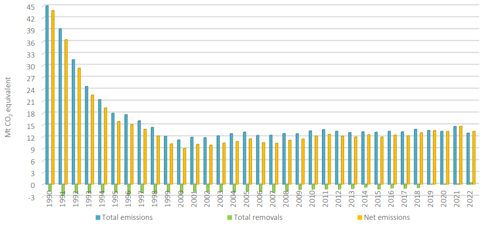
Figure 2.2-1: Trends of GHG emissions and sinks in 1990-2022, Mt CO2 equivalent
In 2022, about 69.2 percent of the national net direct GHG emissions originated from the energy sector (84.7 percent in 1990). Other relevant direct GHG sources were the waste sector-10.8 percent of the total (3.9 percent in 1990), agriculture-10.1 percent of the total (11.6 percent in 1990), IPPU-6.7 percent of the total (3.7 percent in 1990), and LULUCF-3.2 percent of the total (−3.8 percent in 1990) (Figure 2.2-2).
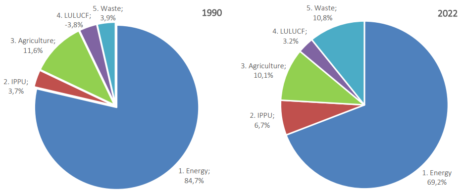
Figure 2.2-2: Breakdown of Moldova's net GHG emissions by sector in 1990 and 2022
Over the 1990-2022 period, net CO2 emissions (with LULUCF) decreased by 72.5 percent (from circa 35.17 Mt in 1990 to 9.66 Mt in 2022). CH4 emissions (with LULUCF) decreased by 61.8 percent (from circa 6.00 Mt CO2 equivalent in 1990 to 2.29 Mt CO2 equivalent in 2022), and N2O emissions (with LULUCF) decreased by 55.0 percent (from circa 2.63 Mt CO2 equivalent in 1990 to 1.18 Mt CO2 equivalent in 2022) (see Table 2.2-2). In Moldova, 1995 is the starting year for monitoring F-gas (HFCs, PFCs, and SF6) emissions (no NF3 emissions have been recorded so far). The evolution of F-gas emissions denotes a steady upward trend in recent years, though their share in the total national GHG emissions structure is insignificant for now.
Table 2.2-2: Direct GHG emissions in 1990-2022, Mt CO2 equivalent
|
1990 |
1995 |
2000 |
2005 |
2010 |
2015 |
2020 |
2021 |
2022 |
'90 - '22, % |
|
|
CO2 (with LULUCF) |
35.17 |
9.66 |
4.09 |
6.48 |
7.73 |
7.65 |
9.49 |
10.52 |
9.66 |
-72.5 |
|
CO2 (without LULUCF) |
37.00 |
11.94 |
6.51 |
8.44 |
9.22 |
9.02 |
9.66 |
10.63 |
9.40 |
-74.6 |
|
CH4 (with LULUCF) |
6.00 |
4.64 |
3.74 |
3.68 |
3.19 |
3.01 |
2.42 |
2.42 |
2.29 |
-61.8 |
|
CH4 (without LULUCF) |
6.00 |
4.64 |
3.74 |
3.68 |
3.19 |
3.01 |
2.42 |
2.42 |
2.29 |
-61.8 |
|
N2O (with LULUCF) |
2.63 |
1.58 |
1.22 |
1.30 |
1.25 |
1.16 |
1.25 |
1.50 |
1.18 |
-55.0 |
|
N2O (without LULUCF) |
2.48 |
1.35 |
0.96 |
1.04 |
1.02 |
0.99 |
1.10 |
1.35 |
1.02 |
-58.7 |
|
HFCs |
NO |
0.00 |
0.00 |
0.02 |
0.07 |
0.14 |
0.21 |
0.21 |
0.23 |
N/A |
|
PFCs |
NO |
NO |
NO |
NO |
0.00 |
0.00 |
0.00 |
0.00 |
0.00 |
N/A |
|
SF6 |
NO |
NO |
NO |
0.00 |
0.00 |
0.00 |
0.00 |
0.00 |
0.00 |
N/A |
|
Total (with LULUCF) |
43.81 |
15.88 |
9.06 |
11.49 |
12.24 |
11.96 |
13.37 |
14.66 |
13.37 |
-69.5 |
|
Total (without LULUCF) |
45.48 |
17.94 |
11.22 |
13.18 |
13.50 |
13.16 |
13.39 |
14.61 |
12.95 |
-71.5 |
Carbon dioxide continues to be the most important source of direct GHG emissions. Figure 2.2-3 shows the fluctuation of direct GHG emissions in the structure of net GHG emissions in 1990 and 2022.
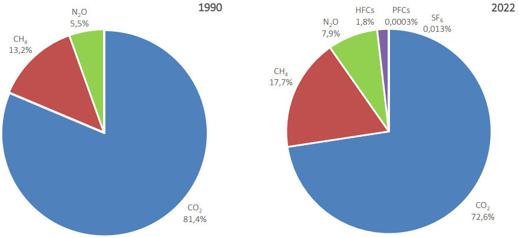
Figure 2.2-3: Direct GHGs' share in the structure of net GHG emissions in Moldova in 1990 and 2022
In 2022, the source categories with the highest share in the structure of net CO2 emissions were 1A1 Energy Industries (34.6 percent of the total), 1A3 Transport (28.2 percent of the total), 1A4 Other Sectors (20.3 percent of the total), 4B Cropland (17.9 percent of the total), 4A Forest Land (−16.5 percent of the total), 1A2 Manufacturing Industries and Construction (6.9 percent of the total), 2A Mineral Industry (5.1 percent of the total), 4F Other Land (3.1 percent of the total), 2D Non-energy Products from Fuels and Solvent Use (1.6 percent of the total), 4C Grassland (−1.3 percent of the total), and 4D Wetlands (−0.9 percent of the total) (Figure 2.2-4).
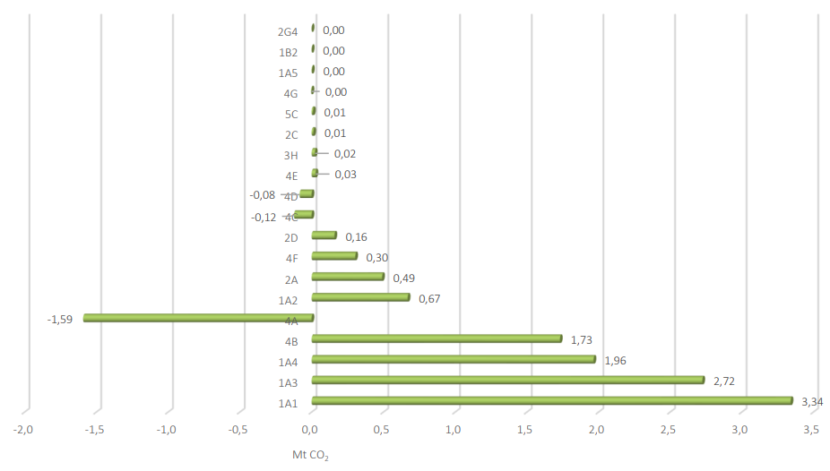
Figure 2.2-4: Share of source categories in the structure of net CO2 emissions in 2022
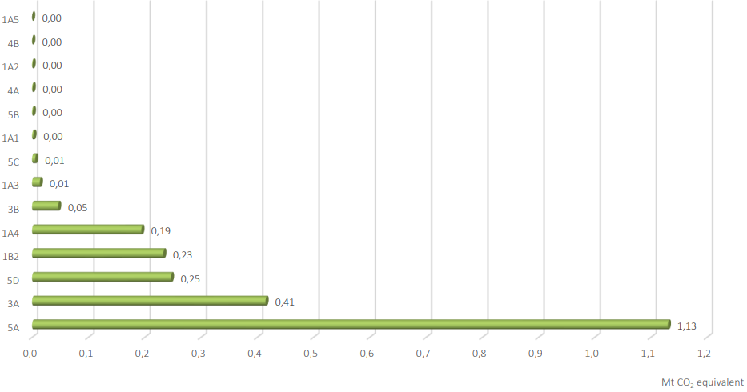
The source categories with the highest share in the structure of net CH4 emissions in 2022 were 5A Solid Waste Disposal (49.3 percent of the total), 3A Enteric Fermentation (18.1 percent of the total), 5D Wastewater Treatment and Discharge (10.8 percent of the total), 1B2 Fugitive Emissions from Oil and Natural Gas (10.2 percent of the total), 1A4 Other Sectors (8.5 percent of the total), 3B Manure Management (2.0 percent of the total), and 1A3 Transport (0.6 percent of the total) (Figure 2.2-5).
Figure 2.2-5: Share of source categories in the structure of net CH4 emissions in 2022
In 2022, the source categories with the highest share in the structure of net N2O emissions were 3D Agricultural Soils (62.3 percent of the total), 4E Settlements (13.5 percent of the total), 3B Manure Management (11.4 percent of the total), 1A4 Other Sectors (4.9 percent of the total), 5D Wastewater Treatment and Discharge (4.2 percent of the total), and 1A3 Transport (3.2 percent of the total) (Figure 2.2-6).
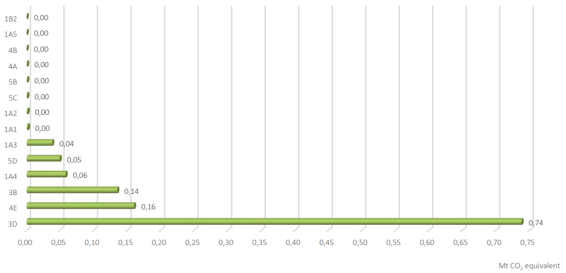
Figure 2.2-6: Share of source categories in the structure of net N2O emissions in 2022
The reduction in GHG emissions over the last 32 years is fully consistent with a decrease in some important socioeconomic indicators: population decreased by 30.6 percent, GDP by 18.4 percent, the consumption of primary energy resources by 73.7 percent, electricity consumption by 50.3 percent, heat consumption by 84.3 percent, cement production by 57.6 percent, lime production by 89.4 percent, steel production by 57.2 percent, bread production by 76.4 percent, meat production by 71.3 percent, the cattle population by 88.8 percent, the sheep and goat population by 55.7 percent, the swine population by 80.4 percent, the poultry population by 62.1 percent, the amount of landfilled wastes by 43.7 percent, the amount of organic fertilizers applied to soils by 82.8 percent, and the amount of nitrogen fertilizers applied to soils by 48.4 percent (nitrogen fertilizer use remains relatively low but has an increasing trend, as Moldovan farmers close the productivity gap with their EU peers) (Table 2.2-3).
Table 2.2-3: Moldova's net GHG emissions and associated variables, 1990-2022
|
1990 |
1995 |
2000 |
2005 |
2010 |
2015 |
2020 |
2021 |
2022 |
|
|
Population, million inhabitants |
4.362 |
4.348 |
4.304 |
4.087 |
3.687 |
3.347 |
3.109 |
3.092 |
3.029 |
|
Compared to 1990, % |
-0.3 |
-1.3 |
-6.3 |
-15.5 |
-23.3 |
-28.7 |
-29.1 |
-30.6 |
|
|
Inter-annual fluctuation, % |
-0.1 |
-0.3 |
-3.4 |
-2.1 |
-0.8 |
-1.3 |
-0.5 |
-2.1 |
|
|
Net GHG emissions, Mt CO2 eq. |
43.808 |
15.876 |
9.064 |
11.485 |
12.239 |
11.960 |
13.370 |
14.657 |
13.372 |
|
Compared to 1990, % |
-63.8 |
-79.3 |
-73.8 |
-72.1 |
-72.7 |
-69.5 |
-66.5 |
-69.5 |
|
|
Inter-annual fluctuation, % |
-17.7 |
-11.5 |
6.2 |
6.9 |
-4.5 |
-1.7 |
9.6 |
-8.8 |
|
|
GHG per capita, tons per capita |
10.04 |
3.65 |
2.11 |
2.81 |
3.32 |
3.57 |
4.30 |
4.74 |
4.42 |
|
Compared to 1990, % |
-63.6 |
-79.0 |
-72.0 |
-66.9 |
-64.4 |
-57.2 |
-52.8 |
-56.0 |
|
|
Inter-annual fluctuation, % |
-17.6 |
-11.3 |
9.9 |
9.2 |
-3.7 |
-0.4 |
10.2 |
-6.8 |
|
|
GDP, billion 2017 $ |
12.466 |
4.998 |
4.409 |
6.207 |
7.271 |
8.728 |
9.405 |
10.715 |
10.178 |
|
Compared to 1990, % |
-59.9 |
-64.6 |
-50.2 |
-41.7 |
-30.0 |
-24.6 |
-14.0 |
-18.4 |
|
|
Inter-annual fluctuation, % |
-1.4 |
2.1 |
7.5 |
7.1 |
-0.3 |
-8.3 |
13.9 |
-5.0 |
|
|
GHG intensity, kg CO2 eq./2017 $ |
3.51 |
3.18 |
2.06 |
1.85 |
1.68 |
1.37 |
1.42 |
1.37 |
1.31 |
|
Compared to 1990, % |
-9.6 |
-41.5 |
-47.3 |
-52.1 |
-61.0 |
-59.5 |
-61.1 |
-62.6 |
|
|
Inter-annual fluctuation, % |
-16.5 |
-13.3 |
-1.2 |
-0.2 |
-4.1 |
7.2 |
-3.8 |
-3.9 |
|
|
Imported energy, million t.c.e. |
16.703 |
5.109 |
2.535 |
3.123 |
2.590 |
2.522 |
3.162 |
3.461 |
3.518 |
|
Compared to 1990, % |
-69.4 |
-84.8 |
-81.3 |
-84.5 |
-84.9 |
-81.1 |
-79.3 |
-78.9 |
|
|
Inter-annual fluctuation, % |
11.0 |
-18.0 |
4.2 |
-8.2 |
-2.1 |
8.9 |
9.5 |
1.6 |
|
|
Consumed energy, million t.c.e. |
15.054 |
5.085 |
2.647 |
3.257 |
3.761 |
3.832 |
4.078 |
4.449 |
3.958 |
|
Compared to 1990, % |
-66.2 |
-82.4 |
-78.4 |
-75.0 |
-74.5 |
-72.9 |
-70.4 |
-73.7 |
|
|
Inter-annual fluctuation, % |
9.7 |
-20.2 |
6.3 |
27.1 |
0.4 |
-2.7 |
9.1 |
-11.0 |
|
|
Produced electricity, billion kWh |
15.690 |
6.168 |
3.624 |
4.225 |
6.115 |
6.050 |
6.281 |
6.810 |
5.853 |
|
Compared to 1990, % |
-60.7 |
-76.9 |
-73.1 |
-61.0 |
-61.4 |
-60.0 |
-56.6 |
-62.7 |
|
|
Inter-annual fluctuation, % |
-25.8 |
-11.8 |
1.1 |
-1.3 |
12.5 |
10.3 |
8.4 |
-14.1 |
|
|
Consumed electricity, billion kWh |
11.426 |
7.022 |
4.510 |
5.838 |
5.257 |
5.455 |
5.466 |
5.842 |
5.674 |
|
Compared to 1990, % |
-38.5 |
-60.5 |
-48.9 |
-54.0 |
-52.3 |
-52.2 |
-48.9 |
-50.3 |
|
|
Inter-annual fluctuation, % |
-3.9 |
-4.4 |
-3.1 |
-0.9 |
-8.7 |
-0.8 |
6.9 |
-2.9 |
|
|
Produced heat, million gigacalories |
22.212 |
9.827 |
4.986 |
5.324 |
4.601 |
3.979 |
3.783 |
4.252 |
3.674 |
|
Compared to 1990, % |
-55.8 |
-77.6 |
-76.0 |
-79.3 |
-82.1 |
-83.0 |
-80.9 |
-83.5 |
|
|
Inter-annual fluctuation, % |
30.9 |
-26.0 |
8.2 |
5.4 |
-2.1 |
-2.6 |
12.4 |
-13.6 |
|
|
Consumed heat, million gigacalories |
20.983 |
8.796 |
4.501 |
4.765 |
3.988 |
3.473 |
3.376 |
3.773 |
3.288 |
|
Compared to 1990, % |
-58.1 |
-78.5 |
-77.3 |
-81.0 |
-83.4 |
-83.9 |
-82.0 |
-84.3 |
|
|
Inter-annual fluctuation, % |
32.1 |
-23.6 |
8.4 |
4.1 |
-3.1 |
-1.9 |
11.7 |
-12.8 |
|
|
Cement production, Mt |
2.288 |
0.519 |
0.432 |
0.773 |
0.861 |
1.123 |
1.164 |
1.171 |
0.969 |
|
Change compared 1990, % |
-77.3 |
-81.1 |
-66.2 |
-62.4 |
-50.9 |
-49.1 |
-48.8 |
-57.6 |
|
|
Inter-annual change, % |
-32.6 |
-6.5 |
15.8 |
-0.9 |
3.4 |
-4.6 |
0.6 |
-17.2 |
|
|
Lime production, Mt |
0.356 |
0.105 |
0.042 |
0.038 |
0.021 |
0.021 |
0.028 |
0.028 |
0.038 |
|
Change compared 1990, % |
-70.5 |
-88.1 |
-89.5 |
-94.2 |
-94.0 |
-92.0 |
-92.1 |
-89.4 |
|
|
Inter-annual change, % |
-6.9 |
-17.1 |
35.3 |
81.5 |
-33.9 |
-23.6 |
-1.2 |
34.5 |
|
|
Steel production, Mt |
0.712 |
0.657 |
0.908 |
1.049 |
0.242 |
0.432 |
0.467 |
0.556 |
0.304 |
|
Change compared 1990, % |
-7.7 |
27.6 |
47.4 |
-66.0 |
-39.4 |
-34.4 |
-21.8 |
-57.2 |
|
|
Inter-annual change, % |
3.6 |
14.1 |
3.5 |
-43.2 |
24.8 |
18.4 |
19.1 |
-45.3 |
|
|
Bread production, Mt |
0.602 |
0.268 |
0.138 |
0.142 |
0.160 |
0.161 |
0.149 |
0.155 |
0.142 |
|
Change compared 1990, % |
-55.4 |
-77.1 |
-76.4 |
-73.4 |
-73.2 |
-75.3 |
-74.3 |
-76.4 |
|
|
Inter-annual change, % |
-17.5 |
-6.1 |
-2.6 |
-0.7 |
0.7 |
-5.9 |
3.9 |
-8.3 |
|
|
Meat production, Mt |
0.258 |
0.058 |
0.013 |
0.007 |
0.025 |
0.046 |
0.071 |
0.066 |
0.074 |
|
Change compared 1990, % |
-77.4 |
-94.8 |
-97.4 |
-90.4 |
-82.2 |
-72.7 |
-74.3 |
-71.3 |
|
|
Inter-annual change, % |
-32.0 |
-48.1 |
-34.7 |
51.9 |
4.3 |
12.5 |
-6.1 |
11.9 |
|
|
Cattle population, million heads |
1.061 |
0.730 |
0.445 |
0.340 |
0.236 |
0.205 |
0.126 |
0.120 |
0.118 |
|
Change compared 1990, % |
-31.2 |
-58.0 |
-68.0 |
-77.7 |
-80.7 |
-88.1 |
-88.7 |
-88.8 |
|
|
Inter-annual change, % |
-12.3 |
-7.7 |
-5.5 |
-2.7 |
-2.9 |
-10.9 |
-4.4 |
-1.6 |
|
|
Sheep and goat population, million heads |
1.282 |
1.423 |
0.962 |
0.954 |
0.921 |
0.881 |
0.629 |
0.585 |
0.568 |
|
Change compared 1990, % |
11.0 |
-24.9 |
-25.6 |
-28.2 |
-31.3 |
-50.9 |
-54.3 |
-55.7 |
|
|
Inter-annual change, % |
-5.3 |
-8.9 |
-0.6 |
-1.0 |
-0.7 |
-8.7 |
-6.9 |
-3.0 |
|
|
Swine population, million heads |
1.850 |
1.016 |
0.493 |
0.493 |
0.512 |
0.484 |
0.367 |
0.372 |
0.363 |
|
Change compared 1990, % |
-45.1 |
-73.4 |
-73.4 |
-72.3 |
-73.8 |
-80.2 |
-79.9 |
-80.4 |
|
|
Inter-annual change, % |
-2.9 |
-34.4 |
16.7 |
26.8 |
-4.0 |
-14.4 |
1.3 |
-2.2 |
|
|
Poultry population, million heads |
24.625 |
13.746 |
13.625 |
22.774 |
23.783 |
12.591 |
9.492 |
9.746 |
9.336 |
|
Change compared 1990, % |
-44.2 |
-44.7 |
-7.5 |
-3.4 |
-48.9 |
-61.5 |
-60.4 |
-62.1 |
|
|
Inter-annual change, % |
2.2 |
-0.8 |
27.3 |
3.5 |
0.6 |
-14.6 |
2.7 |
-4.2 |
|
|
Organic fertilizers applied to soils, Mt |
9.740 |
5.779 |
3.727 |
3.654 |
3.311 |
2.704 |
1.829 |
1.839 |
1.676 |
|
Change compared 1990, % |
-40.7 |
-61.7 |
-62.5 |
-66.0 |
-72.2 |
-81.2 |
-81.1 |
-82.8 |
|
|
Inter-annual change, % |
-11.5 |
-8.6 |
5.0 |
2.4 |
-6.8 |
-11.2 |
0.6 |
-8.9 |
|
|
Nitrogen fertilizers applied to soils, kt active substance |
92.100 |
10.511 |
10.241 |
16.102 |
20.581 |
38.679 |
74.976 |
78.366 |
47.493 |
|
Change compared 1990, % |
-88.6 |
-88.9 |
-82.5 |
-77.7 |
-58.0 |
-18.6 |
-14.9 |
-48.4 |
|
|
Inter-annual change, % |
-25.5 |
73.2 |
0.2 |
21.1 |
-36.7 |
-2.9 |
4.5 |
-39.4 |
|
|
Landfilled wastes, Mt |
2.312 |
1.071 |
0.879 |
1.006 |
1.290 |
1.548 |
1.328 |
1.255 |
1.302 |
|
Change compared 1990, % |
-53.7 |
-62.0 |
-56.5 |
-44.2 |
-33.0 |
-42.5 |
-45.7 |
-43.7 |
|
|
Inter-annual change, % |
-7.8 |
-7.3 |
1.2 |
-8.4 |
0.1 |
0.7 |
-5.5 |
3.8 |
In addition, analyzing the structure of gross domestic energy consumption in 1990 and 2022 shows the decreased share of most polluting types of fossil fuels. Coal fell from 23.8 percent of the total in 1990 to 2.3 percent in 2022 and oil products decreased from 41.5 percent in 1990 to 39.7 percent in 2022. By contrast, the share of biofuels increased from 0.4 percent in 1990 to 19.7 percent in 2022; electricity increased from 8.5 percent in 1990 to 11.9 percent in 2022; and natural gases rose from 25.9 percent in 1990 to 26.3 percent in 2022 (Fig. 2.2-7).
The significant reduction in the level of socioeconomic indicators over the 1990-2022 period is a consequence of the deep transformation processes common during the transition from a centralized economy to a market economy, specifically after the breakup of the Union of Soviet Socialist Republics (USSR) and the declaration of the Republic of Moldova's independence on 27 August 1991. The country rated among the low-medium- income countries in 1990, and currently it is one of the lowest-income nations in Europe. Certain economic decline patterns had been registered prior to 1991, but the separation from the USSR considerably accelerated the shrinking of the economy and its structural change. GDP decreased continuously from 1990 through 2000, when it fell to as low as 65 percent of the 1990 level. The reasons for the economic collapse were numerous. First, the country had been fully integrated in the USSR economic system, and independence resulted, among other things, in the cessation of any subsidies or cash transfers from the centralized government. Second, the end of the Soviet Era, with its well-established commercial links, resulted in the emergence of numerous obstacles to the free movement of goods and in access restrictions introduced by the emerging markets. Third, the lack of domestic energy resources and raw materials in the country contributed considerably to the nation's strong dependence on other former Soviet Republics.
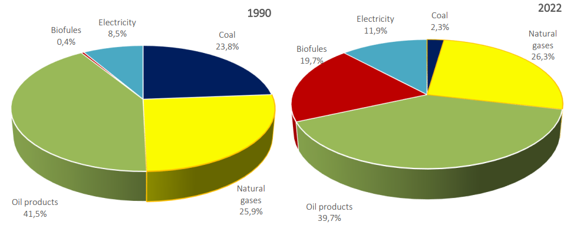
Figure 2.2-7: Share of fuels and energy resources in the structure of gross domestic energy consumption in 1990 and 2022, as a percentage of the total
This dependence has affected consumers' capacity to pay for energy used due to the increased prices of energy resources (for example, from 1997 to 2022, the natural gas tariff multiplied by 14; the electricity tariff multiplied by 13-15; and gasoline, diesel, and liquefied gas prices more than doubled), while about 69 percent of energy resources were imported (2023). On the other hand, without applying cross-subsidization policies, the current energy prices have incentivized the population to take strong energy efficiency measures in Moldova. This led to a significant decrease in energy intensity, which has been declining since 2006, with average annual negative growth of 1.6 percent.
Concomitantly, over the 2000-2022 period, real GDP increased from $4.41 to $10.18 billion (2017 base), while real GDP per capita increased from $1,055 to $2,833 (2017 base). The considerable real GDP growth achieved since 2000 (see Figure 2.2-8) seems to indicate that the economy is developing in the right direction, although in 2022, real GDP reached only 81.6 percent of the 1990 level.
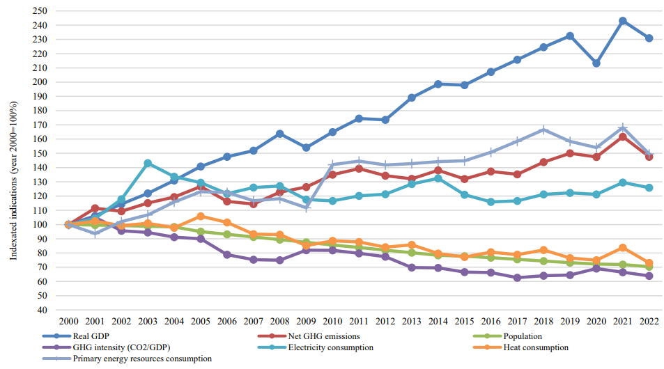
Figure 2.2-8: Trends in net GHG emissions and associated variables, 2000-2022
In addition, from 2000 to 2022, the consumption of primary energy resources increased by 49.5 percent, while the GHG intensity (CO2 eq./GDP) decreased by 36.1 percent. This showed signs of economic growth decoupling from rising net GHG emissions (47.5 percent over the 2000-2022 period), which are driven by the growth in GHG emissions originating from the energy and industrial processes and product use sectors as well as by the degradation of carbon sinks.
The LULUCF sector used to be a net source of carbon removal until 2020, but since 2021, it has been a net source of emissions nationwide, especially due to sharp declines in sequestration by grasslands and forestland, which fell by about 90 percent and 31 percent respectively between 2000 and 2022. This is also due to the 41 percent increase in emissions from cropland in the same period; this partly reflects land conversion, but it is also a function of declining productivity of landscapes due to land degradation and poor land management practices as well as unsustainable harvesting, selective illegal logging, and failure to adapt forest management to new climatic conditions. Altogether, these factors have led to a decline in forest productivity from the perspective of economic output, carbon sequestration potential, and potential to support biodiversity and act as a buffer against climate impacts.
Climate change poses an unprecedented threat to the life and livelihoods of billions of people worldwide. It can increase the incidence of extreme weather and catastrophic events, affect air and water quality, increase the incidence and spread of certain diseases, affect vulnerable areas and communities, threaten the food quality and security, increase food prices, and jeopardize the existence of species, habitats and landscapes. Women and marginalized groups, such as children, persons with disabilities, minority groups, including the Roma, and others often face heightened vulnerabilities due to unequal access to resources, decision‐making platforms, and adaptive capacities. Addressing these disparities is critical for effective and inclusive climate action.156
Climate Change Adaptation (CCA) is the process of adjusting systems and managing climate change risks through a process of identifying, planning, developing and implementing policies, programmes and projects, in order to cope with, reduce vulnerability and build resilience towards a changing climate. Despite encouraging trends, adaptation progress made to date worldwide does not appear to be on the required scale157. There is an urgent need to accelerate adaptation action, especially for the 40% of humankind already living in highly climate‐vulnerable areas158. This acceleration must prioritize gender‐responsive approaches, ensuring that adaptation strategies address the specific needs and contributions of women and other underrepresented groups.158
The Paris Agreement, adopted by the Parties to the UNFCCC in 2015, reinforces the international framework for adaptation action. Under Article 7, paragraph 9, it states that "each party shall, as appropriate, engage in adaptation planning processes and the implementation of actions, including the development or enhancement of relevant plans, policies and/or contributions". National Adaptation Plans (NAPs) are designed to make climate change adaptation more prominent in countries and normally works towards the following objectives160:
To reduce vulnerability to the impacts of climate change, by building adaptive capacity and resilience;
To facilitate the integration of climate change adaptation into relevant new and existing policies, programmes and activities, in particular development planning processes and strategies, within all relevant sectors and at different levels.
This should include adopting gender‐responsive, participatory, and transparent approaches.161 Incorporating a 'human‐rights approach,' along with gender‐responsive, participatory, and transparent approaches, will ensure that adaptation actions respect and protect the rights of all individuals, including woman, minority groups, children and young people.
The global stocktake (GST) is part of the Paris Agreement and should assess the world's collective progress towards achieving the agreement's long‐term goals. The GST will thereby also allow for greater synergy between the mitigation and adaptation processes. An important element in the Paris Agreement is the Global Goal for Adaptation (GGA)162 that aims to provide a clear framework and targets for global and countries' adaptation efforts. This Framework for the GGA attempts to establish multi‐hazard early warning systems (by 2027), climate information services for risk reduction and systematic observation (by 2027), impact, vulnerability, and risk assessment (by 2030), country‐driven, gender‐responsive, participatory, and transparent National Adaptation Plans (by 2030) and accompanying monitoring, evaluations and learning systems (by 2030) in all affected countries. It also will set targets in the following thematic areas (sectors): water, food and agriculture, health, ecosystems and biodiversity, infrastructure and settlements, poverty eradication and livelihoods, cultural heritage.
There is an on‐going debate and drive to align the adaptation component in the NDCs with a NAP in the country if this is established. This will enhance effective climate action and will also help to simplify the country's subsequent reporting nationally and internationally, e.g. through the Monitoring, Reporting and Verification (MRV) requirements of the UNFCCC. Since the Republic of Moldova developed the National Climate Change Adaptation Programme - NCCAP (functioning as Moldova's NAP), it is opportune to include the main priorities as established under the NCCAP in the NDC 3.0. Especially under Moldovan circumstances this seems helpful, as earlier capacity assessments indicated weaknesses in capacity for planning, implementation and reporting of climate mitigation and adaptation actions. Gender and youth responsive approaches within the adaptation cycle are essential to address these capacity gaps effectively, ensuring that Moldova's climate actions are equitable and inclusive.163
The Adaptation Component of the Republic of Moldova's NDC 3.0 as outlined below considers the outcome of the first global stocktake of COP 28 with reference to Adaptation164, describing the following dimensions of the adaptation cycle: impact, vulnerability and risk assessment; planning; implementation; and monitoring, evaluation and learning.
This section gives a summary of climate change conditions, scenarios and up‐to‐date assessments of climate hazards, climate change impacts and exposure to risks and vulnerabilities in the Republic of Moldova (RoM).
Climate conditions and scenarios
The average annual air temperature in the RoM varies from 6.3°C in the North to 12.3°C in the south, with a maximum temperature recorded at 42°C and a minimum temperature of -35°C (very rarely recorded, every 45-50 years).
During the last 133 years, the climate in the Republic of Moldova has become warmer and more arid165, with an average annual temperature increase of more than 1.2°C, see also the Figure 3.2-1 below166:
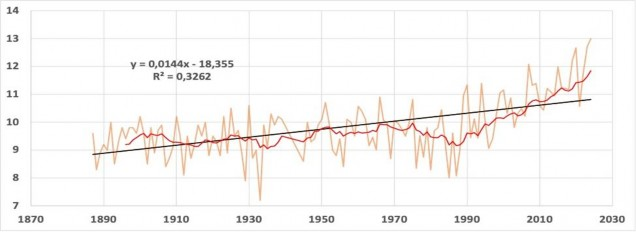
Figure 3.2-1: Trends of annual average air temperature change (°C) for 1887-2024: blue (actual course trend), black solid line (linear trend secular course) and red line (10 year moving average trend) at the oldest the Republic of Moldova's meteorological station Chisinau, the central part of the country.
The warming trend over the last 30 years is higher than over the last 70 years, which highlights that the RoM's rate of warming has increased in recent decades167. For the annual mean and extremes, the greatest increase in recent decades was observed in Southern Agro‐Ecological Zones (AEZ), see further Table 3.2‐1 for details.
Table 3.2-1: Observed Trends in the Annual Mean and Extreme Temperatures
|
Indices |
Northern AEZ |
Central AEZ |
Southern AEZ |
||||
|
1961-2022 |
1991-2022 |
1961-2022 |
1991-2022 |
1961-2022 |
1991-2022 |
||
|
Mean temperature |
°C per decade |
+0.4 |
+0.7 |
+0.4 |
+0.6 |
+0.4 |
+0.9 |
|
Max temperature |
°C per decade |
+0.4 |
+0.9 |
+0.3 |
+0.8 |
+0.4 |
+1.1 |
|
Minimum temperature |
°C per decade |
+0.4 |
+0.5 |
+0.4 |
+0.5 |
+0.4 |
+0.8 |
|
Cold nights TN10p |
%, per decade |
-1.7 |
-1.6 |
-1.6 |
-2.1 |
-1.2 |
-2.8 |
|
Cold days, TX10p |
%, per decade |
-1.2 |
-2.9 |
-0.9 |
-2.6 |
-1.1 |
-3.4 |
|
Warm nights, TN90p |
%, per decade |
+2.6 |
+2.8 |
2.8 |
+2.9 |
+2.4 |
+4.6 |
|
Warm days, TX90p |
%, per decade |
+2.4 |
+4.6 |
+1.6 |
+3.6 |
+2.6 |
+6.0 |
|
Warm spell duration, WSDI |
Days per decade |
+4.1 |
+6.1 |
+4.2 |
+5.4 |
+5.5 |
+9.9 |
|
Cold spell duration, CSDI |
Days per decade |
-0.7 |
-0.9 |
-0.3 |
-1.8 |
-0.5 |
-2.4 |
|
Frost days, FD |
Days per decade |
-5.3 |
-7.5 |
-4.3 |
-8.7 |
-5.2 |
-13.4 |
|
Ice days, ID |
Days per decade |
-4.6 |
-8.3 |
-2.7 |
-6.9 |
-3.2 |
-8.8 |
|
Summer days, SU |
Days per decade |
+5.8 |
+12.3 |
+4.2 |
+10.7 |
+5.7 |
+13.3 |
|
Tropical nights, TR |
Days per decade |
+0.3 |
+0.4 |
+3.3 |
+3.4 |
+2.1 |
+1.6 |
|
Growing season length, GSL |
Days per decade |
+4.6 |
+11.7 |
+3.8 |
+6.1 |
+5.5 |
+18.4 |
The 10 warmest years on record in the RoM have all occurred since 2000, and every summer since 2015 has been warmer than the 1991‐2022 average (except for 2021). The frequency of heatwaves observed in the RoM has also increased in recent decades, with extreme heatwaves in 2007, 2012, 2015, 2018, 2019 and 2020. Heatwaves and prolonged droughts have significant implications for public health, particularly for women and children, who are often the primary caregivers and thus more exposed to these risks. Additionally, water scarcity and crop failures disproportionately impact women in rural areas who are responsible for food production and household water collection.
Heatwaves and prolonged droughts exacerbate water scarcity and crop failures, which can lead to malnutrition and stunting in children. Water scarcity profoundly affects children's education, development, health, and safety, as it limits access to safe water, disrupts learning environments, and increases health risks168.
Children are particularly vulnerable to heatwaves as their smaller bodies are less able to regulate temperature effectively. Furthermore, they depend on caregivers for protection and care during extreme heat events, making them even more susceptible169.
Dehydration, hypothermia and heat stroke particularly affects babies and young children. Exposure to extreme heat in pregnant women lead to a higher risk of pre‐eclampsia and is associated with lower birth weights in new‐borns170.
Average annual precipitation in Moldova varies between a minimum of 382 mm (2015) and a maximum of 960 mm (2010) in the North, to a minimum of 307 mm (2003) and a maximum of 813 mm (1997) in the South. The number of days with precipitation (0.1 mm and more) varied from a minimum of 111 days and a maximum of 174 days in the North, to a minimum of 91 (2003) and a maximum of 152 days (1991) in the South171. The increase in precipitation over the last 133 years was 51.3 mm 172,see also the figure below173.
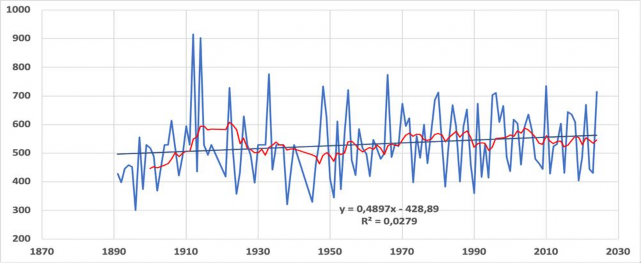
Figure 3.2-2: Trends of annual average precipitation (mm) for 1891-2024: blue (actual course trend), black solid line (linear trend secular course) and red line (10 year moving average trend) at the oldest the Republic of Moldova's meteorological station Chisinau.
Over the last decades, Moldova is seeing a slight decrease in total precipitation, with the highest decreased tendency observed in Northern AEZ, which are accompanied by heavy precipitation frequency trends, that can lead to the increases in pluvial flooding (see Table 3.2‐2).
Table 3.2-2: Observed Trends in the Annual Mean and Extremes for Precipitation
|
Indices |
Northern AEZ |
Central AEZ |
Southern AEZ |
||||
|
1961-2022 |
1991-2022 |
1961-2022 |
1991-2022 |
1961-2022 |
1991-2022 |
||
|
Max 1-day precipitation, RX1day |
mm, per decade |
+1.0 |
+2.9 |
+1.8 |
-2.8 |
+0.1 |
0.0 |
|
Max 3-day precipitation, RX3day |
mm, per decade |
+1.1 |
+1.3 |
+2.3 |
-3.9 |
-0.3 |
-2.3 |
|
Max 5-day precipitation, RX5day |
mm, per decade |
+1.4 |
+0.3 |
+2.6 |
-5.0 |
+0.3 |
+0.5 |
|
Simple daily intensity, SDII |
mm, per decade |
+0.1 |
0.0 |
+0.2 |
0.1 |
0.0 |
+0.1 |
|
Heavy precipitation days, R10mm |
Days per decade |
0.0 |
-1.1 |
0.0 |
-0.8 |
-0.7 |
-0.3 |
|
Very heavy precipitation days, R20mm |
Days per decade |
+0.1 |
0.0 |
+0.1 |
+0.2 |
-0.2 |
0.0 |
|
Consecutive dry days, CDD |
Days per decade |
-0.3 |
+0.5 |
-0.1 |
+3.7 |
+0.1 |
0.0 |
|
Consecutive wet days, CWD |
Days per decade |
0.0 |
+0.3 |
0.0 |
-0.2 |
-0.2 |
0.0 |
|
Very wet days, R95p |
mm, per decade |
+7.0 |
+6.4 |
+8.1 |
+1.3 |
-3.5 |
-9.2 |
|
Extremely wet days, R99p |
mm, per decade |
+5.7 |
+6.8 |
+6.8 |
-7.9 |
+0.2 |
-5.2 |
|
Contribution from very wet days, R95pTOT% |
%, per decade |
+1.1 |
+1.8 |
+1.4 |
+0.7 |
-0.2 |
-1.3 |
|
Contribution from extremely wet days, R99pTOT% |
%, per decade |
+0.9 |
+1.6 |
+1.1 |
-1.1 |
+0.2 |
-1.2 |
|
Total wet-day precipitation, PRCPTOT |
mm, per decade |
-3.0 |
-18.4 |
+0.7 |
-10.0 |
-14.4 |
-12.5 |
Due to enhanced evaporation, a drying trend in the RoM has accelerated during recent decades, which is strongest in Southern and Central AEZs. The frequency of droughts has increased, with in 2020 and 2022 a persistent lack of precipitation affecting large parts of the RoM, together with higher‐than‐average temperatures, that led to a severe‐to‐extreme drought with highest registered negative impact on agriculture.
The climate change projections over the RoM's Northern, Central and Southern AEZs based on the CMIP6174 ensemble of 6 Global Circulation Models (GCMs), under different Representative Concentration Pathways (RCPs)175 and Shared Socio‐Economic Pathways (SSP)176 1‐2.6 and SSP5‐8.5 for 2021‐2040 time period and relative to 1995‐2014 reference period is presented in Table 3.2‐3.
Table 3.2-3: Projections in Annual Mean and Extreme Temperature and Precipitation Indices, presented for 2021-2040 Time Period under two SSP1-2.6 and SSP5-8.5 scenarios, relative to 1995-2014 Reference Period
|
Indices |
Northern AEZ |
Central AEZ |
Southern AEZ |
|||||
|
SSP1-2.6 |
SSP5-8.5 |
SSP1-2.6 |
SSP5-8.5 |
SSP1-2.6 |
SSP5-8.5 |
|||
|
Heat and cold |
Mean temperature |
°C |
1.2 |
1.4 |
1.2 |
1.3 |
1.1 |
1.2 |
|
Max temperature |
°C |
1.3 |
1.4 |
1.3 |
1.4 |
1.3 |
1.3 |
|
|
Minimum temperature |
°C |
1.2 |
1.3 |
1.2 |
1.3 |
1.1 |
1.2 |
|
|
Cold nights TN10p |
% |
-3.0 |
-3.1 |
-2.5 |
-2.5 |
-2.6 |
-2.6 |
|
|
Cold days, TX10p |
% |
-2.8 |
-2.8 |
-2.5 |
-2.7 |
-2.6 |
-2.7 |
|
|
Warm nights, TN90p |
% |
8.5 |
9.4 |
8.8 |
8.5 |
9.4 |
9.4 |
|
|
Warm days, TX90p |
% |
8.3 |
8.3 |
8.0 |
7.6 |
8.8 |
8.4 |
|
|
Warm spell duration, WSDI |
Days |
19.5 |
21.2 |
19.7 |
19.5 |
20.7 |
22.8 |
|
|
Cold spell duration, CSDI |
Days |
-3.6 |
-3.1 |
-2.7 |
-2.0 |
-2.2 |
-1.8 |
|
|
Frost days, FD |
Days |
-12.4 |
-12.6 |
-9.9 |
-9.6 |
-10.8 |
-10.0 |
|
|
Ice days, ID |
Days |
-9.0 |
-8.1 |
-6.2 |
-6.0 |
-6.5 |
-6.8 |
|
|
Summer days, SU |
Days |
14.1 |
14.6 |
12.8 |
13.4 |
13.9 |
14.5 |
|
|
Tropical nights, TR |
Days |
8.8 |
9.9 |
13.0 |
13.2 |
12.8 |
11.7 |
|
|
Growing season length, GSL |
Days |
8.5 |
9.4 |
10.4 |
8.5 |
11.4 |
7.3 |
|
|
Dry and wet |
Max 1-day precipitation, RX1day |
mm |
0.8 |
1.8 |
2.5 |
1.9 |
1.5 |
1.0 |
|
Max 5-day precipitation, RX5day |
mm |
0.7 |
-0.3 |
1.7 |
0.4 |
-0.6 |
-2.5 |
|
|
Simple daily intensity, SDII |
mm |
0.1 |
0.1 |
0.2 |
0.2 |
0.2 |
0.1 |
|
|
Heavy precipitation days, R10mm |
mm |
0.5 |
0.7 |
0.8 |
0.6 |
0.3 |
0.3 |
|
|
Very heavy precipitation days, R20mm |
Days |
0.0 |
0.2 |
0.4 |
0.4 |
0.3 |
0.1 |
|
|
Consecutive dry days, CDD |
Days |
1.9 |
3.7 |
1.1 |
1.9 |
-0.6 |
1.6 |
|
|
Consecutive wet days, CWD |
Days |
0.1 |
0.5 |
0.1 |
0.4 |
0.0 |
-0.2 |
|
|
Very wet days, R95p |
Days |
5.2 |
9.3 |
15.7 |
17.5 |
7.6 |
2.3 |
|
|
Extremely wet days, R99p |
mm |
-1.0 |
9.1 |
14.1 |
11.8 |
7.3 |
8.2 |
|
|
Contribution from very wet days, R95pTOT% |
mm |
0.2 |
1.0 |
2.3 |
2.3 |
0.8 |
0.0 |
|
|
Contribution from extremely wet days, R99pTOT% |
% |
-0.4 |
1.0 |
2.3 |
1.9 |
1.2 |
1.2 |
|
|
Total wet-day precipitation, PRCPTOT |
mm |
-0.2 |
8.6 |
9.8 |
16.6 |
2.1 |
4.7 |
|
This shows that while there is uncertainty over future climate patterns, Moldova is likely to experience more frequent and severe impacts from climate extremes in the coming decades. Especially drought, extreme heat, and wildfire risks are high.
Understanding these projections from a gender lens is critical to identifying and addressing specific vulnerabilities and ensuring equitable adaptation measures. For instance, women in agriculture, who often lack financial resources and access to climate‐resilient technologies such as drought‐resistant seeds or irrigation systems, may require targeted support, such as subsidies for adaptive farming practices.
Vulnerability and impacts of climate change
The Republic of Moldova ranks as one of the most climate‐vulnerable countries in Europe according to the ND‐ GAIN Index177 for 2024. According to the UN Office for Disaster Risk Reduction in its study: "Human Cost of Weather-Related Disasters 1995-2015", Moldova ranks in the top ten countries of the world with the highest proportion of people affected by climate disasters, particularly prone to floods and droughts178. According to the four latest National Communications to the UNFCCC179, Moldova is more likely to be affected by three types of climate hazards: temperature increase and heat waves, changes in precipitation regimes and increased climate‐induced aridity.
Children in Moldova, bear a great burden of the impacts of climate change. 88% of diseases related to climate change is estimated to be borne by children under the age of five.180 The latest data show that one in five infant deaths in Europe and Central Asia are linked to air pollution.181 Children and both physically and mentally more vulnerable to the impacts of climate change than adults. All Moldova's regions face a significant level of climate hazard risk. The country is ranked as having one of the highest Child Climate Risk Index in Europe. Children living in 28 out of Moldova's 34 districts face a high or extremely high risk of climate change.182
Women in Moldova, particularly in rural areas, are disproportionately affected by these climate hazards. Women‐headed households, which constitute 28% of rural households, are more likely to experience poverty and lack the resources needed to recover from climate‐induced disasters, see also Figure 3.2‐3 below.183
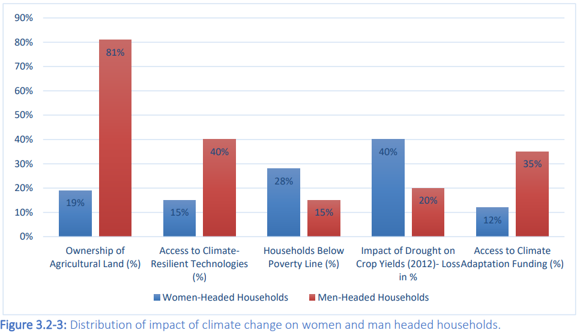
Figure 3.2-3: Distribution of impact of climate change on women and man headed households.
The INFORM184 Subnational Risk Index for Moldova (2023) shows that administrative units185 in Moldova are regarded as having Medium to High and Very High Risk to disaster and humanitarian crises, because of their relatively high Exposure to Hazards, elevated Vulnerability and lack of coping capacity (see also the Figure 4 below and figure 5 for the legend and further explanations)186.
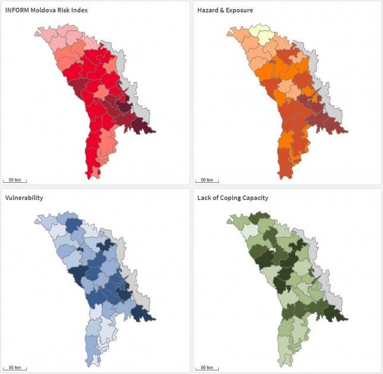
Figure 3.2-4: INFORM Subnational Risk Index for Moldova.
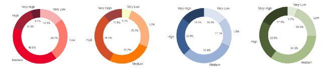
Figure 3.2-5: INFORM Legend and summary for Index for Risk, Hazard and Exposure, Vulnerability, and Lack of Coping Capacity.
Two distinctive patterns can be observed regarding the territorial distribution of the climate risks in Moldova:
(i) annual rainfall averages show a decreasing trend from North to South (droughts); and (ii) an expected increase by approximately 100 mm of the multiannual rainfall averages in the upland regions (causing potential flash floods).
These territorial patterns significantly impact rural women, who can spend an average of 20‐25 hours per week on water collection and agricultural tasks. During periods of drought, this workload increases by up to 30%, reducing women's ability to engage in income‐generating activities or participate in community decision‐making. Similarly, flash floods and soil erosion have disproportionate effects on women farmers, who often lack access to disaster insurance or financial safety nets.187
Some of the most intense poverty is experienced by children living in rural areas in homes with more than three children, minority groups (including Roma and migrant/refugee children), and among those living with disabilities.188 189
Child poverty leads to higher protection risks and a lack of access to essential services, such as in health, nutritious food, safe water and sanitation, a safe home and adequate education, making them particularly susceptible to environmental impacts. It also creates both physical and mental stress for both children and their families, leaving children more vulnerable to child labour, early marriage, abuse and neglect.
The socio‐economic costs of climate‐induced disasters are significant, at the same time the social protection coverage is limited. The 2007 and 2012 droughts caused estimated economic losses of about USD 1.0 billion and USD 0.4 billion respectively; the 2008 and 2010 floods caused estimated economic losses of about USD 120 million and USD 42 million respectively190. Additional from the National Disaster Risk Reduction Strategy for the period 2024-2030 indicate that the heavy rains in the summer of 2010 flooded over 3,000 houses in 85 localities across the country, affecting more than 12,000 people, while the drought of 2020 led to a 30% drop in agricultural production. It is projected that the impacts of climate change on the country's social, environmental and economic dimensions will intensify in the medium‐ to long‐ term191. Gender‐sensitive adaptation strategies, are essential to mitigate these socio‐economic impacts and ensure equitable resilience‐ building.
See below for some further vulnerabilities and impacts of climate change in the main sectors. Climate change vulnerability and impacts in the agriculture sector
Agriculture employs about 30% of RoM's population and is the basic pillar of the rural economy. However, the sector is exposed to and dependent on climatic conditions, being affected both by gradual changes in temperature and precipitation distribution patterns, as well as by extreme climatic phenomena, i.e. droughts, hail, torrential rains, late spring and early autumn frosts, sudden temperature fluctuations in winter, etc.192 This may cause significant decrease of agricultural productivity, due to growing water scarcity for crops, impact of extreme weather events, or proliferation of pests and diseases193. Relatively high level of informality and limits in social protection coverage as important factors behind vulnerabilities in the agriculture sector. Women make up 41% of the agricultural workforce, yet they own only 19% of agricultural land and control just 12% of production resources, such as machinery and technology. Additionally, many rural women face a dual burden- balancing agricultural work with unpaid caregiving responsibilities such as water collection, household management, and subsistence farming. These demands increase during climate‐induced crises, limiting their ability to engage in paid labor, access climate adaptation resources, or participate in decision‐making.
Climate change impacts in the energy sector
The RoM is facing an energy crisis. Around 60% of Moldova's population currently live in energy poverty, spending up to 65% of their budgets on energy bills, with the poorest families having no choice but to limit their energy use.194 195 Children even more vulnerable to environmental shocks and stresses. Around 10% of Moldova's children currently live in extreme poverty196.
The vulnerabilities of the energy197 sector in the Republic of Moldova are observed on both the demand and supply sides, such as production capacity, energy efficiency and supply security, seasonal changes in peak energy consumption trends amplified by climate change events such as high temperatures, changes in rainfall patterns, increased frequency and severity of extreme weather events, including storms, floods, droughts, heat waves, etc., affecting energy distribution and transmission infrastructure, as well as compromising the country's potential to reduce energy imports by harnessing renewable sources (solar, biomass, wind and geothermal).198 In Moldova, rural households, many of which are led by women, disproportionately rely on biomass for heating and cooking. With over 80% of rural households dependent on wood fuel, increasing deforestation and climate‐induced resource scarcity pose significant energy security challenges.
Climate change impacts in the forestry sector
The frequency and severity of weather and climate extremes are increasing, causing forest fires, severe droughts and pest outbreaks, all with potential devastating effects. Consequently, the economic viability of forests is affected, through reduced forest productivity, as well as their capacity to provide sustainable ecosystem services (wood, clean water and air, food and fiber, erosion control and habitat for forest biodiversity).199 Forests are critical for livelihoods and ecosystem stability in Moldova, yet women remain underrepresented in forestry management roles, comprising just 15% of decision‐making positions.
Climate change impacts in the health sector
Floods, droughts, storms, heat and cold waves create direct health risks and collateral effects such as infectious disease outbreaks, food shortages, and mental stress, as well as cardiovascular diseases, gastrointestinal or other diseases caused by vectors and direct or indirect victims of natural disasters among citizens of the Republic of Moldova200. Women, particularly those in caregiving roles, face compounded challenges during health crises. According to national health statistics, women report 30% higher rates of stress‐related illnesses following extreme weather events compared to men201, which is particularly pertinent for pregnant women.
Climate change impacts in the transport sector
The transport sector, which includes road, rail, naval and air transport, is vulnerable to increased frequency and intensity of storms (wind, rain, snow), but also heat waves. This poses a challenge to both the continuity of the supply chain, as well as the resilience of the transport infrastructure and entails higher costs for its construction, maintenance and operation, taking into account that the Republic of Moldova is a country without direct access to the sea, and roads are the basic infrastructure, which play an essential role in the national economy202. In Moldova, rural women depend heavily on local transport systems to access markets, education, and healthcare; a survey conducted by UNDP revealed that over 40% of women in rural areas face disruptions in accessing essential services during extreme weather events.
Climate change impacts in the water resources sector
Climate forecasts indicate that the average annual temperature will increase by 2°C and reduce annual runoff by 13% between 2010 and 2040, with as a consequence an estimated decrease in surface water flows and water availability in the Republic of Moldova by 16‐20% by 2030203. Especially women‐headed households, which constitute over 28% of rural households, will face significant challenges in accessing clean water for both domestic and agricultural use, as studies show that 20‐30% of women in rural areas are directly responsible for water collection and management.
Additionally, around 8% of Moldova's schools still do not have access to centralized water and sewerage systems, with an estimated 50% of all pupils being exposed to poor water quality at school, leaving them
vulnerable to water- borne illness and toxins.204 Finally, around 70% of rural schools have external toilets, with just 16% having hot water available in their washrooms.
Moldova's most vulnerable children are the ones who still do not have access to safe water and sanitation services and live in the districts most impacted by climate hazards and other forms of environmental degradation. These districts include Cahul, Stefan Voda, Hincesti and Orhei205. As water access becomes more challenging, climate stressors also contribute to increased economic dependence, which in turn heightens risks of financial insecurity and gender‐based vulnerabilities.
Proposed adaptation measures in sectors
The vulnerability and risk assessments have led to the following recommended proposed adaptation measures for the different priority sectors in the NCCAP 2030, that are further expanded upon in the Action Plan. It is essential to note that women, children, the elderly, people with disabilities, and low‐income households often face heightened vulnerabilities due to limited access to resources, decision‐making opportunities, and adaptive capacities. Intersecting layers of marginalization206 and barriers207 amplify these vulnerabilities Adaptation measures must address these overlapping vulnerabilities, ensuring inclusive planning that meets the distinct needs of these at‐risk groups.
By acknowledging children and young people as rightsholders and stakeholders in the NDC, which aligns with the Convention on the Rights of the Child as well as the Universal Declaration of Human Rights, we harness the capacity of children and young people to contribute to a sustainable future and to be powerful agents of change, rather than a passive homogenous group.
Some proposed climate change adaptation measures for the Agriculture Sector are (shortened): Implementation of conservation agriculture; Development of drought and heat tolerant varieties; Improved management of fertilizers; Reskilling and upskilling for workers in agriculture sector to be able to implement climate adaptation measures; Provide tailored training and financial incentives for women farmers to adopt climate‐resilient practices; Development /strengthening of markets accessible to small farmers for drought and heat tolerant varieties, irrigation system and other inputs; Introducing Risk Insurance; Expansion of irrigation; Prevention of soil erosion. Introducing drought-resistant crop varieties and scaling up micro- irrigation systems, all with gender related benefits.208
Energy Sector: Balanced use of renewable energy; Storage of electricity; Promote access to renewable energy technologies for women in rural areas; Decentralized generation of electricity; Efficiency of electricity transport and infrastructure; Improve new building standards for electricity efficiency; Promoting youth and women's participation in renewable energy initiatives;209 Skills development for renewable energy and energy efficiency.
Forestry Sector: Research on adaptability of native forest species; Improved forestry practices; Improved Forest Management; Improved disease and pest management, including early warning; Managing invasive species; fire prevention, all ensuring women's participation in gender-responsive forestry initiatives210; Orient/leverage public employment/public works programmes towards environmental objectives, which could water- revitalization of natural wetlands and watershed development.211
Health Sector: Awareness raising; Better evaluation of health impacts by climate change; Prevention, control and early warning of heat waves, and other hazards and shocks'; Better surveillance systems; Increased access to health care, especially for women and girls, including psychosocial support and targeted health campaigns. Strengthening resilience of health infrastructure, as climate change and extreme weather events risk damaging critical infrastructure212, which increases the risk of vulnerable people not getting access to life‐saving support;
Strengthen occupational health and policies and programmes to address climate change risks, including heat stress.213
Transport Sector: Improved capacities in construction and maintenance; Introduction of EU regulations; Introduce new infrastructure standards; Improvement of road drainage; Integrating gender-sensitive approaches214
Water Sector: Efficient use of water resources; Promoting participatory water governance frameworks; Update of design, construction and maintenance of hydro facilities; Implement climate-resilient WASH infrastructure in schools, healthcare facilities, and communities to ensure safety and well-being during extreme climate events; Analysis of ecosystem services in watersheds; Flood and drought risk plans in water basins; Construction of floss control measures; Effective water demand services; ensure that all vulnerable groups, including children have access to climate-resilient water, sanitation, and hygiene services to mitigate the adverse effects of climate change on water resources and public health; Revitalization of natural wetlands; Involve youth and women‐led initiatives gender‐responsive water management initiatives215.
Local adaptation measures: With the NAP project support, Climate Change Adaptation (sometimes also including Disaster Risk Reduction - DRR) Plans are developed for 13 District towns / municipalities216 With support from Japan an additional 7 District towns217 develop similar plans. These Local Adaptation Plans capture the situational analysis of the municipality, including climate observations and scenarios, weather extremes, vulnerabilities, risks and impacts on the different local sectors and infrastructure, as well as recommended measures in the priority sectors, also elaborated in separate Action Plans for each municipality, including specific activities, indicators, timing, responsible local actors, etc. Economic/livelihood diversification, skill development, social protection as they are important factors to support local adaptation and resilience that cut across sectors.218
Provision of climate‐related data, information and services.
The State Hydrometeorological Service (SHS) administers the Meteorological Monitoring System (MMS) that encompasses the meteorological and agrometeorological observations system; issues public weather forecasts and warnings; provides specific information on occurrence and intensity of hazards; analyzes and synthesizes meteorological conditions; develops and publishes information material, etc. To ensure inclusivity, the SHS is encouraged to disaggregate climate data by gender, age, and other vulnerabilities, allowing for more targeted adaptation measures.219
The General Inspectorate for Emergency Situation (GIES) has the mandate to respond to emergencies but also to enhance disaster resilience through a Disaster Risk Management approach. It functions under a well‐ structured, cross‐sectoral National Commission for Emergency Situations, and effectively collaborates with local authorities, civil society and society at large. Women and marginalized groups, such as children, persons with disabilities, minority groups, including the Roma, and others should be actively engaged in these collaborations, particularly in the development and dissemination of disaster risk management plans, and also through representation in the National Commission for Emergency Situations.220 Proactively managing disaster risk from an early age is a crucial part of building a resilient society. Therefore, raising awareness of disaster preparedness in schools and conducting drills are essential211 To ensure equitable disaster response, gender‐ responsive budgeting (GRB) should be integrated into contingency planning, ensuring financial resources address the specific needs of women and vulnerable groups.222.
Early warning systems include monitoring and forecasting, disaster risk assessment, communication and preparedness systems and processes that enable citizens, communities, public authorities, economic operators and other entities to take timely disaster risk reduction measures223.Inclusive communication methods should be prioritized to ensure early warnings are accessible to all, particularly women, children and youth, persons with disabilities, and rural populations.224 The main components of the early warning systems are: monitoring and detection systems and networks; data collection and analysis centers; public warning systems. The Ministry of Internal Affairs aims to develop and implement by the end of 2025 a National Early Warning System with 100% coverage rate of the population, by using all possible media and technologies. As part of the National Early Warning System, specific provisions should be made to ensure women and vulnerable groups have equitable access to the system, addressing barriers such as technology gaps or language constraints.225 This is also supported by other agencies and the World Bank through the Strengthening Disaster Risk Management and Resilience of the Republic of Moldova Project, which aims to support strengthening the level of preparedness and response of the Republic of Moldova to natural disasters and shocks caused by climate change that threaten lives, homes and critical infrastructure.
This section presents a short description of the national adaptation planning process and related legal and institutional frameworks in the Republic of Moldova.
The overarching National Development Strategy (NDS) "European Moldova - 2030" (2022) sets the strategic development vision and includes the country's development priorities to achieve by 2030, captured in 4 areas:
Sustainable and inclusive economic development
Long-term human and social capital
Honest and efficient institutions
A healthy environment
The NDS reflects the UN Sustainable Development Goals (SDGs) and is in line with the following strategic objectives that are to be implemented by 2030:
ensuring resilience to climate change by reducing climate change related risks (SDG 13.1);
reducing water pollution, including through land-based activities (SDG 14.1);
combating soil degradation (SDG 15.3);
integrating biodiversity values into policies (SDG 15.9);
implementing sustainable forest management and increasing afforestation and reforestation (SDG 15.2).
The NDS confirms the European aspirations as established in the EU Association Agreement. The Implementation of the NDS is also supported by the "Program for the promotion of the green and circular economy for 2024-2028 and the Action Plan for its implementation". To strengthen the NDS, gender considerations should be mainstreamed in all areas.
The National Strategy on Disaster Risk Reduction until 2030226 is based on the provisions of the Sendai Framework on Disaster Risk Reduction for the period 2015‐2030. The aim of the Strategy is to establish a comprehensive framework to mobilize and strengthen the efforts of the relevant structures in the public and private sectors, civil society and citizens to strengthen resilience to the impact of possible disasters, both natural and man-made, at national, territorial and local levels, as well as the establishment of effective mechanisms to reduce the risks of disasters, ensure a prompt and adequate response in the event of their occurrence, and the subsequent restoration of the consequences of disasters. The National Strategy should incorporate gender‐ and age‐responsive approaches, ensuring that disaster risk reduction (DRR) and climate adaptation efforts address the needs of women, children, the elderly, and persons with disabilities, as this will contribute to more inclusive and effective disaster management.227
The updated NDC of the Republic of Moldova (NDC 2.0, 2020)228 identified a number of adaptation measures, e.g., undertaking risk and vulnerability assessments, measures supporting the reduction of losses and damages, etc.
The National Climate Change Adaptation Programme until 2030 and its Action Plan (NCCAP 2030, published in 2023)229 was supported by the NAP-2 UNDP/GCF project and submitted to UNFCCC as Moldova's NAP in 2024. The NCCAP 2030 Vision is: "Resilient infrastructure and strengthened national climate change adaptation capacities to ensure population well-being, environmental sustainability and imperturbable functioning of economic sectors". The NCCAP 2030 aims to integrate climate change adaptation measures into development planning at all priority levels and sectors, and to ensure long‐term climate resilience of economic, social and ecological systems. This will support the achievement of the National Development Strategy (NDS). Internationally, the NCCAP is in line with the EU Adaptation Strategy, and the Sendai Framework for Disaster Risk Reduction. The NCCAP focuses on cross-cutting elements such as: strengthening of climate change adaptation capacities and cross‐sectoral Cooperation; raising awareness; expanding financing and budgeting; and mainstreaming of climate change adaptation.
The NCCAP furthermore concentrates on developing measures and activities and investing in climate change adaptation in priority sectors (water, agriculture, health, forestry, energy and transport). The NCCAP is therefore in line with the conditions of the GST of the Paris Agreement, by:
Reducing climate-induced water scarcity and enhance climate resilience to water-related hazards towards a climate-resilient water supply, climate-resilient sanitation and access to safe and affordable potable water for all, as also in line with the National Water Policy and Water Law.
Attaining climate-resilient food and agricultural production and supply and distribution of food, thereby also following the National Strategy for Agricultural and Rural Development 2023 - 2030, and The Land Improvement Programme to ensure sustainable management of soil resources for 2021- 2025.
Attaining resilience against climate change related health impacts, particularly in the most vulnerable communities, thereby following the National Health Strategy 2030.
Reducing climate impacts on ecosystems and biodiversity and accelerating the use of ecosystem- based adaptation and nature-based solutions, thereby following the Forest Code (2024); National Forest Extension and Rehabilitation Program for the period 2023-2032 and the Action Plan for its implementation for the period 2023-2027 and the NBSAP.
Increasing the resilience of infrastructure, energy and transport to climate change impacts to ensure basic and continuous essential services for all, and minimizing climate-related impacts on infrastructure and human settlements, following the Energy Strategy of the Republic of Moldova until 2030; National Energy and Climate Plan; Draft Mobility Strategy; Waste Management Strategy for 2013 -2027.
Recognizing that climate change disproportionately affects women and marginalized groups, the NCCAP 2030 incorporates gender‐responsive measures across priority sectors to ensure that climate adaptation strategies are inclusive and equitable. Specific measures include ensuring women's access to resources, promoting their participation in decision‐making processes, and addressing gendered vulnerabilities. These efforts align with Moldova's broader commitment to social inclusion, ensuring that men, women and children equally benefit from climate resilience initiatives and contribute to sustainable development.230
At local level, most districts and localities have socio-economic development plans, with some activities and targets related to adaptation and mitigation to climate change. A total of 122 municipalities/localities are the signatories of the Covenant of Mayors initiative and made commitments for sustainable energy initiatives and development of the and climate action plans, that should include an adaptation component231. As mentioned before, a number232 of district towns / municipalities have developed local adaptation plans with attached detailed action plans, with NAP project and Japanese support.
While Moldova's Gender Equality Strategy for 2023-2027 primarily focuses on cross‐sectoral integration of gender equality, its principles can support gender‐responsive climate actions alongside initiatives like the Covenant of Mayors for Climate and Energy.233
The main legal and regulatory framework in the field of climate change adaptation in Moldova includes:
‒ Law nr. 78/2017 for the ratification of the Paris Agreement. This Law is contributing to the implementation of the UNFCCC, including its objective, and aims to strengthen the global response to the threat posed by climate change, in the context of sustainable development and efforts to eradicate poverty.
‒ Government Decision No. 425/2024 on organization and functioning of the National Climate Change Commission (NCCC). This decision replaces Government Decision No 444/2020 on the establishment of the coordination mechanism for activities in the field of climate change and establishes the NCCC as an inter‐institutional body at Government level, without legal personality, with the status of coordinating policies in the field of climate change and developing public capital investment projects in the context of climate change mitigation and adaptation.
‒ Climate Action Law No. 74/2024 (adopted in April 2024, to come in force by November 2025). This law establishes the normative framework in the field of climate actions and pursues the objective of achieving climate neutrality by the year 2050, as well as the normative framework for making progress in order to achieve the global objective in terms of adaptation to climate change.
Meeting Moldova's obligations under the EU laws and negotiations will require the transposition of the EU acquis into national legislation, as well as consistent and determined implementation. Moldova already achieved good results in the area of agriculture and rural development where it has implemented a substantial part of the EU Acquis. But there are challenges concerning capacities for mainstreaming the environmental and climate acquis, as well as for effective implementation and enforcement of legislation234. Integrating or strengthening gender equality in these legal frameworks will enable Moldova to better promote inclusive climate resilience and align with EU standards.
The Ministry of Environment (MoE) of the Republic of Moldova is the central state authority responsible for developing and promoting state policies and strategies for environmental protection, climate change and natural resources. On behalf of the Government, the MoE is responsible for implementing the international environmental treaties to which the country is a Party, including the UNFCCC235.
In order to develop the strategic and legal framework in the field of climate change, in 2023 a Section on Climate Change Policy was established within MoE. This Section deals mainly with the development of the strategic and legal framework, including the new Law on Climate Actions and related strategies, plans and its coordination (through the NCCC) and reporting (including internationally).
The Environment Agency under MoE deals mainly with monitoring, authorization issuance and reporting, and also includes laboratories and Information Systems. The Agency has a mandate in climate change, especially for monitoring, reporting and verification (MRV) for Greenhouse Gas Emissions. It also carries out collection, centralization, validation and processing of data and information necessary for developing inventories and reports, e.g. National Communications and Biennial Transparency Reports (BTRs), according to the provisions of the UNFCCC.
The Public Institution "Environmental Projects National Implementation Office" (PI "EPNIO") has as its mission to support MoE and organizational structures to effectively implement external and internal technical assistance projects in environmental protection, use of natural resources and climate change, etc.
"Apele Moldovei" Agency deals with water management, as well as data, information and capacities around droughts and floods.
"Moldsilva" (Forestry) Agency manages the forests in Moldova and needs better capacities for reacting to weather extremes.
The Environmental Protection Inspectorate is the public authority empowered to carry out state supervision and control in the field of environmental protection and the use of natural resources.
The State Hydrometeorological Service (SHS) monitors the state and evolution of hydrometeorological conditions in the country; develop meteorological, hydrological and agrometeorological forecasts; issue alerts on the imminence of dangerous hydrometeorological phenomena; and provide hydrometeorological information to the population, central and local public authorities, emergency services and rescuers.
The General Inspectorate for Emergency Situation (GIES) is an administrative authority subordinated to the Ministry of Internal Affairs, that has its mandate to respond to emergencies and to enhance disaster resilience. It functions under a cross‐sectoral National Commission for Emergency Situations.
The National Bureau of Statistics (NBS) is the institution that collects, processes and disseminates objective, reliable and timely statistics, necessary for the decision-making processes, research, forecasts and general information, following official approved procedures. Related to Climate Change, NBS provides information on: protection of atmospheric air; land and forest; meteorology (temperature, precipitation and wind speed); use of water resources; waste management, etc.
The Ministry of Education and Research supports the country's climate change policy by promoting dedicated educational programmes, scientific studies, and research and innovation activities.
The Ministry of Labour and Social Protection, supports leveraging/orienting/strengthening employment schemes and social protection towards adaptation and climate resilience.
The National Agency for Research and Development is responsible for implementing the national research, innovation and development policy, including in climate related areas.
The Ministry of Finance plays a key role in the country's economic and development planning, where all national and sectoral priorities are defined and implemented through specific budgetary allocations, that can facilitate the integration and financing of climate action at different government levels.
The Ministry of Agriculture and Food Industry deals with land and irrigation in rural areas, that are the main focal areas for climate action in the Ministry, e.g. through its new "National Agency for Land Improvement" and the "Agency for intervention and payments for Agriculture" (AIPA) that manages the resources of the National Fund for the Development of Agriculture and the Rural Environment.
The Ministry of Health deals with Public Health, including how climate change affects health, e.g. through affected water provision, contaminated air, waste, zoonotic transmissions, etc.
The different Departments of the Ministry of Infrastructure and Regional Development have several mandates,
e.g. on construction, roads and transportation, that influence or are influenced by climate change. The Ministry is also responsible for the national territorial plan that guides territorial planning at all levels and in all sectors.
The Ministry of Energy implements the National Energy and Climate Plan (NECP), which aligns with the EU transposition requirements, strategies and plans. In terms of climate change the NECP mostly deals with mitigation but has also resilience elements.
Local Public Authorities (LPAs) are responsible for implementing all policies and strategies that are relevant at local level, including prevention, preparedness, response and recovery measures at the local level in case of emergency situations. Under the new Law on Climate Actions (2024), LPAs "shall prepare and submit annually to the Ministry of the Environment the report on the implementation of the sustainable energy and climate action plans (SECAPs)". These SECAPs "may be developed and approved as separate documents or as part of integrated local energy and climate plans", and SECAPs should be "developed in accordance with the NCCAP and approved by January 1, 2026", though this deadline and target looks very ambitious, especially if no external support is provided. There are several environmental NGOs that have an important role to play in Moldova, but face challenges, especially vis‐à‐vis "Business Associations" that are deemed more important at present.
The Moldova Chamber of Industry and Commerce serves its 1200 private sector members and facilitates trade nationally and internationally. The MCC is in continuous dialogue with the government to advocate for the interests of the private sector.
The Workers' organisations, which play the key role of representing workers' perspectives and interests, as workers are on the frontline of climate impacts.
In accordance with the Government Decision no. 425 of 12.06.2024, the National Commission on Climate Change (NCCC) is an inter‐institutional body, without legal personality, headed by the Prime‐Minister. Its mandate is to: Promote measures and actions necessary for application of the UNFCCC and the Paris Agreement provisions; promote and coordinate climate change policy implementation; integrate climate change mitigation and adaptation in national and sectoral policy documents; recommend financing projects and programs in the field of climate change; monitor the implementation of climate change projects and programs; etc. Under the new Law on Climate Actions (2024) a new set‐up of the NCCC was outlined, highlighting the multi‐sectoral approach of the NCCC, and with an oversight and secretariat role for the Ministry of Environment.
This section describes some of the achieved progress in implementing the national adaptation policies / strategies and concentrates on the planned implementation of the NCCAP 2030.
The Government of Moldova has a strong commitment to increasing the capacity to adapt to climate changes and respond to disasters and climate risks. In 2014 the Government approved the Climate Change Adaptation Strategy (CCAS 2014‐2020), that was also submitted to the UNFCCC as Moldova's 1st National Adaptation Plan (NAP‐1). This CCAS described the climate trends, impacts and vulnerabilities around that time and had as its general objective was: 'Increasing the capacity of the Republic of Moldova to adapt and respond to actual or potential climate change effects'.
The three specific objectives of the Strategy were to:
Create the institutional framework in the field of climate change that would assure the efficient implementation of adaptation measures at the national, sector and local levels.
Create a mechanism to monitor the climate change impacts, the related social and economic vulnerability and for the management/dissemination of the information on risks and climate disasters.
Assure the development of climate resilience by reducing at least by 50% the climate change vulnerability and facilitate climate change adaptation in six priority sectors (agriculture, water resources, forestry, human health, energy and transport).
The above objectives were further detailed by an Action Plan, including for the priority sectors of Agriculture, Water Resources, Health, Forestry, Energy and Transport.
While the CCAS laid a solid foundation for addressing climate risks, significant gaps remained in the integration of CCA considerations into many of the policies of the national priority sectors, as well as establishing accurate cost estimates, implementation and reporting, and integrating climate change adaptation in national costing and budgeting. The EU in its latest progress report on Moldova236, also reported on climate change implementation that "The main obstacles and implementation challenges are attributable to limited national capacities, sectoral policy fragmentation and segregation, insufficient monitoring, and data reliability". Subsequent evaluations, including assessments by UN Women and FAO, highlighted further gaps related to inclusivity, e.g. women's representation in decision‐making processes was limited, and there was a lack of gender‐responsive budgeting. These gaps reduced the effectiveness of adaptation measures, particularly for vulnerable populations such as rural women and marginalized groups.237
Following up on the CCAS and taking into account these experiences and lessons learned, the Republic of Moldova recently developed and launched in 2024 its National Climate Change Adaptation Programme until 2030 and its Action Plan (NCCAP238). This NCCAP 2030 aims to strengthen vertical and horizontal synergies - between the climate change vulnerable sectors, in order to avoid duplication of actions, better streamlining of resources, and ensuring a coherent approach to integrating climate change responses into national and local development planning. The NCCAP 2030 Overall Objective is: "To reduce vulnerability and increase resilience to climate change impacts through systemic transformations in all priority adaptation sectors". This will be achieved through five Specific Objectives (SO):
SO 1: Development of climate change adaptation capacities and cross‐sectoral Cooperation;
SO 2: Raising awareness on climate change adaptation and disaster risk reduction through reliable and accessible information;
SO 3: Expand budgeting for climate change adaptation and increase resilience;
SO 4: Mainstreaming of CCA and disaster risk reduction into sectoral strategic planning and investment planning at national and local level;
SO 5: Increasing the resilience of priority sectors by financing activities in the field of climate change adaptation and reducing risks and adverse impacts of climate hazards.
The first 4 SOs are cross‐cutting, while SO 5 aims to increase resilience and facilitate adaptation to climate change in the six priority sectors (agriculture, energy, forestry, health, transport and water resources). These SO's are further detailed into 18 "Priority Actions" that are subdivided into 90 "Actions" (see Annex 1 for more details).
The NCCAP's objectives provide an opportunity to systematically integrate gender‐responsive measures. Under SO 3, for example, allocating dedicated funds to women‐led initiatives in climate‐resilient agriculture and energy will enhance community‐wide resilience. However, broader financial barriers, such as limited land ownership and restricted access to credit, often prevent women from fully benefiting from these opportunities. Targeted financial mechanisms, including gender‐responsive grant programs and low‐interest loans, can help bridge this gap. SO 2 should include targeted awareness campaigns for rural women and marginalized groups, utilizing local women's networks to ensure broad and effective outreach. These measures align with Moldova's commitments under the Paris Agreement and the Sendai Framework, reinforcing the importance of inclusivity in adaptation planning.
The implementation of the NCCAP will contribute to ensuring climate resilience and facilitating adaptation in the six priority sectors, as well as fulfilling the country's commitments under the Paris Agreement. The main foreseen implementers are national authorities, public agencies and institutions involved in CCA, i.e. mainly the Ministry of Environment, the respective Sector Ministries and its Agencies.
Integrating gender and age specific approaches into the NCCAP will further strengthen Moldova's adaptation efforts. For instance, collaboration with civil society organizations (CSOs) experienced in gender and climate action can help address barriers faced by women and vulnerable groups in accessing adaptation funding and resources.239.
Partnerships with international organizations can ensure the alignment of Moldova's adaptation initiatives with global best practices. The EU4Climate initiative, for example, supports Moldova in developing and implementing climate‐related policies, including the elaboration of its long‐term low emission development strategy and mainstreaming climate considerations into sectoral strategies.240
Regarding the costing for the NCCAP 2030, 1,836 million lei are needed for the period 2023‐2027, of which 275.0 million MDL (15%) from the state budget and 1,561.0 million MDL (85%) from development partners sources, identified at the time of Program development (external sources - UNDP, WB, FAO, GIZ, EIB, EBRD, NAP‐2, NAP‐3, NDA, Embassy of Sweden, EU, etc.), see also Table 3.4‐1 and further costing details in Annex 2.
Table 3.4-1: Estimation of sources for achieving NCAPP by 2030, million MDL241
|
Yearly Funding |
2025 |
2026 |
2027 |
2028 |
2029 |
Total |
|
State budget |
14 |
58 |
76 |
68 |
60 |
275 |
|
External sources (donors) |
78 |
326 |
430 |
384 |
342 |
1,561 |
|
Total |
92 |
384 |
506 |
452 |
403 |
1,836 |
Risks related to the implementation of adaptation
Socio‐economic and political crises are the main external risks to effective implementation of the NCCAP, as well as the possible underestimation of the impact of climate change on the country's development prospects. Unsatisfactory interinstitutional coordination is also identified as a substantial risk, as well as insufficient financial resources. The capacity of staff in institutions invested in CCA tasks is assessed as average risk in terms of both impact and probability. Women and marginalized groups often face heightened vulnerabilities during socio‐economic and political crises, which can exacerbate the impacts of climate change. Ensuring that adaptation strategies are gender‐responsive can mitigate these risks.
Experiences and Good Practices from other Projects
The Republic of Moldova has already some experience with projects that increase its capacity to address the country's climate change vulnerabilities, e.g. the following:
"ENPARD Moldova ‐ Support to Agriculture and Rural Development" (2015‐2022). With a grant of 49 million Euro from EU. The Project improved the financial capacity of the Government to achieve the policy objectives in agriculture and rural development; sustainable management of natural resources; and encouraged cooperation with regions and territorial administrative units with special status.
"Implementation of the Energy Vulnerability Reduction Fund (EVRF) in the Republic of Moldova" (2022-2023) from the donors: SIDA (8,237 million Euro) and SDC (0.936 million Euro). The project has improved EVRF's invoice compensation system to support households in the cold period by: providing compensation: providing invoice compensation for the most vulnerable energy households using the EVRF public mechanism, covering at least 100 thousand households in the very high vulnerability category during the cold season.
"Inclusive Rural Economic and Climate Resilience Programme" (2014-2021)242. Financed at a total of US$ 26.08 million, by IFAD, USAID, GEF and DANIDA. Beneficiaries - Congress of Local Authorities of Moldova (CALM) and the Public Institution Organization for the Development of Entrepreneurship.
"Talent Retention and Rural Transformation Project"243 (2021-2027). Total cost of US$ 50.5 million. The objective of the project is to enable the rural poor, especially youth, women, and smallholders, to increase their productive capacity, resilience to economic, environmental, and climate-related risks, and access to markets.
"Moldova Agriculture Competitiveness Project"244 (2012-2024). Funded through a US$ 54.98 million loan by the IDA with contributions by GEF and Sweden. The competitiveness of the agro-food sector was enhanced by supporting the modernization of the food safety management system, facilitating market access for farmers, and mainstreaming agro- environmental and sustainable land management practices.
"Moldova Water Security and Sanitation Project" (2022-2027)245, with a Loan by the World Bank US$ 50 million, and further contributions by ADA. The project plans to increase access to safely managed water supply and sanitation and WASH services in selected rural areas and towns, expanding access and quality of services for households, businesses, and public institutions and supporting resilience.
"Sustainable and Resilient Communities through Women Empowerment (Phase 1)" (2020-2024). Funded with a grant of US$ 3.175 million from Sweden, this project aimed to enhance the resilience of rural women, who are disproportionately affected by climate change. It focused on improving access to alternative income- generating activities, support services, and knowledge on sustainable management of natural and agricultural resources. The initiative covered regions including Nisporeni, Calarasi, Basarabeasca, Leova, ATU Gagauzia, and the left bank of the Dniester River.246
"Resilient Communities through Women Empowerment (Phase 2)" (2024-2028). Building upon the first phase, this ongoing project is supported by Sweden and Norway with a budget of US$ 8.461 million. It aims to further integrate gender aspects into climate policies, strengthen women's leadership in climate action, and promote gender-sensitive climate solutions. The project collaborates with the Ministry of Agriculture and Food Industry, Ministry of Environment, Ministry of Energy, environmental NGOs, women agri-producers, local public authorities, and business incubators across the Republic of Moldova.247
"Women in Sustainable Development Moldova" Initiative (2020 - Present). This project focuses on implementing a climate-resilient ecological sanitation model in rural areas, treating grey and black water to improve sanitation and reduce environmental impact. By 2024, the initiative had received funding of approximately US$ 3.17 million from Sweden. The project not only addresses environmental challenges but also empowers women in sustainable development practices.248
Lessons learned from Moldova's earlier NDCs and Adaptation Plans and Strategies, as well as the projects mentioned above and others, reveal that despite some progress, significant gaps remain, e.g. reported weaknesses in capacity for planning, implementation and reporting of climate adaptation actions, as well as the limited integration of climate change considerations into many of the national and sectoral development policies and budgets. It is also felt that the Adaptation component was not well integrated in the NDC 1.0 (2015) as it constituted a mere Annex to the main NDC. The adaptation component in the NDC 2.0 was much more detailed and included in the main text (as Chapter 3), but this lacked focus and was not integrally implemented as part of the NDC or reported upon, so its adaptation achievements are unclear. Evaluations of some of the projects above also underscore the importance of considering the specific vulnerabilities of marginalized groups, particularly women and rural communities. Addressing these gaps requires a gender‐ responsive approach. Mainstreaming gender in all climate‐related documents and reports, reinforcing gender institutions, and building women's capacities to increase their participation in policy‐making processes are crucial steps and lead to more effective climate adaptation actions.
To ensure effective gender integration in climate change adaptation, Moldova's institutional framework needs to prioritize to adopt gender‐responsive policies. The Ministry of Environment (MoE), as the central authority, is well‐positioned to lead this effort by embedding gender considerations into national climate action plans and environmental strategies249. For instance, the Climate Change Policy Section under the Ministry, responsible for climate monitoring and reporting, could improve climate risk assessments and program design by integrating gender and age disaggregated data. Similarly, the National Bureau of Statistics (NBS) could support gender‐responsive climate adaptation by ensuring the availability of gender‐disaggregated data in areas such as access to water, sanitation, and nutrition250. The Ministry of Health could play a significant role by recognizing how climate change disproportionately affects women's health. The Ministry of Agriculture and Food Industry could promote inclusive strategies by addressing barriers women face in accessing resources like training, credit, and land ownership.251 The Ministry of Infrastructure and Regional Development could further mainstream gender in transportation systems, water supply networks, etc. The Ministry of Energy could support gender integration by promoting women's participation in renewable energy projects.252 By adopting these approaches across agencies, Moldova can establish a more inclusive and effective climate adaptation framework that meets the needs of all citizens, regardless of gender or age, and enhances resilience of all to climate challenges.
In addition, locally led adaptation efforts are particularly effective when driven by women's networks and grassroots organizations, which play a crucial role in community resilience. Women‐led cooperatives and local adaptation initiatives have demonstrated success in implementing climate‐smart agricultural practices, water conservation strategies, and disaster preparedness plans. Strengthening these networks through targeted funding, capacity‐building, and inclusion in decision‐making processes can significantly enhance Moldova's climate adaptation efforts at the community level. To increase inclusiveness and respect the rights of all human beings, "child‐ and youth‐led initiatives" also should be considered alongside women's initiatives.
Considering all the above, it was proposed to develop this Adaptation Component for the NDC 3.0 by including the main and priority adaptation actions from the current NCCAP and ensuring its integration, including additional gender elements. Through this inclusion in the NDC, the reporting, monitoring & evaluation, awareness raising, advocacy and education on climate action can be enhanced. Annex I gives a summary of the NCCAP Action Plan, that should be consulted separately for details.
This section describes the system for monitoring and evaluation of the NCCAP 2030, with a focus on integrating gender‐responsive approaches.
The 2030 NCCAP provides a climate change adaptation monitoring and evaluation framework for Moldova, with the aim of improving the collection and distribution of data relevant to climate change adaptation for better informed timely decision-making. It follows the Paris Agreements that requires monitoring of the following:
implementation of the adaptation process;
the effectiveness of adaptation measures;
progress towards the overall adaptation target;
progress in achieving the NDC and its adaptation actions.
It also follows the national monitoring requirements as provided for in the Regulation on planning, development, approval, implementation, monitoring and assessment of public policy documents (Government Decision No. 386/2020). The NCCAP M&E framework focuses on responsibility, learning and knowledge management, with the following results and impacts to be assessed:
Results of implementation of adaptation and resilience plans, strategies and actions.
The degree of vulnerability reduction.
Level of increased resilience to climate change (national and local).
To ensure gender responsiveness, the M&E system will track gender‐disaggregated data to assess how men, women, and vulnerable groups experience and respond to climate impacts. This approach is crucial for designing adaptive policies that are inclusive and equitable. The monitoring framework includes process-level results on coordination, integration of CCA into sectoral policies (especially in the agreed priority sectors of agriculture, forestry, energy, transport, water resources and health), capacity development and knowledge management.
The indicators of the NAP M&E framework refer to 3 levels of results: macro (cumulative impact at national level); meso (result at sector or region/district level); and Micro (result at the level of projects, programs). These will provide information about:
Climate impact or risks: impacts that changing climate parameters may have on socioeconomic and ecological systems.
Adaptation actions: information about measures that are implemented to prevent adverse effects on climate change.
Adaptation results: information and assessments of the results of taken adaptation actions.
Processes: Information about processes such as coordination, capacity development, knowledge management and integration of CCA aspects into sectoral policies, which improve adaptive capacity and influence adaptation actions and outcomes. Special attention should be given to how these processes impact gender equality, especially in sectors like agriculture, health, and water resources.
The NAP monitoring and evaluation indicators follow the criteria of availability, representativeness, continuity, and rigor, and measure the degree of achievement of the General Objectives, Specific Objectives and adaptation measures to climate change. The indicators are also aligned with already existing indicators, e.g. as established in the NDS "European Moldova 2030" and existing sectoral plans. Where appropriate, the proposed indicators are adjusted to international indicators (especially at macro level). Furthermore, the number of indicators was kept limited, to make it practical and feasible for reporting. See Table 3.5-1 below for details on the main Indicators for the Specific Objectives. The indicators and targets for the different sectors are still under discussion and being determined.
Table 3.5-1: NCCAP main indicators and targets.
|
NCCAP Specific Objectives |
Impact indicator |
Baseline 2023 |
Intermediate target 2026 |
Final target 2030 |
|
1. Development of climate change adaptation capacities and cross‐sectoral cooperation |
Number of NCCC meetings organized |
0 |
4 |
8 |
|
2. Raising awareness on climate change adaptation and disaster risk reduction through reliable and accessible information |
Climate change knowledge management platform created and operational (number of users) |
0 |
20,000 |
50,000 |
|
3. Expand budgeting for climate change adaptation and increase resilience |
The Climate Budget Tagging (CBT) system is developed and applied |
- |
CBT is developed |
CBT is applied |
|
4. Mainstreaming of CCA and disaster risk reduction into sectoral strategic planning and investment planning at national and local level |
Number of strategic sectoral documents integrating CCA aspects |
- |
3 |
6 |
|
5. Increasing the resilience of priority sectors by financing activities in the field of climate change adaptation and reducing risks and adverse impacts of climate hazards |
Amount of funding of actions in the field of CCA (Million MDL) |
- |
2,063 |
4,607 |
It is proposed that the NCCC provides the institutional framework for monitoring, reporting and verification of the national process of adaptation to climate change, in collaboration with central public authorities, the private sector and civil society. The monitoring of the implementation of the NCCAP is carried out by the Ministry of Environment, which will periodically assess the degree of achievement of indicators and objectives. The administration of the database, the monitoring and reporting of indicators, as well as the development of the annual report on the progress made in the field of climate change are proposed to be carried out by Climate Change Policy Section. To ensure accountability, gender‐responsive data will be integrated into reports for priority sectors, tracking women's participation in decision‐making and access to adaptation resources. As capacity grows, this will expand to other sectors, supported by gender audits and transparent reporting to strengthen adaptation efforts at all levels.
Based on the information collected, annual progress report will be developed. An interim evaluation by 2027, and a final evaluation by 2031 are planned. The annual progress reports and evaluation reports will be discussed in the NCCC and then presented to the Government for examination. The Ministry of Environment will publish the annual and the interim progress reports and final evaluation reports of the Programme on the authority's official website. These reports will include a section that evaluates the integration of gender‐related objectives into climate adaptation actions, focusing on measurable outcomes in priority sectors. The evaluation will assess whether these actions have effectively addressed the specific needs of both men and women, particularly in vulnerable communities, and provide recommendations for improving gender responsiveness based on available data.
The overall objective of Moldova's Climate Change Adaptation Programme until 2030 is to reduce vulnerability and increase resilience to climate change impacts through systemic transformations in all priority adaptation sectors.
This will be achieved through five specific objectives of the NCCAP. Four of these are cross‐cutting, while the fifth aims to increase resilience and facilitate adaptation to climate change in the six priority sectors (agriculture, energy, forestry, health, transport and water resources). See also the separate NCCAP Action Plan until 2030, that further includes Responsible Institution, Indicators, Timing of Implementation, and sources of Funding.
To ensure a gender‐responsive approach to climate adaptation, gender considerations have been integrated into this action plan using two methods: (1) directly modifying the wording of relevant actions where gender‐ responsive measures could naturally be included - as highlighted in the below, and (2) adding gender consideration sub‐notes where modifying the original action wording was not possible. This should also assist in tracking progress in implementing gender‐responsive climate adaptation policies
SO 1. Development of climate change adaptation capacities and cross‐sectoral cooperation
Priority action 1.1. Operationalize the coordination mechanism for climate adaptation (3 actions, summarized)
Gender Consideration for Priority Action 1.1: To ensure inclusive participation in climate governance, at least 30% of representatives in the NCCC and technical working groups should be women, reflecting gender‐ balanced decision‐making in climate adaptation efforts.
Action 1.1.1: Update the regulatory framework to reflect the institutional changes and to ensure representation in the NCCC of relevant institutions from all priority sectors for adaptation to climate change
Action 1.1.2: Develop and adopt clear regulations for the NCCC, its technical committees and secretariat Action 1.1.3: Implementation of a national system for climate change adaptation monitoring and assessing
Priority action 1.2. Strengthen institutional capacities to effectively implement CCA measures (2 actions, summarized)
Action 1.2.1: Review sectoral normative framework and update the mandates of the sectoral ministries to include responsibilities for climate change integration
Action 1.2.2: Revise internal administrative regulations to ensure that sectoral institutions have formal administrative capacity to address climate change
Priority action 1.3. Ensure continuous targeted capacity building trainings for CCA policy implementation (4 actions)
Action 1.3.1: Deliver capacity building trainings related to CC for key staff from sectoral ministries and agencies, with a gender quota ensuring at least 40% female participation in leadership training.
Action 1.3.2: Implement targeted training of trainer programs on policy development, coordination, integration, communication and project management for designated staff
Action 1.3.3: Organizing trainings for civil servants and LPAs, on risks and climate vulnerabilities and integrating CCA aspects into strategic planning and sectoral and local budgeting
Action 1.3.4: Integrate CCA and DRR into university curricula
SO 2. Raising awareness on climate change adaptation and disaster risk reduction through reliable and accessible information
Priority action 2.1. Ensure the availability and use of climate data and information in priority sectors (3 actions) Action 2.1.1: Establishment of an integrated national information system for climate change
Action 2.1.2: Collect data and build information database for CCA planning and implementation at the sectoral designated institutions
Action 2.1.3: Development and implementation of standard procedures for collecting and sharing climate data and information relevant to each priority sector
Priority action 2.2. Targeted capacity building on climate‐related information management, use and sharing (2 actions)
Action 2.2.1: Introduce mandatory annual in‐service trainings for all designated civil servants on the relevance and use of climate data and information
Action 2.2.2: Identification of data/information gaps with respect to climate change
Priority action 2.3. Establish a coordinated system of CCA and DRR data collection and management (2 actions)
Action 2.3.1: Carry out an inventory of existing and ad hoc DRR and climate hazards information, tools and technologies, as well as respective agency functions and responsibilities
Action 2.3.2: Digitize the meteorological and climate data available and publish them
Priority action 2.4. Increase awareness and preparedness of decision makers and general public on climate‐ related risks and possibilities for adaptation (6 actions)
Action 2.4.1: Implement a national information campaign explaining the needs and perspective of CCA and DRR, ensuring gender‐sensitive messaging that reaches women, persons with disabilities, and marginalized groups.
Action 2.4.2: Develop and implement on‐site training programs focused on climate impacts and climate vulnerability assessment methodologies and approaches
Action 2.4.3: Development of the Methodology for climate risk assessment Action 2.4.4: Assessment of 4 prioritized risks for the national context
Action 2.4.5: Development of climate risks scenarios and assessment of the impact on vulnerable regions and priority sectors
Action 2.4.6: Expand the use of Climate Services in the targeted sectors, ensuring early warning systems prioritize gender‐sensitive communication, such as reaching women through local women's networks.
SO 3. Expand budgeting for climate change adaptation and increase resilience
Priority action 3.1. Mainstreaming of CCA considerations into the sectoral budgets and ensuring financial and operational cross‐sectorial synergies (2 actions)
Action 3.1.1: Incorporate climate change indicators into planning and budgeting frameworks, ensuring adaptation funds allocate at least 15% to gender‐responsive projects.
Action 3.1.2: Develop and apply guidance on integration of climate considerations in the sectoral budgets
Priority action 3.2. Capacity building for CCA integration into national and sub‐national budgetary planning and financing (2 actions)
Action 3.2.1: Train designated staff within the Ministry of Finance on CCA budgetary planning methodology
Action 3.2.2: Implement capacity‐building activities and awareness for budget planning specialists and programme managers in the priority sectors on national CCA priorities
SO 4. Mainstreaming of CCA and DRR in the sectoral strategic and investment planning at national and local levels
Priority action 4.1. Incorporate climate change adaptation considerations into sector management practices (4 actions)
Action 4.1.1: Complete integration of climate considerations into the Guideline of the EIA procedures Action 4.1.2: Introduce sector specific climate screening tools to identify the most bankable and impactful projects
Action 4.1.3: Develop guidelines or manual, and technical standards for climate risks and vulnerabilities assessments to help integrate CCA considerations into development planning
Action 4.1.4: Develop guidelines for incorporating CCA into regional and local development plans
Priority action 4.2. Incorporate climate DRR into development planning and increase DRM preparedness (5 actions)
Action 4.2.1: Mapping settlements vulnerable to flooding, landslides and other climate hazards
Action 4.2.2: Develop, test and improve early warning systems and mechanisms for disaster risks communication
Action 4.2.3: Improve/upgrade the hydrometeorological monitoring system to track key physical processes over time
Action 4.2.4: Integrate sectoral information, relevant to CC in the EWS / Enhance existing sector‐specific surveillance systems to have EWS function
Action 4.2.5: Establish a national nutrition surveillance system to assess the conditions for reducing food security due to drought and flood
Priority action 4.3. Gender integration into CCA and DRM planning, and promotion of community‐based adaptation action (3 actions)
Action 4.3.1: Conduct an in‐depth cross‐sectoral analysis of the impact of climate change on vulnerable groups, including a specific focus on gender‐differentiated vulnerabilities.
Action 4.3.2: Develop a 4‐year gender‐responsive communication strategy to generate and increase awareness on climate related risks and hazards, as well as adaptation and risk reduction options
Action 4.3.3: Identify and assess monitoring indicators, including gender‐responsive indicators and disaggregation of data by gender to track the differentiated impacts of climate adaptation efforts on women, men, and vulnerable groups
SO 5. Increasing the resilience of priority sectors by financing activities in the field of climate change adaptation and reducing risks and adverse impacts of climate hazards
Priority action 5.1. Adaptation of the AGRICULTURE sector to climate change by implementing complex agricultural practices, modern adaptation technologies and soil conservation (4 actions)
Action 5.1.1: Stimulate the construction of rainwater collection basins for irrigation
Action 5.1.2: Implement digital agricultural technologies both in the open field and in protected areas Action 5.1.3: Create and maintain the genetic fund for agricultural crops
Action 5.1.4: Promote subsidizing agricultural producer groups on the basis of climate resilience development programs, ensuring that at least 40% of subsidies target women‐led agricultural initiatives.
Priority action 5.2. Increase energy efficiency and resilience of the ENERGY sector infrastructure through adjustment to the future hydro‐meteorological parameters (5 actions)
Action 5.2.1: Review and improve standards for the construction, operation and maintenance of energy infrastructure in the face of climate change
Action 5.2.2: Incorporate climate resilience into the design and engineering of the energy distribution network
Action 5.2.3: Increase the capacities of the local energy production by supporting renewable energy investments
Action 5.2.4: Promote efficient energy use and high energy efficient products, including incentivizing investment in clean energy
Action 5.2.5: Implement public buildings energy efficiency investment projects
Priority action 5.3. Adaptation of the FORESTRY sector to climate change through complex biodiversity conservation practices and ecosystem‐based approach (14 actions)
Action 5.3.1: Development of normative regulations for the practices of carbon stock conservation in forests and their incorporation in the forest management
Action 5.3.2: Adapting forest regeneration regulations and practices to the needs of climate change Action 5.3.3: Improving the capacity of public forestry consultancy services with respect to climate change impacts and adaptation options
Action 5.3.4: Strengthening the information system on state and evolution of forests in the Republic of Moldova by conducting the National Forest Inventory
Action 5.3.5: Adapting practices of logging in the country's forests to climate change, ensuring the inclusion of women in decision‐making, forest resource management, and climate‐adaptive logging practices.
Action 5.3.6: Targeted use of modern biotechnologies for the propagation of vegetative material to provide the forestry sector with reproductive material in the new climatic conditions
Action 5.3.7: Creation and/or rehabilitation of silvo‐pastoral and agroforestry systems Action 5.3.8: Creation and reconstruction of green spaces in urban and rural localities Action 5.3.9: Afforestation of riparian strips of rivers and water basins
Action 5.3.10: Increasing the afforestation degree of the country through planting forest crops resilient to climate change
Action 5.3.11: Creation and consolidation of systems of forest belts for the protection of agricultural fields and roads
Action 5.3.12: Ecological reconstruction of trees that are inconsistent and vulnerable to climate change Action 5.3.13: Implementation of the forest regime in all forests and forest vegetation regardless of departmental affiliation and nature of property, through development of forestry management plans Action 5.3.14: Conducting fundamental and applied research to identify interactions related to climate change, forest species and appropriate management strategies of forestry ecosystems
Priority action 5.4. Reduce the impact of climate change on public HEALTH and medical services (11 actions)
Action 5.4.1: Assessing the costs of health services to people whose health has been affected by climate change, as well as the costs of recovery from the impact of climate change on health sector infrastructure Action 5.4.2: Develop and implement a financing strategy for investment projects in the public health sector to adapt to climate change
Action 5.4.3: Identify a set of indicators and targets to reflect the physical processes of climate change, as well as their impact on public health and health system infrastructure
Action 5.4.4: Develop/elaborate/adapt clinical protocols on the prophylaxis and treatment of climate change related diseases
Action 5.4.5: Establish an efficient information system in the field of environment and health with aspects of climate change
Action 5.4.6: Reviewing and improving standards for the operation, maintenance and renovation of the engineering networks of medical institutions, taking into account changing climate conditions
Action 5.4.7: Promote modification of hospital infrastructure for operationalization to "green standards" Action 5.4.8: Providing all medical institutions with alternative sources of electricity, water, heat, etc.
Action 5.4.9: Increase access to health care in isolated communities to populations particularly vulnerable to the effects of climate change
Action 5.4.10: Creation and maintenance in each medical institution of reserves of medicines, consumables, sanitary materials, drinking water, food, fuel, etc.
Action 5.4.11: Regular updating and improvement of territorial and institutional plans for preparedness and response to public health emergencies, including caused by climate change
Priority action 5.5. Increase the resilience of the TRANSPORT sector infrastructure, through plying technologies adjusted to future hydro‐meteorological parameters (5 actions)
Action 5.5.1: Reviewing and improving standards for the construction, operation and maintenance (O&M) of road infrastructure considering climate change
Action 5.5.2: Incorporate climate resilience requirements into the design and engineering of transport infrastructure
Action 5.5.3: Development / updating of normative acts / regulations regarding the modernization of the drainage systems for roads and railway and the improvement of the collection and evacuation of rainwater from the roads and railway
Action 5.5.4: Development of mechanisms for checking the quality of built road infrastructure / rehabilitated according to the new standards for climate change adaptation
Action 5.5.5: Revision / adoption of the legal framework regulating the naval transport, in view of mainstreaming climate change considerations
Priority action 5.6. Adaptation of the WATER sector to CC through efficient resource use, ensuring its quality and quantity and reducing the floods risk (13 actions)
Action 5.6.1: Ensure populations with data and functionality of the Information System State Water Cadaster
Action 5.6.2: Secure regular, country‐wide (basin / sub‐basin based) water use balance assessment, by using modern modeling tools
Action 5.6.3: Undertake the assessment of the use of controlled flood
Action 5.6.4: Revision of the norms for water supply and sanitations for settlements
Action 5.6.5: Increase the level of water recycling for industrial and domestic needs; promote cleaner production practice
Action 5.6.6: Secure / enforce authorized water use, the measurements of water traffic
Action 5.6.7: Adopt better water demand management measures by reinstatement of use of existing relevant instruments, ensuring equitable access to water resources and decision‐making opportunities for women in community‐based water management.
Action 5.6.8: Integrate CC resilience aspects into the design of water treatment and wastewater treatment facilities
Action 5.6.9: Revitalization of natural wetlands, as well as restoration of small rivers natural shoreline Action 5.6.10: Optimization of the number of dams built on Nistru and Prut tributaries
Action 5.6.11: Establish Public‐Private Partnership for rainwater harvesting or water‐reuse initiatives Action 5.6.12: Flood / Flash flood control infrastructure rehabilitated / created
Action 5.6.13: Hydrological posts on principal Pruth and Dniester tributaries established and equipped, and manpower secured
ANNEX 2: COSTS ESTIMATES OF NCCAP 2030
Breakdown of NCCAP 2030 costs by specific objectives and actions (million MDL)
|
Specific objectives (SO) |
Implementation costs |
|
SO 1. Developing СCA capacities and cross-sectoral cooperation |
11.5 |
|
Priority Action 1.1. Operationalization of the CCA coordination mechanism |
1.8 |
|
Priority Action 1.2. Institutional capacity building for effective implementation of CCA measures |
2.5 |
|
Priority Action 1.3. Ensuring continuous trainings aimed at capacity development for the CCA policy implementation |
6.6 |
|
SO 2. Raising awareness on climate change adaptation and disaster risk reduction by means of reliable and accessible information |
15.4 |
|
Priority Action 2.1. Ensuring availability and use of climate data and information in priority sectors |
1.9 |
|
Priority Action 2.2. Targeted capacity building on climate change information collection, management, use and sharing |
6.7 |
|
Priority Action 2.3. Creating a coordinated system for collection and management of disaster risk reduction and CCA data |
2.2 |
|
Priority Action 2.4. Raising awareness and preparedness of policy makers and general public on climate risks and adaptation possibilities |
4.6 |
|
SO 3. Expanding CCA budgeting and increasing resilience |
1.9 |
|
Priority Action 3.1. Integrating CCA aspects into sectoral budgets and ensuring cross-sectoral financial and operational synergies |
0.3 |
|
Priority Action 3.2. Capacity building for CCA integration in budget planning and funding at national and local level |
1.6 |
|
OS 4. Integration of CCA and RRD into sectoral strategic planning and investment planning at national and local level |
21.4. |
|
Priority Action 4.1. Integrating climate change adaptation aspects into sectoral management practices |
1.6 |
|
Priority Action 4.2. Integrating climate RRD into development planning and enhancing preparedness for disaster risk management |
16.8 |
|
Priority Action 4.3. Gender mainstreaming in CCA and MRD planning, and promotion of adaptation actions at Community level |
2.9 |
|
OS 5. Increasing the resilience of priority sectors through climate investment and reducing the risks and negative impacts of climate hazards |
1,786.3 |
|
Priority Action 5.1. Adaptation of the agricultural sector to climate change by implementing complex agricultural practices, modern adaptation technologies and soil conservation |
364 |
|
Priority Action 5.2. Increasing energy efficiency and resilience of the energy sector infrastructure by adjusting to the forecasted hydrometeorological parameters |
58.3 |
|
Priority Action 5.3. Adaptation of the forestry sector to climate change by implementing complex biodiversity conservation practices and ecosystem approach |
670 |
|
Priority Action 5.4. Reducing the impact of climate change on public health and health services |
38.2 |
|
Priority Action 5.5. Increasing the resilience of the transport sector infrastructure by implementing technologies adjusted to the forecasted hydrometeorological parameters |
4.5 |
|
Priority Action 5.6. Adapting the water resources sector to climate change through efficient use of resources, ensuring their quality and quantity and reducing the risk of flooding |
308 |
|
Total |
1,836.4 |
Breakdown of NCCAP 2030 costs by years (MDL)
|
Years |
2023 |
2024 |
2025 |
2026 |
2027 |
2023-2027 |
|
SO1 |
2,208,000 |
7,297,850 |
1,948,800 |
- |
- |
11,454,650 |
|
SO2 |
177,165 |
4,374,100 |
5,851,800 |
3,460,800 |
1,485,800 |
15,399,665 |
|
SO3 |
29,600 |
1,585,000 |
270,000 |
- |
- |
1,884,600 |
|
SO4 |
1,140,000 |
6,281,000 |
7,664,700 |
5,958,300 |
340,000 |
21,384,000 |
|
SO5 |
88,173,972 |
364,577,561 |
489,777,668 |
442,764,269 |
400,987,887 |
1,786,281,357 |
|
Total |
91,728,737 |
384,115,511 |
505,512,968 |
452,183,369 |
402,813,687 |
1,836,354,272 |
|
% |
Percent |
|
°C |
Degrees Celsius |
|
AEZ |
Agro-Ecological Zones |
|
AR4 |
Forth Assessment Report |
|
AR5 |
Fifth Assessment Report |
|
AR6 |
Sixth Assessment Report |
|
ATULBD |
Administrative Territorial Units on the Left Bank of the Dniester River |
|
AVR |
Commission Implementing Regulation (EU) 2018/2067 of 19 December 2018 on the verification of data and on the accreditation of verifiers pursuant to Directive 2003/87/EC |
|
BESS |
Battery Energy Storage System |
|
BTR |
Biennial Transparency Report |
|
CBAM |
Carbon Border Adjustment Mechanism |
|
CBDR |
Common but differentiated responsibilities |
|
CBT |
Climate Budget Tagging |
|
CCA |
Climate Change Adaptation |
|
CCAS |
Climate Change Adaptation Strategy |
|
CH4 |
Methane |
|
CMA |
Conference of the Parties serving as the Meeting of the Parties to the Paris Agreement |
|
CO2 |
Carbon Dioxide |
|
COP |
Conference of the Parties |
|
CP |
Contracting Party |
|
CSOs |
Civil Society Organizations |
|
DRR |
Disaster Risk Reduction |
|
EBRD |
European Bank for Reconstruction and Development |
|
EC |
European Commission |
|
EFFRS |
Energy Efficiency Fund in the Residential Sector |
|
EIB |
European Investment Bank |
|
EnC |
Energy Community |
|
E5P |
Eastern Europe Energy Efficiency and Environment Partnership |
|
EPR |
Extended Producer Responsibility |
|
ETS |
Emission Trading System |
|
EU |
European Union |
|
EUR |
Euro |
|
EV |
Electric Vehicle |
|
EVRF |
Energy Vulnerability Reduction Fund |
|
F-Gas |
Fluorinated Greenhouse Gas |
|
GDP |
Gross Domestic Product |
|
GGA |
Global Goal for Adaptation |
|
GHG |
Greenhouse Gas |
|
GIES |
General Inspectorate for Emergency Situation |
|
GIZ |
German Corporation for International Cooperation (Deutsche Gesellschaft für Internationale Zusammenarbeit GmbH) |
|
GRB |
Gender-Responsive Budgeting |
|
GST |
Global Stocktake |
|
GW |
Gigawatt |
|
GWP100 |
100-year Global Warming Potential |
|
HFCs |
Hydrofluorocarbons |
|
IBRD |
International Bank for Reconstruction and Development |
|
IPCC |
Intergovernmental Panel for Climate Change |
|
IPPU |
Industrial Processes and Product Use |
|
JTWP |
Just Transition Work Programme |
|
kha |
Kilohectares |
|
km2 |
Square kilometers |
|
ktoe |
Kiloton oil equivalent |
|
kV |
Kilovolt |
|
kW |
Kilowatt |
|
LEDP |
Low Emission Development Program |
|
LPAs |
Local Public Authorities |
|
LULUCF |
Land Use, Land-Use Change, and Forest |
|
m2 |
Square Meter |
|
MC |
Ministerial Council of the Energy Community |
|
MDL |
Moldovan Lei |
|
MESA |
Moldova Energy Security Activity |
|
MoE |
Ministry of Environment |
|
MRR |
Commission Implementing Regulation (EU) 2018/2066 of 19 December 2018 on the monitoring and reporting of greenhouse gas emissions pursuant to Directive 2003/87/EC |
|
MRVA |
Monitoring, Reporting, Verification, Accreditation |
|
Mt CO2 eq. |
Million tons of carbon dioxide equivalent |
|
MW |
Megawatt |
|
NAPs |
National Adaptation Plans |
|
NBS |
National Bureau of Statistics |
|
N2O |
Nitrous Oxide |
|
NCCAP |
National Climate Change Adaptation Programme |
|
NCCC |
National Climate Change Commission |
|
NCSE |
National Center for Sustainable Energy |
|
NDC |
Nationally Determined Contribution |
|
NDS |
National Development Strategy "European Moldova - 2030" |
|
NECP |
National Energy and Climate Plan |
|
NF3 |
Nitrogen Trifluoride |
|
NFARD |
National Fund for Agriculture and Rural Development |
|
NFERP |
National Forest Extension and Rehabilitation Program |
|
NZ30 |
Carbon-Neutral Energy System by 2030 Scenario |
|
NZ50 |
Carbon-Neutral Energy System by 2050 Scenario |
|
OHTL |
Overhead Transmission Line |
|
O&M |
Operation and Maintenance |
|
PaMs |
Policies and Measures |
|
PFCs |
Perfluorocarbons |
|
PI "EPNIO" |
Public Institution "Environmental Projects National Implementation Office" |
|
PV |
Photovoltaic |
|
RoM |
Republic of Moldova |
|
RCPs |
Representative Concentration Pathways |
|
SDGs |
UN Sustainable Development Goals |
|
SECAPs |
Sustainable Energy and Climate Action Plans |
|
SF6 |
Sulphur Hexafluoride |
|
SHS |
State Hydrometeorological Service |
|
SO |
Specific Objective |
|
SSP |
Shared Socio-Economic Pathways |
|
STEEM |
Sustainable Transition through Energy Efficiency in Moldova |
|
tce |
Tons of coal equivalent |
|
toe |
Tons of oil equivalent |
|
UNDP |
United Nations Development Programme |
|
UNFCCC |
United Nations Framework Convention on Climate Change |
|
USAID |
|
|
WMRs |
Waste Management Regions |
|
WtE |
Waste-to-Energy |
<https://www.irena.org/-/media/Files/IRENA/Agency/Publication/2019/Feb/IRENA_RRA_Moldova_2019_EN.pdf>.↩
<https://www.oecd-ilibrary.org/environment/a-global-analysis-of-the-cost-efficiency-of-forest-carbon-sequestration_e4d45973-en >.↩
<https://climate.ec.europa.eu/document/download/39d71ede-ec0b-4af4-a58d-34a14a9457fb_en>.↩
<https://www.ers.usda.gov/data-products/international-macroeconomic-data-set/>.↩
<http://hdl.handle.net/10986/42381>.↩
<https://www.statista.com/statistics/818377/poverty-headcount-ratio-in-moldova/>.